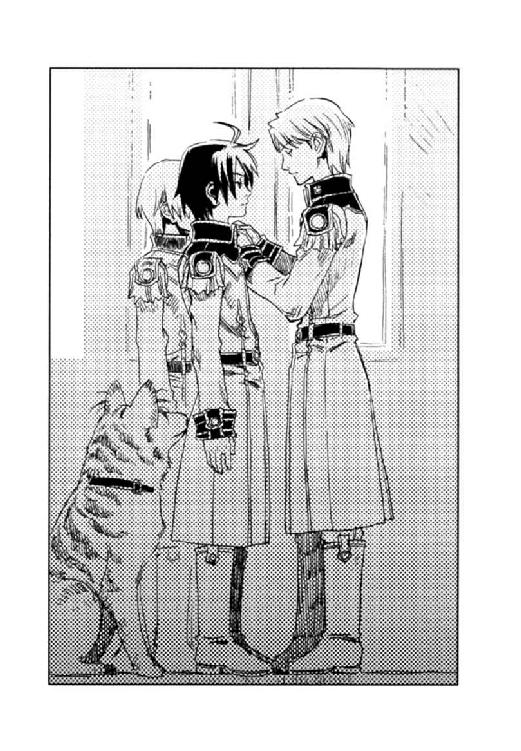

| 光の精煉師ディオン 旅立ちの朝は君と (角川ビーンズ文庫) | |
| 村田 栞 | |
| 角川書店 (2014) | |
光の精 師ディオン
師ディオン
旅立ちの朝は君と
村田 栞

角川ビーンズ文庫
本作品の全部または一部を無断で複製、転載、配信、送信したり、ホームページ上に転載することを禁止します。また、本作品の内容を無断で改変、改ざん等を行うことも禁止します。
本作品購入時にご承諾いただいた規約により、有償・無償にかかわらず本作品を第三者に譲渡することはできません。
本作品を示すサムネイルなどのイメージ画像は、再ダウンロード時に予告なく変更される場合があります。
本作品は縦書きでレイアウトされています。
また、ご覧になるリーディングシステムにより、表示の差が認められることがあります。
 師〉
師〉
どこまでも続く、真っ白い砂礫の荒野であった。
国境の山頂に立ち、それを眺める一組の父子がいた。
「何にもいないの？ 誰もいないの？」
あまりに索漠とした風景に、幼子は不安におののいて父の手を握る。
「ああ。鳥も獣も虫も、木も草も、何もなくなってしまった」
父親は、白い大地と空との境目から目を離さずに答えた。
「前は何かいたの？」
「ここはムスベルという、森と湖に囲まれた美しい国があったんだ」
「どうして、森も湖もなくなっちゃったの？」
「戦争が起こってね」
父親は幼子に目を移す。
「ムスベルは、黒雷獣という人の顔でライオンの体をした、大きな兵隊を造ったんだ」
「兵隊を造る？」
「そう。ムスベルは、優れた〈精〉の技術を持っていて、動く兵器──黒雷獣を幾つも造った。黒雷獣たちは、自分で自分の体を〈精〉して〈死の光と熱〉を口から吐いた。そして、何度も自分の体を〈精〉していくうちに、〈死の光と熱〉が止まらなくなって、自分たちの国を全部焼いて、白い砂漠にしてしまったんだよ」
幼子は怯えて父の手をギュッと握り返した。
「黒雷獣はどうなったの？」
「みんな溶けてなくなった。一体だけユーミールという名の黒雷獣が残ったけれど、帝国の科学者が脳と心臓を外して、体も全部バラバラにして、この砂漠のどこかに埋めたそうだよ」
「ユーミールは生き返る？」
幼子は恐る恐る尋ねた。
父親は息子を見つめる。優しく悲しげな眼差しだった。僅かな沈黙の後、
「バラバラになった体を全部集めて、組み立てて、脳と心臓をはめ込めば生き返る」
父は答えた。
「嫌。恐い──」
幼子はぶわっと涙を溢れさせ、父にしがみついた。
「泣かなくていい、大丈夫だよ」
父は膝を折り、べそをかく子どもを抱きしめた。
「大丈夫。生き返らせない。絶対に──」
父の瞳は白い砂礫の地平を見る。
「生き返らせない──約束するよ」
帝国暦一八五九年三月──。
アーガルド帝国領内、旧ムスベル領の神殿が盗掘された。
神殿は、数度に及ぶ帝国の調査により、保管されていた物はすべて回収したはずであった。しかし、盗掘の検証に当たったアーガルド帝国旧ムスベル領方面軍の報告によれば、礼拝堂の地下に、調査の手が及んでいない隠し部屋があり、栄華を極めた往時の宝物が手つかずのまま残されていたという。
隠し部屋には、宝物とともに多数の玲石が保管されていた。しかし、そのうちの幾つかが紛失していた。すなわち盗賊は数多の宝物には目もくれず、その玲石だけを持ち去ったのだ。
水星、金星、火星、木星、土星、月そして、陽の玲石──。
光源がなくとも、自ら光を放つところから、それらの玲石には星々の名が与えられ、総称して、〈光〉の玲石と呼ばれていた。
それらの盗難が報じられた時、帝国の上級〈精師〉は愕然とした。大陸でも〈光〉の玲石は希少である。しかし、ムスベルの神殿に秘密裏に保管されていた玲石にはそれ以上の意味があった。
なぜならそれらは、黒雷獣の誕生に関わったとされる、伝説の玲石だったからだ。

木々の緑が日ごとに鮮やかさを増し、軽やかなヒバリのさえずりが標高千八百メートルに位置するビヴロス峠にも、遅い春の到来を告げていた。
ねじれたダケカンバの木漏れ日を浴びて、幹の間の下草に埋もれがちな細道を一人の少年が歩いていた。
焦げ茶の革製のベストに同色の革ズボン、履き古したブーツ、右肩に猟銃をかけ、左腰には大型の狩猟用ナイフを下げていた。胸元には、鎖を通した女物の小さな指輪が揺れている。
肩にかかる黒髪は、伸ばしているというよりは単に手入れをしていないらしく、洗いっぱなしでパサパサと風に乱れがちである。少年は女性的な端整な面立ちをしていたが、陽に焼けた肌と、鋭い眼光を放つ深い紫の瞳が、華奢な印象を払拭していた。
彼の左肩には猪が担がれていた。少年は猟師なのである。
少年の後ろには、一頭の猟犬が付き従っていた。
遠目にはシェパードのように見えるが、普通の犬ではない。
狼のように獰猛な相貌、灰色の地に黒の虎縞模様、尖った耳には長い銀色の毛がヒラヒラとなびいていた。尾は三本あり、やはり長い銀色の毛が生えている。何のつもりか、その三本の尾を三つ編みにし、端を真っ赤なリボンで留めていた。
上級の〈精師〉であれば、犬の黒い瞳も艶やかな毛並みも源石の輝きを放っていることに気付くだろう。
この犬は、〈精〉によって造られた獣なのであった。
『ねえ、ディオン』
猛々しい犬の顔には全くそぐわない柔らかな声音で、犬は言った。その犬は人語を解するのである。
『日が暮れるまでにはまだ間があるわ。もう二、三頭、撃ちに行かなくていいの？』
「いいさ。これだけあればしばらくは食える。食う以上に狩りはしたくない」
『でも、おじいちゃんに叱られるわよ』
「気にしない、気にしない。じいちゃんの怒鳴り声なんて、夕立の雷とおんなじで、じっと通り過ぎるのを待ってればいいのさ」
少年──ディオンは、陽に焼けた肌とは対照的な、真っ白い歯を見せてニッと笑った。
「アッシュだって獲物を追うのはもうキツイだろ？」
『ううん、大丈夫。今日は割合調子いいの』
アッシュと呼ばれた人造犬は、首を緩やかに振った。
一人と一頭は、明るい日の降り注ぐ尾根から南斜面へ向かって下り、やがて沢の近くに建てられた丸太造りの家に到着する。
「ただいまー」
扉を開けたが返事はない。
「じいちゃん、まだ帰ってないな」
祖父デンゼルは老人会のチェス大会だとかで、朝からふもとの街へ下りていた。
「しめしめ」
ディオンは急いで猪を家の裏手にある食糧貯蔵用の物置小屋に吊すと、
「アッシュ、この隙に実験だ」
えー？ と目を丸くする犬に声をかけて、家の屋根裏部屋へと続くはしごを登った。
屋根裏部屋の扉には、デンゼルによって大きな錠前がつけられていたが、ディオンはその合い鍵を持っていた。
部屋の中には、平積みにされた書物と様々な石の標本が所狭しと置かれていた。すべて父の残した物である。
「えーと」
ディオンは、積まれた本の一角から何冊か取り出した。
「源石五百グラム、金星の玲石三グラム、水星の玲石二・八グラム──」
本を見ながらアッシュに指示を出し、犬はせっせと標本箱から色とりどりの石をくわえて持ってくる。
「陽の玲石が二十三グラム......なんだけど、これがないんだよな。今日は炎の玲石でやってみるか」
ディオンはポケットから、黒い手袋を出す。手袋といっても、指の部分は第一関節までしかない。素材は上等な革のように滑らかな光沢を放っているが革でもない。
手袋の手の平の部分には、円と星形の模様が銀の塗料で描かれている。
彼は両手にその指なし手袋をはめた。そして、左右それぞれ、手の平の中央に一つと、星形模様の先端に五つの玲石を貼る。星形の銀線には、玲石を吸着する特殊な作用があった。
玲石を貼った左手袋に、彼はリンゴほどの大きさの源石を載せる。源石は、中に虹色のゼリーでも入っているかのように、手の平の上でゆっくりと色模様の変化を見せた。
ディオンは源石の上に、右手をかざす。
「うまくいきますように」
少しずつ右手を近づけると、右手と左手の玲石の間に色とりどりの火花が散った。
ディオンはほんの僅か指を動かし、手袋に貼ってある玲石の角度を調整する。
左右の手の間を小さな稲妻が奔る。稲妻に射貫かれた源石が少しずつ浮き上がった。
虹色の源石が色を変え始めた。彼はその様子を真剣な眼差しで観察し、源石の変化に応じて、手首を捻り指を動かし、玲石の距離と角度を微調整する。
リンゴの大きさだった源石が縮んでいった。
「うまくいくかも」
ディオンの顔が期待に輝いた。
突然、目を焼くような光と、バン！という銃声のような爆発音が発せられた。
「うわっ！」『キャー！』
ディオンは顔を背けて目を閉じ、素早く両手を握った。アッシュはテーブルの下に頭を引っ込める。
光が収まり、ディオンは目を開け、手を開いた。アッシュも恐る恐るテーブルの上に顔を覗かせる。
源石は、乳白色の粘塊に変じ、散り散りにちぎれて手袋の手の平部分にペタッと貼り付いていた。
ディオンは落胆の表情も露わに、押し潰したパン生地のような源石のなれの果てを手袋から剝がした。
「やっぱ、純度の高い陽の玲石と高性能の〈炉〉がないと、思い通りに〈精〉できない」
ディオンはため息をつき、手袋から玲石を外した。
玲石とは、互いに向き合わせたり隣り合わせたりすることで、物質に変化をもたらす〈場〉を生じさせる特殊な石で、幾つかの種類がある。
その〈場〉の中に源石その他の物質を置き、様々な物に造り変える一連の作業を〈精〉という。源石は万物の素のような物で、源石からはおおよそ何でも造ることができる。
〈精〉によって何を造るかは、使用する玲石の種類や大きさ、向き合わせたり隣り合わせたりする距離や角度など、様々な要素が重なり合って決まる。従って、その組み合わせには、何百、何千通りもあるのだが、反応が始まった後にも、玲石の距離や角度を変えて反応の強さと反応させる時間を調整しなければならない。つまり、同じ玲石を同じ配置で用いても、操作が異なれば全く違う物が出来上がってしまうのである。
玲石を配置し、〈精〉を行う装置を〈炉〉と呼ぶ。〈炉〉は、玲石を適切な距離と角度に調整する役割を持つ。〈精〉工場では、千分の一ミリ単位で上下左右の玲石を調整する操作盤のついた、巨大な鉛製の〈炉〉で〈精〉を行うという。
しかし、ここには父が残した手袋の形をした〈炉〉しかない。この大きさの〈炉〉としてはかなり高性能なのだが、残念ながら僅かにディオンの手の大きさに合わず、玲石の微妙な調整がうまくいかないのである。
「正規の〈精師〉の資格を取れば、自分に合った〈炉〉が作ってもらえるし、良質の玲石も手に入るんだけどな」
〈精師〉とは、〈精〉を行う技術者のことで、国家試験に合格しなければ資格を得ることができない。〈精師〉になれば、専用の〈炉〉が与えられ、一般庶民には到底手にすることのできない高価な玲石も国から貸与されるのだが──。
アッシュの耳がピクッと動いた。
『ディオン、おじいちゃんが帰ってきたわ』
「やべ」
ディオンは慌てて手袋と玲石をポケットに入れ、屋根裏部屋を出ようとしたが、間に合わなかった。
「ディオン!!」
けたたましい音を立てて屋根裏部屋のドアが開いた。巨大な体軀の影が仁王立ちしている。ディオンの祖父デンゼルであった。
「ここに入っちゃいかんと言っただろうが！」
ややしわがれてはいるものの、空気がびりびりと振動するような怒号だった。
「チェス大会は？」
「一回戦敗退じゃ！ ここで何をしておった！」
「えーと......、ちょっと父さんの思い出に浸りたいなーと......」
デンゼルがズンと一歩進み出る。齢六十を越え、さすがに髪は白く顔にも深い皺が刻まれていたが、岩のような巨体から発せられる気合いと、鋭い眼光にはドがつく迫力がある。
「まさか、あれだけ言い聞かせたのに、まだ〈精師〉になりたいなどと世迷い言を言っているのではあるまいな」
「......なりたい」
ディオンは小声で答える。
「何じゃと？ もう一回言ってみろ！」
「なりたい──。俺は〈精師〉になりたいの！」
「ぶぅわっかも───ん!!」
大喝というより、こうなると轟音である。ディオンの鼓膜が悲鳴を上げた。アッシュは事態を予想していたので、あらかじめ伏せの姿勢をとり、両前足で耳を折りたたんでいた。
「〈精師〉なんぞろくなもんじゃない！ 儂は、ぜええったいに許さん!!」
「何でそんなに〈精師〉を嫌うんだよ！ 道具だって〈精〉されてできた物がいっぱいあるし、じいちゃんの歯痛の薬だってそうだ。みんな〈精師〉が造ったんじゃないか」
ディオンは果敢に言い返す。デンゼルはフンと鼻を鳴らした。
「お前の父親が〈精師〉だったからじゃ」
ここから先は何度も聞かされた話である。
「お前の母ジュディは、赤ん坊の頃から儂によくなついておった。年頃になっても、儂を世界で一番愛している、どこにも行かないでずっと儂の側にいると言っておったに──。お前の父モーリスに出会ってからは儂のことなど見向きもせんようになった。お前の父は、儂からジュディを奪ったんじゃ！」
「それって、単に婿に対する父親のやきもちじゃない？」
「そうじゃ。それのどこが悪い！」
デンゼルは胸を張る。
「そんなの、俺が〈精師〉になるのを反対する理由にならないじゃない」
「遠い国には、坊主憎けりゃ袈裟まで憎いという、ぴったりのことわざがあるんじゃ」
「意味わかんないよ」
「それに、──ムセイオンは遠い」
ムセイオンとは、帝都にある国立の〈精師〉養成学校である。そこで何カ年かかけて玲石の組み合わせと操作技術を学び、単位を取得して、晴れて正規の〈精師〉となれるのである。アーガルド帝国の帝都シャマナは、ここから二千キロ以上も離れ、汽車を乗り継いで四日、船を使っても丸三日はかかる。
「儂を独りにするつもりか。このヨボヨボの老人を、こんな山奥に置き去りにするというのか」
デンゼルは筋骨隆々とした腕を胸元で合わせ、目をうるうるさせて泣き落としにかかる。
（何がヨボヨボだ。今でも熊と素手で戦って勝つくせに）
ディオンは、心の中でぼやく。
「軍人にならなってもいいぞ。国境の警備兵になればここから通える。恩給もつくし、老後の保障もばっちりじゃ」
「やだ。戦争なんか嫌いだもん」
「軍人が嫌なら、ここで儂と一緒に猟師をやっておればいいんじゃ。お前の腕なら、大金持ちとは言わんが、食うに困らん程度には稼げる」
「......俺、アッシュの心臓を治したいんだ」
〈精〉で造られたアッシュは、ここ数年来、心臓の具合が悪かった。ディオンはアッシュの心臓を治すために、これまで父親の残した資料や玲石を使って、心臓を〈精〉する方法を研究していた。理論や方法は、おおよそわかったのだが、そのためには高性能の〈炉〉と上質な陽の玲石がいる。
「じいちゃんだって、アッシュに生きててほしいだろ？」
「う......む」
デンゼルは渋い顔をする。
「天命じゃ。そもそも生き物を〈精〉して造ったことが間違っておったのじゃ」
「アッシュに罪はないよ！」
「そんなことは百も承知じゃ！ 天然ボケてて、何があってもヘラヘラしとって、儂とて、見てくれ以外はジュディによく似たアッシュが愛しいわい！」
それを聞いてアッシュは喜ぶべきか否か、少々悩んだ。
「だったら、何で俺が〈精師〉になんのを反対するんだよ！」
「だから、お前の父親が〈精師〉だったからじゃ！」
──振り出しに戻る。
「もう、いい。じいちゃんのわからずや!!」
ディオンはデンゼルの脇をすり抜け、はしごを使わずに一気に階下へ飛び降りた。
玄関扉の横に立てかけておいた猟銃をつかむと、そのまま外へ走り出る。
『待って、ディオン！』
ディオンを追って階下へ下りる前、アッシュがチラッとデンゼルを振り返ると、彼は眉間に皺を寄せ、困ったような悲しそうな複雑な表情で、屋根裏部屋の品々を見つめていた。
「全く、どうしてわかってくれないんだろ。いくら歳を取ると頑固になるったって、言ってることが無茶苦茶だよなー」
ディオンはブツブツ言いながら下草を蹴散らしながら歩く。
『お願いだから、おじいちゃんと喧嘩しないで。ディオンが私のために〈精師〉になりたいって言ってくれるのは嬉しいけど』
アッシュは小走りでディオンの後についていく。
『ディオンと喧嘩すると、おじいちゃん、とっても辛そうな顔するのよ。何かかわいそう』
「じいちゃんに、かわいそうは似合わない。きっと頭の中まで筋肉がギッチリ詰まって──」
その時、アッシュの耳がピクッと動いた。
「どうした？ 獲物か？ 今日はもう獲らないよ」
『ううん、人の声......。大変！ 誰かが熊に襲われてる』
やさぐれていたディオンの表情が、さっと引き締まる。
「どっちだ？」
『こっち』
アッシュは来た道を駆け戻った。
その少年は地面から突き出た大岩にかじりついていた。岩の根本には二百キロはあろうかと思われる灰色熊が前足を振り上げ、ぶら下がった少年の足を薙ごうとしている。
ディオンは咄嗟に肩にかけていた猟銃を構え、熊に狙いを定めたが、
『待って。ほら、赤ちゃん』
アッシュが、岩の陰から顔を出している子熊に目をやる。
「子連れなのか」
『説得してみるわ』
アッシュはワンと一声発し、母熊に一歩近づいた。ディオンは万一のことを考え、熊から狙いを外さない。
アッシュの声に、熊と岩にかじりついている少年が同時に振り返った。
「た、助け......」
「しっ！」
少年の泣き声混じりの悲鳴をディオンは制した。熊はまだ殺気立っている。下手に騒いでこれ以上興奮させてはならない。
アッシュはクンと鼻を鳴らし、また一歩熊に近づいた。熊はグーと低い唸り声を上げる。
しばらくアッシュと熊は対峙していたが、徐々に熊の殺気が薄れ、表情に穏やかさが表れ始めた。
アッシュの耳は人の聴覚には感じられない音を聞くことができるが、喉も人には聞こえない声を発することができる。アッシュと熊は人間の耳には聞こえない声で会話をしていたのだ。
やがて、熊は岩の陰にいた子熊を呼ぶと、藪の奥へと姿を消した。
ディオンは銃を下ろし、
「もう大丈夫だ。降りて来いよ」
岩に張り付いていた少年に手を差し伸べる。
「あ......ありが......こわ......こわかっ......」
少年はずるずると岩を滑り、ディオンの手を借りて地面に下り立った、かと思ったら、そのまま地面にがっくりと座り込む。どうやら腰が抜けているらしい。
少年は簡素なウールの上着を着ていたが、中に着ているシャツもズボンも上等なシルクで、ピカピカに磨かれた乗馬靴を履いていた。肌は艶やかに白く、熊からの逃避行でやや乱れているものの、明るい金髪もよく手入れされている。
さしずめ貴族のお坊ちゃんが、庶民のふりをして遊行に出たといったところだろうか。
「命拾いしたな。子連れの熊ほど凶暴な獣はいないんだぜ」
「子連れ......？ あの赤ちゃん、熊の子だったの？」
「熊の子だって気付かなかったのか？ まさか近寄ったりとかしなかっただろうな」
「ちょっと抱っこしてみたいなって思って。そしたら突然大きいのが出てきて......」
ぜいぜいしながら語る少年の言葉に、ディオンとアッシュは目を丸くする。
「抱っこー！ 熊の子を抱っこしようとしたって────！」
「だって、かわいかったから......迷惑かけてごめんなさい。助けてくれてありがとう」
大きな空色の瞳に素直に見つめられ、ディオンは軽くため息をつく。
「いいよ、どうせ山歩きなんかしたことないんだろ？ どこへ行くつもりだったんだ？」
「デンゼル・クラウドさんていう方を訪ねるつもりなんだけど。君、知らないかな、この辺りで猟師をしてるって聞いたんだけど」
ディオンの目が再び丸くなった。あの粗野な山爺みたいなじいちゃんと、この見るからに箱入りのお坊ちゃんと、いったいどういう接点があるのだろう。
「知らない？」
「......いや、知ってるってか、俺のじいちゃんだ」
「そう言えば、クラウドさんには僕と同じ歳のお孫さんがいるって......。それじゃ君がディオン君？ わあ、偶然！」
少年は白い両手でディオンの手を握り、ブンブンと振り回す。
偶然も何も、この山には俺とじいちゃんしか住んでないし、とディオンは口の中で呟く。
「申し遅れたね。僕はフェルナンド。君に会えてよかった。このまま日が暮れちゃったらどうしようかと思ってたところだったんだ」
日が暮れる前に、熊に食われてたのでは？ とディオンは思った。
「で、じいちゃんに何の用だい？」
「ちょっと預かってもらいたい物が......あ、そうだ、グレープ！」
「グレープ？」
「僕の馬。赤ちゃん熊に触ろうとして馬を下りて、お母さん熊に追われている間に、はぐれちゃったみたい」
「なら、そんなに遠くへは行ってないだろう。アッシュ、呼んでやれ」
それまで、黙ってディオンの後ろに座っていたアッシュは、顔を仰向けて一声遠吠えをした。
フェルナンドはアッシュに視線を移し、目を輝かせる。
「大きい犬だね。随分と変わった毛色。あ、しっぽのリボンもかわいい。こっちにお出で」
ディオンは軽い驚きを感じた。アッシュは狼のように獰猛な顔をしているので、幼児などは見ただけで泣き出すし、大人だって大抵はビビッって後退る。初対面で近寄ろうとした人は、今までいなかったのだ。
アッシュがフェルナンドに歩み寄って座り直すと、彼はアッシュの頭をさわさわと撫でた。
「いい子だねー」
不用意に子熊を触ろうとして母熊の怒りを買ったことなどすっかり忘れている。基本的に動物好きなのだろう。
そうしているうちに軽い蹄の音がして、ヌッと黒く長い顔が、前方の藪の中から出てきた。
「グレープ！」
フェルナンドは立ち上がり、愛馬に駆け寄る。
「ごめんねー。恐い思いをさせたねー」
彼は愛馬に頰ずりをする。
グレープは全身真っ黒で、陽光の加減で青くさえ見えた。五百キロは優に超える巨体に無駄な肉はなく、毛艶のよさからも丁寧に飼育されていることが窺える。
「いい馬だな」
「でしょう？ 早駆けなら誰にも負けないよ。この間のイドゥナのレースだって......」
「イドゥナのレース？」
イドゥナのレースとは、王侯貴族がそれぞれ自慢の馬を持ち寄って速さを競うレースで、相当、位の高い貴族でないと出場できないはずだ。
「あ、えーと。急がないと日暮れ前に帰れなくなっちゃう」
話を逸らすフェルナンドにディオンは多少の胡散臭さを感じたが、（ま、いいか）と深く追及しなかった。
ディオンを先頭にアッシュが続き、フェルナンドがグレープの手綱を引いて、一同はディオンの家に向かって歩き始めた。
「グレープを呼んでくれてありがとう。犬語って馬にも通じるんだ。知らなかったよ」
フェルナンドはアッシュに語りかける。
『馬は賢いから、色んな動物の言葉がわかるのよ』
アッシュはうっかり答えてしまった。フェルナンドの腰がずりっと下がる。
「い、い、犬が、喋った！」
語りかけてはいたものの、まさか答えが返ってくるとは思わなかったのだろう。
「アッシュ！」
ディオンの叱責に、
『ごめんなさい、つい......』
アッシュは三つ編みリボンのしっぽを垂れた。
人前では普通の犬のふりをしていろと、アッシュはデンゼルからきつく言われていた。だが、親しげに話しかけられ、うっかりしてしまったのだ。
驚き、恐れ、終いには化け物呼ばわりして逃げるかとディオンもアッシュも思ったが、フェルナンドの反応は意外だった。
「すごい！ すごい！ すごい！ 喋れるなんて、すごい犬だね！ いいなー！」
フェルナンドは愛馬に顔を向け、
「ね、グレープも喋ってみて」
本気で期待している。
「馬が喋るか」
こいつ、どっかが抜けているかも、とディオンは呆れた。
「こうなったら仕方がない」
ディオンはフェルナンドに向き直った。
「アッシュは普通の犬じゃない。〈精〉で造られた獣なんだ。人間並みの知能を持ってるし、人語どころか、熊語も馬語も鳥語も喋れる。けど、こんなことが世間に知れたら大騒ぎだろ？ だから、アッシュが喋ることは誰にも言わないでいてほしいんだ」
真剣に語るディオンに、フェルナンドは軽く微笑んで応じた。
「うん、わかってるよ。このアーガルド帝国に〈精〉で生き物を造る技術があるなんて、しかも、それが人間並みの知能を持ってるなんて知れたら、連邦が黙ってるわけないもの」
ディオンは瞠目する。
連邦──ユグドラ大陸の西に位置する砂漠の国、ヨートゥン共和国連邦。
連邦は、帝国の肥沃な土地と源石の鉱脈を手に入れようと、度々帝国領内に侵攻し、全面戦争になったことも何度かあった。今は休戦中だが、一触即発の緊張状態にある。
ディオンはフェルナンドを、世間知らずのお坊ちゃんだと思っていたが、少しばかり認識を改めた。
「約束するよ。誰にも言わない。戦争になったら嫌だもん」
フェルナンドの言葉にディオンは破顔した。
「戦争は嫌いか。俺もだ」
ディオンとフェルナンドは肩を並べて再び歩き出した。
「でも、すごいね。アッシュは誰が造ったの？ そんなすごい〈精師〉がこの国にいたんだ」
「俺の父さん」
「お父さん？」
「俺が三つの時、前の戦争で母さんが死んじまってさ。どうも俺は母さんを恋しがってべそべそ泣いてばかりいたらしい。俺はよく憶えてないんだけど。で、当時父さんは〈精師〉養成学校──ムセイオンの研究所に勤めてて、母さんの代わりにってアッシュを造ってくれたんだってさ」
「お母さん、亡くなったの......」
フェルナンドは表情を曇らせる。
『どうせなら、人間の女の姿に造ってくれればよかったのにねえ。二足歩行は難しかったんですって』
フェルナンドの胸中を察したのか、アッシュは明るく言う。
「ディオンのお母さんて、凛々しい感じの人だったんだね」
悲しい眼差しでフェルナンドは、アッシュの恐ろしげな顔を見る。
「いや、多分──違うと思う」
父は〈精師〉としては優秀だったのかもしれないが、造形的センスは皆無だったのだろう。
「お父さんはムセイオンへ単身赴任してるの？ それとも退職して、こっちで一緒に猟師をしてるの？」
「アッシュを造って、それからしばらくして、前線へ行かされて、それっきり。多分、死んでるんだろう」
ディオンは何でもないことのように答えたが、フェルナンドの表情は一層暗くなった。
「──ごめんね。悲しい話させちゃったね」
「そんな顔するなよ。戦争孤児なんて珍しくもないだろ。俺にはじいちゃんもいるし、アッシュもいるし、親を亡くした子どもの中じゃ、相当、幸せな方だと思うぜ」
ディオンは笑む。
「強いね。自分のこと、そんな風に言えるなんてすごい」
フェルナンドに屈託なく見つめられて、ディオンは何だかくすぐったい気持ちになった。
その時、背後でドサッと何かが地面に落ちるような音がして、二人は同時に振り返った。
アッシュが倒れていた。苦しげに目をつむり、背を丸め、足が痙攣している。
「アッシュ！」
二人は駆け寄った。
「どうしたの？ どこか痛いの？」
フェルナンドは真っ青になってアッシュの背を撫でるが、アッシュは声も出ない。
「発作だ。くそっ。薬を持ってきてない」
ディオンは手早くポケットから黒の指なし手袋を取り出し、幾つかの玲石を貼り付ける。彼は、ざっと辺りを見回し、下草の中からジャノヒゲとジギタリスの若葉を摘むと左手に載せ、右手をかざす。両手の間を稲妻が結び、緑の若葉が宙に浮いた。
「この手袋は〈炉〉なんだね。君、〈精〉できるの？」
バチバチと火花を散らす若葉を見つめ、フェルナンドは尋ねた。
「無免許だけどね」
「源石を使わないで、自然の物を〈精〉するのは、かなり高度な技術だって聞いたけど」
「そうなのか？ 俺、ほとんど独学だから自分のレベルはよくわからない」
言いながらディオンの指は優雅に動く。緑の葉が茶褐色の液体に変わったのを見計らって、彼は右の手を握り、稲妻を収める。窪ませた左手の手の平にスプーン一杯ほどの液体が滴った。
ディオンはアッシュの固く食いしばった口をこじ開け、左手の液体を流し込んだ。少し口の端からこぼれたが、何とか嚥下できたようだ。
二人はじっとアッシュの様子を見守った。
しばらくしてアッシュは大きく息を吸い込み、目を開けた。
『ディオン......』
ディオンはホッと息をつき、フェルナンドは、
「良かったー！ 生き返った」
と、アッシュの首に抱きついた。
「生き返った──って、死んでないけど」
やっぱり頭が春だとディオンは思う。
「マジで日が暮れちまう。行くぞ」
ディオンはまだぐったりしているアッシュを抱き上げた。
「アッシュは病気なの？」
すっかり長くなった影を踏みながら、フェルナンドは心配げにアッシュの顔をのぞき込む。アッシュはうとうとと眠っているようだった。
「心臓が悪い。病気って言うより、故障だな。〈精〉で造られた物だから、機械と同じで、古くなるにつれて、動きが悪くなるらしいんだ」
「治す方法はないの？」
「色々研究してみて、発作の時は、血の流れをよくする薬が、ある程度は効くことはわかったんだけどね。完全に治すには、心臓を〈精〉し直すしかないんだ」
「だから、自分で〈精〉の勉強したんだね」
「うん。俺、〈精師〉になりたいんだ。正規の〈精師〉になればいい玲石が手に入るし、高性能の〈炉〉も作ってもらえる」
「大丈夫。ディオンぐらいの技術があれば、ムセイオンを卒業しなくたって、資格検定ですぐにでも〈精師〉になれるよ」
「そんな手があったのか」
ディオンは一瞬目を輝かせたが、
「未成年は保護者の承諾がいるけど」
と言われて肩を落とす。
「──じゃ、無理だ。じいちゃんが大反対でさ。〈精師〉なんてろくなもんじゃない。軍人になるか、ここで猟師をするかって、そればっか」
「そうなの......」
「成人するまでか......。それまで、アッシュの心臓が保つかな......」
ディオンは細いため息をついた。
間もなく家に着き、フェルナンドはグレープを柵に繫ぐと、鞍に縛りつけてあった包みを持って、ディオンの後に続いた。
家に入ってすぐの部屋は居間と食堂を兼ね、隅には小さな台所がついている。そこでデンゼルはつい二時間ほど前に喧嘩したことなどすっかり忘れて、上機嫌で包丁を振るっていた。
「お帰り。今夜は大奮発して猪肉のソテーじゃぞ」
「大奮発って、俺が仕留めた猪じゃないか」
デンゼルはまな板から顔を上げ、アッシュがディオンに抱かれているのを知って、「発作か」と包丁を置いた。そして、ふとディオンの後ろにいるフェルナンドに気付く。
「じいちゃんのお客だよ」
「ご無沙汰してます」
「はて？ どこかでお目にかかりましたかな？」
訝しげなデンゼルに、
「最後にお会いしたのは、もう十年ぐらい前になります」
フェルナンドは、手にしていた包みを開いた。
それは、大きさからすると宝石箱だと思われた。しかし、本体はなぜか鋼で、硬質な輝きには似合わず、箱の蓋には、四季の花々や鳥が絵付けされた小さな正方形のタイルが敷き詰められていた。
ディオンには、その鋼が、〈精〉で造られた物であることがわかる。溶鉱炉に放り込んでも溶けず、工作機械で切断しようとしても傷一つつけることができない特殊鋼だ。ただの宝石箱にしては、仰々しい代物だった。
デンゼルはひどく驚いた顔をし、続いてディオンが今まで見たことのないような厳しい表情になった。
「ディオン、アッシュを連れて寝室に入ってなさい」
「何だよ、急に」
「いいから、行くんだ」
いつもの怒声と異なり、静かだが有無を言わさない迫力があった。
ディオンは頭の中身も筋肉のような単純明快な祖父に、こんな一面があったのかと少々驚く。
「わかったよ」
いずれにしろ、アッシュを休ませなくてはならないので、ディオンは敢えて逆らわずに台所兼食堂の居間を出た。
アッシュを専用のベッドに寝かせ、作り置きの薬を飲ませる。アッシュが安定した寝息を立て始めると、ディオンは居間と寝室を隔てるドアに耳を寄せて、デンゼルとフェルナンドの会話をこっそり盗み聞いた。
「......僕の一存............反対勢力が......あなたにしか頼めない」
しかし、二人とも極めて小声で喋っていて、途切れ途切れにしか聞こえなかった。
フェルナンドがいとまを告げたのは、空がすっかり夕焼けに染まった頃だった。
「じゃあ、ディオン。今日はありがとう」
フェルナンドは手綱をほどき、グレープにまたがった。
「子熊を見ても知らんぷりしてろよ」
ディオンは玄関先で見送る。
「うん、僕はふもとの街の〈樹園〉っていう宿にしばらく泊まっているから、アッシュが元気になったら遊びに来て」
さよなら、とほんわかした笑みを浮かべて、フェルナンドは山を下りて行った。
ディオンが居間に戻ると、デンゼルはやけに険しい顔で、できたばかりの猪ソテーを皿に盛りつけていた。テーブルの上には、フェルナンドが持って来た鋼の宝石箱が置かれたままになっている。
「忘れ物？」
ディオンが箱に触ろうとすると、
「預かってくれと頼まれたんじゃ」
デンゼルはさっと箱を取り上げ、銃の弾などを入れておく戸棚にしまった。
「あの箱の中、何が入っているんだ？ そもそもあいつ何者？」
単なる好奇心で、ちょっと訊いてみただけだったのに、
「お前が知る必要はない」
デンゼルの声も表情も、いつになく厳しかったので、ディオンはひどく驚いた。
翌日、なぜかデンゼルは、毎日ふもとの街グロアまで下りて、新聞を買ってくることと、〈樹園〉に寄ってフェルナンドの安否を確かめることを、ディオンに頼んだ。
理由を尋ねても、むっつりと黙り込んでしまう。これ以上デンゼルの機嫌を損ねるのは面倒なので、とりあえずディオンはアッシュを連れて、フェルナンドを訪ねることにした。
〈樹園〉は、商人が商談に使ったり、官僚が出張で利用する清洒な宿だった。観光宿のように華美な装飾や遊戯施設はないが、設備は整っていて、従業員の応対も丁寧だった。
最初は、宿の受付でフェルナンドがいることを確かめるとそのまま帰ったのだが、何日かするうちに、ディオンが毎日通っていることを受付で聞いたのだろう、フェルナンドは宿のロビーでディオンを待っていて、世間話を交わすようになった。
「一人で退屈なんだ。君とアッシュが来てくれると本当に嬉しい」
フェルナンドは満面の笑みを浮かべて、ディオンを出迎えた。ディオンの方も、フェルナンドの他意のない笑顔を見ているうちに、彼と会うのが楽しみになっていった。
フェルナンドのことを詮索するのはデンゼルから止められていたが、
「お前、貴族の坊ちゃんなんだろ？ 召し使いとか、お供の人とかいないの？ じいちゃんはお前のことすごく心配してるしさ。お前、何でこんな田舎に一人でいるわけ？」
ある日、ディオンは思い切って尋ねてみた。わざと質素な服装をして商人向けの宿に泊まるのは、世間から身を隠しているとしか思えない。
「僕は、平和を愛する正義の味方を目指して、ちょっと踏ん張ってるところなんだ」
彼はそう言って笑った。
「でも、子どもって損だよね。僕のことなんか、誰も相手にしてくれない。言ってることが正しいか正しくないかなんて問題じゃなくて、頭っから子どもは黙ってろって感じ」
フェルナンドは肩を竦めてため息をつく。
「それについては同感。自分でやりたいことがあったって、大人に反対されればそれまでだもんな」
「ディオンは〈精師〉になりたいのに、デンゼルさんに反対されてるんだよね」
「そ、軍人になれってさ。でも俺、人殺しなんかしたくない」
「ディオン、軍人になりたくないの？ 僕、軍隊に入隊しようって思ってるんだけど」
「お前、戦争は嫌いだって言ってただろ？」
「戦争は嫌だけど、軍備は必要だと思うよ。だって、相手は連邦だよ。話し合ってわかってくれるような甘い相手じゃない。って言うか、向こうは甘いこと言ってたら、国が成り立たないほどひっ迫してるもの。帝国に軍備がなかったら、あっという間に攻め滅ぼされちゃう。だから、こっちには強い軍隊があるんだぞーって見せつけて、簡単には攻撃できないんだぞって思わせなきゃ。で、がんばって出世するの。軍を動かせるほどの発言権が持てたら、本当に戦争になりそうな時、それを止められるじゃない」
「いっそのこと政治家になれば？ 貴族なら、帝国議会の上院議員になれるじゃないか。開戦するかどうかは議会で決めるんだから、戦争が始まりそうになったら反対すりゃいい」
「あ、それいいかも。でさ、ディオンが将軍になって、軍備を増強しつつ、軍の強攻派を抑えるの。軍部と議会のトップが力を合わせれば、戦争なんか起きない平和な国が造れるよ」
「いや、俺はどちらかと言うと軍縮の方向で」
「連邦とうまーく交渉して、貿易を盛んにして友好関係を作れば、軍縮も不可能じゃない」
フェルナンドはディオンの瞳を見つめ、
「がんばろうね」
と、夢見るように笑む。ディオンは「うん」とうなずきかけて、
「違うって、俺は〈精師〉になりたいんだってば」
慌てて訂正する。
（戦争のない国か......大層な夢だな。そうなったらいいとは思うけどさ）
俺の願いはこいつの心臓を治すことだと、ディオンは足下でしっぽを振っているアッシュに目を落とす。
結局、フェルナンドが何者なのか、聞き出すことはできなかった。
帝都シャマナ。
アーガルド帝国陸軍総司令部──。
キース・アーベルンは、濃紺の制服に身を包み、司令室に向かって足早に歩んでいた。ブーツの硬い音がカツカツと石の床に響く。
すれ違う将校や下士官たちは、無意識のうちに道を譲り、通り過ぎる彼の横顔をぼうっと眺めた。女性の事務官は、頰を染めて「キャアッ」と小さな歓声を漏らしたり、連れの者とひそひそクスクスささやき交わしたりする。
それらは、キースの類い希なる美貌に対しての羨望であったり称賛であったりした。
真珠のように柔らかな光沢を放つ髪、日に輝く薄氷の海を思わせる銀がかった青い瞳。通った細い鼻筋と、ややつり気味にカーブを描く眉。軽く引き結ばれた唇は繊細さと凛々しさとを兼ね備えていた。
彼は二十八歳という若さで、一個師団を率い、中将という地位を得ていた。
昇進が、出自に大きく影響されるという帝国軍の慣習があったにしても、士官学校もムセイオンも首席で卒業したという事実の前には、誰も文句は言えない。
「キース・アーベルン中将、参りました」
司令室には、秘書官も衛兵もおらず、白髪交じりの茶色い髪をきっちりとオールバックに整えた男が、ただ一人大きなデスクの向こうに座っていた。
陸軍総司令官スヴァルト公爵エイモス・アーベルン元帥──。
名実共に陸軍の頂点に立つ男である。
彼は、読んでいた報告書から顔を上げ、
「呼び出して悪かったな。まあかけなさい。二人きりの時ぐらい、そう堅苦しくせんでもいいだろう」
敬礼を崩さないキースに椅子を勧めた。キースはエイモスの養い子なのだった。
「ムスベルの神殿跡から盗まれた玲石の行方はつかめそうか？」
「帝国内にはくまなく捜査網を張り巡らせましたが、今のところはまだ──。連邦には、密偵を放っておきました」
先日、帝国内の旧ムスベル領から、黒雷獣の〈精〉に用いられたと噂される伝説の〈光〉の玲石が盗まれた。キースは旧ムスベル領にて、それら〈光〉の玲石の捜索に当たっていたが、エイモスに呼び出され、帝都に戻って来たのである。
「いったい誰が何のために持って行ったのやら。あんな物を持って行ったところで、使えるやつなど巷にはおらぬし、売り飛ばせばすぐに足がつくだろうに」
やれやれといった風情で、元帥は浅いため息をつく。
「もう一つ捜し物ができてしまった。早急にビヴロス地方へ行ってもらいたい。お前の〈蒼い鷹〉を連れて」
陸軍第十三師団第七部隊、通称〈蒼い鷹〉──。
〈蒼い鷹〉は、二十名にも満たない小隊だが、隊員がすべて〈精師〉の資格を持つ上、戦闘力においても歩兵連隊並みの働きをする精鋭を揃えていた。
陸軍は普通、白い鷹の階級章をつけるが、第七部隊だけはその特殊性から蒼い鷹の部隊章が与えられていた。名目上はキース率いる第十三師団に属するが、実際は元帥の司令下に置かれる特殊部隊である。
「〈光〉の玲石の方は？」
「引き続き、十三師団に任せる」
「では、ブロスナー准将に指揮を執らせましょう。緊急事態ですか？」
キースが十三師団を置いて〈蒼い鷹〉とともに任務に就くということは、任務が極秘且つ緊急であることを示していた。
「その前に一つ、──〈蒼い鷹〉の入隊を志願している者がいるのだが」
「随分と時季外れですね」
〈精師〉養成学校ムセイオンも士官学校も卒業は九月である。
「そもそも、なぜ父上のところにそんな話が？」
「私がお前の養父だからだろう」
「私は、コネを使って入隊しようなどという不遜な輩を入れるつもりはありません。第一コネがなければ入れないような者では〈蒼い鷹〉の任務は務まりません」
「私もそう思うが、ちと、断れぬ事情があってな。それに、今回の任務ともあながち無関係とは言えん。せめて入隊試験だけでも受けさせてくれ。詳細は、わかり次第伝書鳩で送る」
「わかりました」
「では、本題に入ろう」
政の一端を担う、帝国陸軍総司令官の表情が曇る。
「先日、ユーミールを復活させるか否かで、議会が紛糾したのを知っておるか？」
「いいえ。ユーミールと言うと、黒雷獣の最後の一体のユーミールですか？」
「そうだ」
「それで、皇帝陛下は何と仰ったのです？」
ユーミール復活の決定権を握っているのは、アーガルド帝国皇帝だった。
「陛下は賢いお方だ。皇帝が政治に余計な口出しをすれば、議会制度が崩壊することをよく承知していらっしゃる。御裁断を避け、議会を延長してよく審議するようにと仰せられた」
つまり、よきに計らえと言うことである。
「民主的ではありますね」
キースは口調にやや皮肉めいた響きを滲ませた。
「強攻派はユーミールを復活させて、このアーガルド帝国もムスベルのように、白い砂礫の荒野に変えるつもりなのでしょうか」
キースは、白い手袋をはめた自分の手に視線を落とす。
彼はムスベルの戦災孤児だった。黒雷獣が暴走して街を焼き、生きている物も、そうでない物も、何もかもを白い砂に変えていく様を目の当たりにしている。
「そこまでは考えておらんよ。連邦に対する防衛戦略の一つに過ぎん。単なる抑止力としてユーミールを復活させるつもりだろう」
「けれども、連邦の経済は崩壊寸前です。豊かな帝国の領土を手に入れるためには、黒雷獣を本当に起動させることも躊躇しないでしょう？ 不用意に黒雷獣を蘇らせるのは危険です」
「私もそう思う。幸いなことに、議会が延長されたので、ユーミール復活反対派が説得工作に奔走しておる」
元帥は声を潜める。
「なぜ、議会が延長されたか──。ここからは極秘だ。たった今情報が入った。その真偽を確かめるために、〈蒼い鷹〉にビヴロス地方に行ってもらいたいのだ。実は──」
空には重い雲が垂れ込めていた。山は灰色のベールがかかったように霞んでいて、よく見えない。
「頂上は、降り始めたな」
この天気では猟には出られないので、すでに日課となったフェルナンドとの世間話のついでに、ディオンは買い物をして帰ることにした。
「じいちゃんの酒と、パンと、猟銃の弾も買い足しておいた方がいいな」
アッシュは人前では普通の犬のふりをしていなくてはならないので、返事の代わりにコクコクとうなずく。
「ついでに、郵便局にも寄っていくか」
ディオンの家は山の中腹にあるので、郵便を配達してもらえない。だから、郵便物は局留めにしてあった。
「こんにちはー。クラウドだけど、何か届いてる？」
郵便局の窓口で声をかけると、馴染みの局員が顔を出す。
「あら、ディオン君、お久しぶり。アッシュも相変わらず恐い顔ね。来てるわよ、デンゼルさんに二通、あなた宛てに一通」
「へ？ 俺に？」
ディオンに手紙が来るのはとても珍しいことだった。デンゼル以外に身寄りはなく、幼年学校時代の友だちはこの街に住んでいるので、手紙のやりとりをする必要はない。自分に手紙をくれるような人は思い当たらなかった。
「誰だろ」
ディオンは封書の差出人の欄を見る。そこには「アーガルド帝国陸軍本部」と書かれていた。
（軍が俺に、何の用事？ まさか、無免で〈精〉の実験やってるのは法律違反だとか？ いや、それなら警察が──）
ディオンはその場で封蠟を剝がし、中の書面を読む。
──ディオン・クラウド殿。貴殿の志願書を受理し、書類選考の結果、下記の通り陸軍第十三師団第七部隊〈蒼い鷹〉の入隊試験を行う。日時、帝国暦一八五九年四月三日、場所ビヴロス方面軍管内、選考方法、試験官による行動観察──。
「何だよ、入隊試験て。俺は志願書なんか出した憶えはないぞ」
思いもよらない内容にディオンは面食らった。
何かの間違いではないか、誰かの悪戯ではないかと、宛名と差出人を確かめたが、住所も宛名もディオンの物であった。
封蠟の印が本物かどうか郵便局の局員に見てもらうと、
「間違いなく帝国陸軍の物よ。まあ、〈蒼い鷹〉ですって？ すごいじゃない！」
彼女は志願書を見て歓声を上げた。
「すごいって？」
「知らないの？ 軍人さんの中でも、〈蒼い鷹〉は別格だっていう話よ。精鋭中の精鋭、近衛になるよりも大変だって言うわ。だから特別に蒼色の鷹の部隊章なんですって」
局員は「がんばってね」と、ディオンの肩を叩いて送り出す。
「さては、じいちゃんの仕業か」
ディオンはぐしゃっと入隊試験の通知を握りつぶした。
常日頃、猟師を続けるか、さもなくば国境警備の兵士になって家から通えと言っていた。
「国境の砦は、山二つ越えたとこにあるんだぞ。片道三時間、毎日通えって、本気で言ってたのか?!」
『ディオン、四月三日って......』
アッシュが小声でささやいた。
「明日じゃないか───!!」
「精鋭だろうが何だろうが、俺は軍人になんかならない。入隊試験なんて受けるもんか」
プリプリしながら郵便局を出たディオンは、そのまま〈精〉用品店へ向かう。〈精師〉相手に、オーダーメイドの〈炉〉や玲石を受注したり、〈炉〉のメンテナンスをしたり、〈精〉工場に源石を卸したりする専門店である。
玲石も〈炉〉も、値段が高すぎて買えないのはわかっているが、ディオンは見に行かずにいられない。
「いらっしゃいませ」
店主は、入ってきた客が、見るだけで何も買わないいつもの少年だと知ると、愛想笑いを止めて伝票の整理を再開した。
ディオンはショーケースに飾られた色とりどりの玲石を眺め、ため息をつく。
玲石は、ルビーやダイヤモンドなどの宝石類と同じくらい高価な品である。〈精師〉でなくても指輪やネックレスにする金持ちもいるらしい。
ディオンの欲しい陽の玲石は、七千万バルク──。
さして大きな物でもなく、あまり純度も高くない。それでも、七千万バルクもするのだ。
正規の〈精師〉には、貸与という形で国が金額を肩代わりしてくれるが、一般人はそうはいかない。
（いったい、何百頭の猪や鹿を撃てば買えるのかな）
山の獣を狩り尽くしても届かない金額である。もちろん、むやみに動物を殺したくはないので、そんな気はないのだが。
（こないだ、旧ムスベル領の神殿から〈光〉の玲石がごっそり盗まれたって新聞に書いてあったっけ。そんなのがあるなんて知ってたら、俺が盗みに行ってたのになー）
光源がなくとも自ら光を放つところから、五つの星、月、陽の玲石を総称して〈光〉の玲石と呼ぶ。アッシュの心臓の〈精〉に必要な玲石のうち、星と月は父の遺品に交じっていたが、陽の玲石だけはないのだ。
なかなか陽の玲石から目を離せずにいると、
「ちわーっす」
扉が勢いよく開いて、ドカドカと店内に入ってくる複数の足音が聞こえ、ぴたっと止まる。
ディオンとアッシュは振り返った。
そこには、濃紺の制服に身を包んだ軍人が三人、こちらを向いて瞠目し、固まっていた。
一人はボサボサの茶髪で、腰にガンベルトを巻いていた。一人は赤毛の妖艶な美女で、もう一人は、すらりとした金髪の美男子──美女かもしれない。
彼らの目はアッシュに向いていた。
ディオンは、三人の階級章に目を留めた。陸軍は赤地に白い鷹、海軍は青地に黒い鷹の階級章をつけることは知っている。しかし、彼らは襟に、銀地に蒼色の鷹の階級章をつけていたのだ。確か、郵便局の局員が〈蒼い鷹〉の部隊章は、蒼色の鷹だと言っていた。
（もしや、試験官？）
ディオンが尋ねようとしたのと、三人の軍人の硬直が解けたのとが同時だった。
「あんたたち〈蒼い鷹〉部隊の兵士か？」「その犬は何だ！」「あんたたちが試験官なのか？」「誰が〈精〉したんだ！」「俺、志願した憶えがないんだよ」「何でそんなすごいのが、こんなド田舎にいるんだ!?」
ディオンと茶髪のガンマンが同時に喚いた。
「ストップ、ストップ」
赤毛美女が、間に入った。
「大佐も坊やも落ち着いて。それに、ここではまずいでしょ、外に出ましょう」
美女は、怪訝な顔でこちらを見ている店主をチラッと見やった。
店の裏の路地に場所を移し、ディオンとアッシュは三人の軍人に向き合う。
「じゃ、歳からいって、俺たちからな」
大佐と呼ばれたガンマンが一歩前に進み出る。
「俺は、カイル・ブラナー。階級は大佐」
彼は背が高く、デンゼルほどではないが、軍服の上からもわかるほど屈強な体つきをしていた。ガンベルトに収まっているのは四十五口径のリボルバーで、訓練を積まなければ反動で撃った本人が吹っ飛ぶという、拳銃の中では一番口径の大きな物である。硬そうな茶色の髪と、鋭い顎の線や唇の形は、荒々しい男っぽさを印象づけていたが、こぢんまりとしたハシバミ色の目は、思いのほか優しく愛嬌があった。
彼は、他の二人に自己紹介しろと促す。
「私はジェイダ・ファーロング大尉。よろしくね」
美女は、赤い唇に溶けるような笑みを刻む。艶やかな赤毛は腰まで垂れ、腰の線も露わな細身のスカートに、ハイヒールを履いている。切れ長の水色の瞳、抜けるような白い肌、豊かな胸に細い腰と、およそ軍人には似つかわしくない妖艶さをまとっていた。
「ユアン・レト中尉です。お見知りおきを」
彼──なのか彼女なのかわからないが──は、カイルと同じ男物の軍服を身に着けていた。柔らかな声音は男にしては高く、女にしては低い。中尉もやはり抜けるような白い肌をしている。華奢な顎と、長い睫に縁取られた伏し目がちな緑の瞳は、男装の麗人にも見えたが、女性にしては背が高く、ジェイダと違って体の線は極めて直線的だった。
「お前の言う通り、俺たちは〈蒼い鷹〉のメンバーだ。お前、名前は？」
一番階級が上の大佐──カイルが尋ねた。
「ディオン・クラウド」
「その〈精〉で造られた犬は？ お前のもんか？」
カイルはディオンの足下で体を縮めて座っているアッシュに目を落とす。
ディオンは、内心ギクリとしたが、
「──アッシュは、ただの犬だよ」
極力、うろたえた様子を見せないように答えた。
「坊主、俺たちゃプロなんだよ。一目見りゃそれが〈精〉されたもんだってわかるんだ」
カイルは軽く笑む。
「プロ？ 〈精師〉なの？ 国境警備の兵隊じゃないのか」
なんで、国境警備だと思うわけ？ と前置いて、
「〈蒼い鷹〉は、〈精師〉の資格を持った兵士の部隊だ」
彼は答えた。
「〈精師〉の軍人がいるんだ。初耳......」
ディオンの心が揺らぐ。軍人は嫌だが、〈蒼い鷹〉に入れば、陽の玲石が手に入るかもしれない。
「〈蒼い鷹〉も、戦争に行って人を殺したりするの？」
「そう命令されればな」
やっぱり入隊するのは止めだ、とディオンは心の中で呟く。
「坊主、さっきの質問に答えろ。その犬はどうした？」
ディオンは覚悟を決めた。アッシュが〈精〉で造られた犬だと、一目で看破する連中に今更噓をついてもしょうがない。
「アッシュのことは秘密なんだ。内緒にしてくれるなら言うよ」
「当たりめーだ。こんな〈精〉の高等技術は国家機密なんだ。お前こそ言いふらすんじゃねえぞ」
カイルの返答にディオンは少しだけ緊張を緩める。
「俺の父さんが造ったんだ」
「父さん──？ 待てよ、坊主。お前、確かクラウドって言ったな」
「そうだよ、ディオン・クラウド」
「お前、じいさんがいねーか？ デンゼル・クラウドっていう名の」
「いるよ。じいちゃん、知ってるの？」
カイルは目を丸くする。
「知ってるも何も......じゃ、お前の親父さんはモーリス・タウンゼント博士か？」
「そうだよ」
デンゼルに引き取られる前は、ディオンもタウンゼントを名乗っていた。
カイルは、瞠目したまましばらく沈黙する。そんな彼の様子を見て、
「大佐。この坊やのお父様とお祖父様を御存知なの？」
ジェイダが尋ねる。
「あ？ ああ、まあな」
カイルは妙に愉快そうに答えた。ディオンはカイルの反応を「おや？」と思ったが、〈精師〉ならムセイオンに勤めていた父を知っていてもおかしくないと、深く考えなかった。
「犬を見てもいいか？」
カイルは片膝をつき、アッシュの顔を正面からしげしげと眺めた。
アッシュは一、二歩後退ったが、カイルがガシッとアッシュの肩をつかむ。
「滅多に見られるもんじゃねえぞ。お前らもよく見とけ」
彼はジェイダとユアンを手招いた。三人は座り込んでアッシュの体をつぶさに観察する。
「触った感じは、普通の犬と変わらねえな」
「虎縞というのが面白いですが、体毛は本物そっくりですね」
「口腔内は、見た目より短いわね。舌の形や厚さはほとんど人間と同じだわ」
口をこじ開けられ、
『いやん。ディオン、助けて』
思わずアッシュは声を上げて逃げようとする。
「おおっ、喋れるのか」
三人は揃ってパチパチと拍手した。
「で、雌なわけ？」
カイルはアッシュのしっぽの赤いリボンに目をやる。リボンはデンゼルのこだわりである。ディオンの母ジュディが長い髪を三つ編みにして赤いリボンで留めていたらしい。
「それにしては、おっかねー顔だな」
アッシュの顔については、いつもの評価が下された。
「容姿だけで性別を判断してはいけません」
ユアンは上官を軽く睨み、「かわいいリボンですよ」と、アッシュに穏やかな笑みを向ける。
「......今度は、俺から質問していい？」
「いいぜ」
三人は、アッシュをかき回すのをやめて立ち上がった。
「ユアン・レト中尉、中尉は、男なの？ 女なの？」
本当に訊きたかったのは、このことではないのだが。
「僕は男ですよ。そう見えませんか？」
ユアンは、柔らかな笑みを浮かべる。
「「「見えない」」」
ディオンと一緒に残り二人の同僚も口を揃えた。
「残念です」
ユアンは細いため息をつき、
「でも、こちらに雄のような顔をして実は雌という犬がいて、少し心強くなりました」
彼は、アッシュのふわふわの首に顔を埋めて幸せそうに和んだ。
「もう一つ、こっちがほんとの質問」
ディオンはポケットから軍からの封書を出した。
「俺のとこに、〈蒼い鷹〉の入隊試験の通知がきたんだ。でも俺、志願した憶えがないんだ」
「どれ」
と、カイルはディオンの差し出した書面に目を通す。
「あんたたち、俺の試験官？」
ディオンの問いに、三人は顔を見合わせる。
「さあな、試験の日が明日なら、明日の朝までに辞令が下りる。だが、行動観察で選考する場合、試験官が誰かは仲間内にも知らせねえ。不正防止のためだ」
カイルは通知をディオンに返した。
「俺、軍人になる気はないんだ。何かの間違いか、でなきゃ、じいちゃんが勝手に志願書出しちゃったのかもしれない」
「お前、軍人は嫌か？」
「軍人が嫌っていうより、戦争が嫌なんだ。戦争のせいで、母さんも父さんも死んじゃったから」
ディオンが正直に答えると、ジェイダは柳眉を哀しげに寄せ、ユアンも瞳を翳らせる。
カイルは腕を組み、しばらく考えていたが、「......なるほどな」と神妙な顔で呟いた。
「お前がやる気ねえんなら、やめた方がいい。歩兵隊には行儀見習いのために二年ばかし入隊するやつもいるが、〈蒼い鷹〉はそんなに甘くねえ」
「どうすればいい？」
「保護者に、正式に文書で断らせりゃいい。訊きたいのはそれだけか」
「うん......」
「じゃあ、俺たち、まだ寄る所があるんでな」
カイルはジェイダとユアンを促し、
「犬とじいさんを大事にしろよ」
と言って立ち去った。
（じいちゃんに断らせる......）
限りなく不可能に近い気がする。
ディオンは、今にも降り出しそうな灰色の空の下、暗澹たる気持ちで帰路についた。
山を登り始めて間もなく雨が降り始めた。ぬかるむ山道をディオンは急ぐ。
家の玄関を開けた途端、アッシュが鼻をひくひくさせて辺りの匂いを嗅いだ。
『誰か、お客さんが来たみたいね。五人かしら、知らない人ばっかり』
居間には誰もいない。
「じいちゃん」
ディオンは呼んだが、返事はない。見ると、テーブルの上にメモがあった。
──急用ができた。ちょっと出かける。心配しないで先に飯食って寝てろ。銃の弾を確認しておけ。デンゼル──。
「銃の弾？ わざわざ、何でこんなこと──」
ディオンは買ってきた猟銃の弾を、居間の戸棚にしまおうと扉を開けた。そして、フェルナンドが置いていった鋼の宝石箱がなくなってることに気付く。
「急用って......あの宝石箱と何か関係があるのかな」
ディオンは妙な胸騒ぎを感じた。デンゼルは鋼の宝石箱のことをディオンに知らせたくて、このメモを残したのだ。はっきりと書けない理由は、おそらく、五人の来客──。
ディオンは無意識のうちに、胸元の、鎖を通した指輪を指でまさぐる。それは、不安だったり苛々した時の彼の癖だった。
『何か、心配ね』
アッシュも同じ不安を抱いているようだ。
「ちょっとその辺、見てくるか」
ディオンは念のため幾つかの玲石と手袋形の〈炉〉をポケットに入れ、レインスーツを身に着ける。そして猟銃を油紙に包んで担ぐと外に出た。
雨は先程より激しくなり、真っ白い霧が辺りを覆っている。
「俺と行き違いでグロアへ下りたのかな。それともマーダかな」
ふもとの街グロアには、徒歩でも一時間で下りられる。四時間ほどの道のりになるが、一度山頂へ出て北斜面を下りれば、汽車の駅があるマーダへ行くこともできた。
『わからないわ。雨で匂いが消えちゃっているもの』
アッシュはぬかるみに鼻を近づけてデンゼルの匂いを捜した。
「フェルナンドの所へ行ってみようか。何か知っているかも」
雨と霧の山道をディオンはアッシュとともに駆け下りて行った。
「......噓。箱が......なくなった？」
〈樹園〉のロビーで、ディオンから話を聞いた途端、フェルナンドの顔から血の気が引いた。
彼は、カタカタと細かく震えだす。
「おい、どうしたんだ？」
「う、ううん、何でも......、ちょっと待ってて。僕も一緒にデンゼルさんを捜すから」
フェルナンドはひどくうろたえた様子で、一旦部屋に戻ると、コートを羽織って再びロビーに姿を現した。
それから、ディオンとフェルナンドは、フェルナンドの愛馬グレープに乗り、アッシュと共にグロアの街を駆け巡った。そして、デンゼルが行きそうな場所を訪ねまくる。
しかし、酒場の主人も、老人会のチェス仲間も、今日は見ていないと言う。
ふもとの方は雨は降らなかったらしく、地面は乾いていた。アッシュはしきりに地面の匂いを嗅いだが、デンゼルの跡は見つからない。
フェルナンドはむっつりと黙りがちで、いつもの頭に花が咲いたような雰囲気はどこにもなかった。
彼の左肩は不自然に下がっていた。コートの下のショルダーベルトに拳銃を下げているからだろう。許可さえ貰えば、拳銃の所持は可能だが、普段から銃を身につけているのは、軍人と警官ぐらいなもので、猟師であるディオンは別にしても、一般人は銃を持たない。それだけ帝国の治安はよいのである。
なのにフェルナンドが銃を携帯したということは──。
「もしかして、じいちゃんがいなくなるって、相当やばいこと？ あの宝石箱の中身って何なんだ？ そもそも、じいちゃんとお前ってどういう知り合い？」
出会ってから半月以上も経ち、その間毎日のように話をしていたのに、宝石箱どころか、ディオンはフェルナンドのことを何一つ知らないことに気付いた。
「僕は──」
フェルナンドが言いかけた時、
『おじいちゃんの匂いだわ。山のお家に残ってた、知らない人たちの匂いもする』
鼻を地面にこすりつけていたアッシュが顔を上げ、勢いよく走り出した。
フェルナンドは手綱を振るい、グレープにアッシュの後を追わせる。
『ここで匂いが消えてる』
アッシュが顔を上げたのは、グロア港の北端だった。周囲に人気はなく、帆船や蒸気船が静かに停泊している。
「船に乗ったのか」
ディオンは沖合を眺めた。雲の多い空は夕陽に赤黒く染まり、藍色の海は波頭が高い。
デンゼルが大人しく誘拐されるはずはない。あの歳で熊と組み討ちして勝つ猛者なのだ。しかし、相手が警官か軍人なら──。
「もしかしてフギン島へ連れて行かれたとか」
ディオンの呟きに、
「フギン島？」
フェルナンドが聞き返す。
「ほら、あそこに見えるだろ」
ディオンは青黒い海の彼方を指差す。そこには、尖った険しい山が波の間から生えたような小さな島があった。
「軍の〈精〉研究所の一つなんだってさ。海軍の補給基地も兼ねてる」
「僕、あの島へ行く！」
フェルナンドは唐突に宣言した。
「無理だ。民間人は立ち入り禁止だぜ」
「どうすれば......」
「この先に軍の貨物船の発着所があるから、じいちゃんが島に行ったかどうか問い合わせてみよう」
貨物船の発着所の手前には柵が築かれ、柵の前には二名の兵士が警備を務めていた。フェルナンドはグレープから下りると兵士に駆け寄り、知人が行方不明であること、フギン島に渡った可能性があるので、島へ行きたいという旨を告げる。しかし、
「だめだ。いかなる理由があろうと、民間人をあの島へは行かせられない」
兵士はにべもない。
「では、せめて電信を打ってください。島の責任者に──」
とフェルナンドが言いかけた時、アッシュが後ろを振り返ってワンと一声吼えた。
見ると、ディオンが昼間出会った〈蒼い鷹〉の隊員、カイル、ジェイダ、ユアンがこちらへ向かって歩いて来る。
「よう。坊主、また会ったな」
カイルは片手を挙げてニッと笑った。
「〈蒼い鷹〉......」
フェルナンドは、彼らの部隊章を見て目を輝かせる。
「そうともよ。坊や、なかなかの通だね」
カイルは上機嫌だった。どうやら街の居酒屋で一杯やってきたらしい。
「ほんとは朝まで飲み明かしたいとこだが、門限が厳しくてね」
彼らは昨日からフギン島に駐留していて、今日はグロアへ観光がてら買い物に行き、そこでディオンに会ったのだと言う。
「〈蒼い鷹〉がみんな来てるんですか？ なら、キース・アーベルン中将もいます？」
フェルナンドはたたみ掛けるように尋ねた。
「中将を知っているのかい？」
「はい。中将のお父上、エイモス・アーベルン元帥には、僕の父ともども懇意にさせて頂いてます」
三人は値踏みするようにフェルナンドの足の先から頭のてっぺんまで眺め回した。
「中将にお会いしたいんです。鋼の宝石箱の件でフェルナンドが会いたいと言ってると伝えていただければ、絶対に会ってくれるはずです」
鋼の宝石箱と聞いた途端、〈蒼い鷹〉隊員の目が見開かれた。
「ついでに言うと、俺のじいちゃんもいなくなったんだ。宝石箱と一緒に」
ほろ酔い加減のカイルの顔が引き締まる。
「わかった。一緒に来い」
警備兵に柵を開けさせ、カイルはディオンとフェルナンド、アッシュを中に招き入れた。
その船は、帆走兼用の汽船で、遠洋にも出られ、風のない凪でも蒸気機関で航行し、入り江の中でも小回りがきくという帝国海軍自慢のフリゲート艦だった。
夜の海を渡る風は冷たかったが、フェルナンドが船酔いしそうだと言うので、ディオンとアッシュも付き合って一緒に甲板に出ていた。
カイルたちも酒の酔いを醒まさないと怒られるというので甲板に出ていた。
「キースに、こんなかわいらしいお友だちがいたとは、知らなかったなあ」
カイルは紙巻き煙草を取り出し、火をつける。
「大佐は中将を名前で呼ぶんですね。そう言えば、お歳も同じくらいですか？」
フェルナンドは〈蒼い鷹〉に出会って安心したのか、だいぶ表情が和らいでいた。
「そ、士官学校もムセイオンもずーっと同期だったのさ。腐れ縁てやつ」
カイルの答えに、フェルナンドはカイルのボサボサした茶髪と、だらしなくボタンを外した軍服をしげしげと眺めた。
「何だよ。そんな信じられねーってな目で見んなよ。俺が優秀じゃ悪いかよ」
煙草をくわえた口を尖らせ、カイルは仏頂面をする。
「大佐は優秀なのか？」
ディオンが真顔で尋ね、後ろでユアンとジェイダがクスクス笑った。
「普通、士官学校は大学まで進むと卒業までに七年かかるの。ムセイオンも同じ」
フェルナンドが説明する。
「単純に計算すれば、幼年学校を出てから士官学校もムセイオンも行くとなると、卒業の時には二十九歳になっちゃうわけ。でも、中将はまだ二十八歳。士官学校もムセイオンも短期間で単位を取って、十七歳の時には入隊したって言ってた」
「俺も、十七で入隊したの。ちゃんと士官大学も出てるし〈精師〉の資格も持ってるぜ」
自慢げにカイルは自分を指差す。
ディオンもしげしげとカイルを眺めた。
「なんだよー。だから俺だって優秀なの！ 俺だってキースみたく親父さんが元帥で貴族の家柄だったら、中将ぐらいになってておかしくねーんだって」
「いや、別に優秀じゃないとは言ってないよ。ただ、何と言うか、将官になるには、風格とかそういうもんが......」
ディオンはどうフォローしようか悩んだ。
「どうせ俺は下町のパン屋のせがれだよ。キースほど美形でもお上品でも完璧でもねえよ。悪かったな」
カイルはふてくされる。
十歳以上も年下の子ども相手にムキになって拗ねるようでは、どんなに優秀でも将官にはなれないだろうとディオンは思った。
その頃──、キース・アーベルン中将は、執務室の壁に背を張り付けていた。
ポッポー。
デスクの上には二羽の鳩がいた。足には小さな金属製の円筒がついている。帝都の司令本部からの伝書鳩だった。
（誰がこんな所に鳩を置いていったんだ？ 通信係は何を考えている！）
「誰かいないか」
呼んだが返事はなかった。秘書官は風邪を引いて早退していたのだ。
「カイル！ カイル・ブラナー大佐！」
唯一、この状況を理解し、助けてくれる友の名を呼んだがやはり返事はない。彼は朝からユアンとジェイダを連れて街へ遊びに出かけていた。
キースは胸ポケットから細い紙巻き煙草を取り出し、マッチで火をつける。
紫煙をゆっくりと吐き出しながら、彼は心を落ち着かせた。
（無視してしまうか。おそらく〈蒼い鷹〉の入隊試験のことだろう。志願書の写しと、選考方法の連絡なら、カイルが帰って来てからでも十分間に合う）
ポッポー。
鳩は、『早く通信筒を外して、餌をちょうだい』とでも言いたげに、キースを見つめる。
キースのこめかみに冷や汗が伝った。彼は鳩の凝視に耐えられず、視線を逸らす。
（これは幻覚だ。そこに鳩はいない、絶対にいないのだ）
キースは、そう思い込むことにした。
三十分ほどで、船はフギン島の西側の入り江に入港した。石を積んだ防波堤から突き出した船着き場に下り、ディオンたちはカイルに連れられて島の南に向かう。
ほぼ円錐状の島の東側、すなわち外洋側は軍艦が何隻も停泊できる港になっていて、海軍の要塞もそちらにあるという。島の南端に〈精〉研究所があり、そして今向かっている建物が研究員の宿泊所で、有事の際には陸軍の大隊が駐屯するための施設を兼ねているということだった。
「第三会議室にいるから、キースを呼んできてくれ」
建物の玄関口で歩哨に声をかけ、カイルはディオンとフェルナンド、アッシュを椅子と長机だけが置かれた小部屋に案内した。ユアンとジェイダもついてくる。
ほどなくして会議室の扉が開いた。
現れた将校を見て、ディオンは驚きを通り越して呆気にとられた。
真珠色に輝く髪、透けるような白い肌、天使かと見紛うばかりの完璧な相貌に、凍った海を思い起こさせる瞳が怜悧な光を宿している。
彼はフェルナンドの姿を見て、銀がかった薄青の瞳を見開いた。
「フェル──！」
言いかけた言葉を、フェルナンドは「しっ」と人差し指を唇に当てて止めた。
「失礼」
彼は一瞬にして冷徹な無表情に戻る。
「私はアーガルド帝国陸軍第十三師団長キース・アーベルン中将。君は？」
と、彼はディオンに視線を向ける。
（この人が、キース・アーベルン中将）
これではカイル・ブラナー大佐が拗ねるのも無理はないと、ディオンは納得した。
「ディオン・クラウド。こっちの犬はアッシュ。見ての通り、〈精〉で造られた犬です」
キースはアッシュが造られた犬だと聞いても、全く表情を変えなかった。アッシュのことなどまるで無視し、
「クラウド？」
ディオンの姓を問い直す。
「そう。この坊主はモーリス・タウンゼント博士の息子だってさ」
カイルが代わりに答えた。
「実は、僕、あの箱をデンゼルさん──ディオンのお祖父さんに預けたんです」
「あの箱？」
「僕のお祖父様が大切にしていた、鋼の宝石箱です」
キースの片眉が上がった。
「でも、デンゼルさん、急にいなくなってしまって、箱もなくなって」
「それはいつのことだ？」
キースの表情は変わらなかったが、声は微かに上ずっていた。
「今日の多分、午前中。朝一緒に飯食って、俺はフェルナンドに会いに街へ下りて、昼過ぎに戻ったらいなかった。箱がないのに気がついたのもその時。アッシュが言うには五人の知らないやつの匂いが残ってたって」
ディオンが説明し、
「匂いはグロア港で消えていたので、船に乗ったのだと思います。もしやここに来たのでは、と思っていたんですが──」
フェルナンドが補足した。
「いや、その五人というのは、少なくとも私の部下ではない。調べてみよう。フェルナンド、詳しい話を聞きたい。こちらへ来てくれないか？」
キースはフェルナンドを連れて会議室を出て行った。
ディオンとアッシュは、カイル、ジェイダ、ユアンと一緒に残される。
「そう言えば、もしかしてこのままだと俺の入隊試験て、始まっちゃうのかな」
ディオンは、ぼそっと呟く。
「どうだろな。通常通りやるかもしれねえし、こんな事態になったから延期になるかもしれねえ。キースは何があっても冷静にそつなくこなすんだけど、珍しく動揺してたから、うっかり言い忘れたのかも」
カイルが言うと、ユアンは、
「中将にもうっかりなんてことがあるんですか？」
と驚き、
「中将のうっかりなんて、見たことないわね」
ジェイダもうなずく。
「十年にいっぺんぐらいはあるんだな。最後のうっかりはウィルラート侯の令嬢との見合いをすっぽかしたことだ。俺らが十八ん時。見合いのことうっかり忘れて、玲石のオークションに行っちまった。あの時の元帥の激昂ぶりは見物だったぜ。連邦が宣戦布告なしに攻撃してきたって、あれほどは怒らねえだろ」
「へーえ」
ユアンとジェイダは感心したようにうなずいた。
デンゼルの行方について情報がもたらされたのは、それから一時間ほど経ってからのことだった。貸し与えられた兵士用の空き部屋で夕食を摂っていると、
「君たち、急いで来てください。中将が呼んでいます」
ユアンが迎えに来て、ディオンたちは先程の会議室へと案内される。会議室にはキース、カイル、ジェイダが待っていた。ジェイダは男物の軍服に着替えている。
「今日の昼前、グロア港でデンゼル殿らしき人物を見かけた者がいる。デンゼル殿は五人の男と一緒に漁船に乗ったそうだ。ところがその船は、どこの漁協組合にも登録されていないことがわかった」
キースは硬い声で告げた。
「連邦の密航船......」
フェルナンドは愕然と目を見開く。
「おそらく」
キースはうなずく。
「何でじいちゃんが連邦に連れて行かれなきゃならないんだよ。いったいどういうことなんだよ」
ディオンは声を荒げた。
「落ち着け」
カイルが制した。
「ご、ごめんなさい......僕がデンゼルさんに箱を預けたから......」
フェルナンドは涙声で俯く。
「だから、その箱って──」
ディオンは問い質そうとしたが、
「今はそれを取り沙汰している時間はない」
キースは薄氷の瞳でディオンを見る。きつく睨まれたわけではないが、何だか気圧されてディオンは再び沈黙した。
「漁船は小型の蒸気船だ。外洋には出られない。グロア港から行ける範囲は限られている。連邦へ入国するつもりなら、北へ回ってソール港で下り、旧ムスベル領経由で裏街道を行くか、または、マニ港で下りてフリッグ山を越えるかのどちらかだろう。ソール港とその近辺には、すでに〈蒼い鷹〉の他のメンバーを向かわせた。我々はこれからマニ港へ向かうつもりだ」
「俺も行くよ」「僕も連れて行ってください」
ディオンとフェルナンドが同時に叫んだ。
「これは我々の仕事だ。君たちには関係者として事情を説明しただけに過ぎない」
「俺は猟師だよ。山で獲物を追うのはお手のものだ。銃だって使えるし、藪の中の踏み跡を見分けるのは、あんたらよりうまいと思うよ。それにアッシュは、じいちゃんの匂いも五人組の男の匂いも知っている。絶対にアッシュの鼻が役に立つ」
デンゼルの誘拐を知らされて、じっと待っていることなどディオンにはできなかった。
「確かに、犬がいた方が便利だろうな」
カイルが口をはさむ。
「白兵戦になったらどうする」
キースに訊かれ、
「俺は、ナイフで猪を仕留められるんだ」
ディオンはニッと笑った。
「いいだろう、ついて来い」
キースはうなずくとフェルナンドに視線を移し、
「フェルナンドは、ここで待っていなさい。戦闘になるかもしれない」
例の薄氷の瞳で彼を見つめた。しかし、フェルナンドはディオンと違って気圧されなかった。
「嫌です。僕の射撃の腕は御存知でしょう？ 大丈夫です」
「訓練と実戦は違う。あなたの身に何かあったら、──お父上に何と」
「僕は、僕のしでかしたことに責任を取りたい。中将に御迷惑はおかけしません」
フェルナンドはキースを睨み返す。
「ぬくぬくと自分の安全だけを考えているなら、最初からこんな馬鹿な真似はしない。僕は自分の命を引き替える覚悟で、あの箱を持って城を出たんだ。万一の場合は、僕を取引の材料に使えばいい。自分が危険にさらされるのは構わない。けれど、僕のせいで誰かの命が失われるのは絶対に嫌だ」
その口調には、普段のフェルナンドからは想像もできない迫力があった。キースの冷たい瞳に、一瞬だけ微かな笑みが掠めた。苦笑だったのかもしれない。
彼は小さくため息をつく。
「わかりました。お連れしましょう。ですが、戦闘になったら無理に戦わず、避難してください」
キースの口調が丁寧語になっていた。
船は一時間ほどでマニ港に到着した。山裾がそのまま海に埋没しているため港は狭いが、海岸近くまで水深が深く、大型船でも横付けできるという利点があった。
港には、遠航路用の機帆併用船に交じって、幾つか小型の漁船もいかりを下ろしている。
雲の多い空は一片の星明かりもなく、連邦の船を見極めることは難しかった。しかし、
『おじいちゃんの匂いだわ』
船着き場に下り立った途端、アッシュが地面に鼻をこすりつけた。
「すごいです。顔と同じで頼もしいですね」
ユアンがアッシュの頭を撫でる。
「行くぞ」
キースは短く命令を発し、アッシュを先頭に一行は港から山へ向かう。
地形の特徴から、港町は横に広く奥行きがない。海から数軒の人家を過ぎると、すぐに樹木の生い茂った坂道となった。
夜の山は、一寸先も見えない闇だった。カイルがガラスのカンテラに火を灯し、ディオンとフェルナンドに渡す。
この辺りは、まだ春が浅いためか、虫や鳥の声も聞こえず、自分たちの息づかいと草を踏む足音しかしなかった。
デンゼルを連れた連邦の密入国者たちは、林道を避けて藪を漕いで行ったらしく、アッシュは草むらをかき分けるように進んだ。
二時間余りも登っただろうか、ようやく尾根に出る。
「休憩しよう」
キースが言った。
普段も山で暮らすディオンは、訓練された兵士と共に歩いても汗一つかかないが、フェルナンドには厳しかったようだ。ドサッと倒れるように腰を下ろし、荒い息をつく。
「少し、水分を補給した方がいいわ」
ジェイダが水筒の蓋を開け、フェルナンドに渡した。彼は、それを貪るように飲んで、結局むせた。
『ごめんね。ペースが速すぎるかしら？』
アッシュは心配げにフェルナンドの顔をのぞき込む。
「......大丈夫」
しかし、答える声は弱々しい。
「待ってろ」
ディオンはカンテラの灯りを掲げ、辺りの草むらから芽吹いて間もないカミツレやアザミ、そろそろ花が開きそうなタンポポなどを摘み取った。そして、ポケットから指なし手袋を取り出し、両手にはめると、幾つか玲石を右手に貼り付ける。
「それ〈炉〉なのか。お前〈精〉できるの？ 親父さん──タウンゼント博士に教わったのか？」
カイルが驚いてのぞき込んだ。
「ほとんど我流だよ。父さんとは五歳で死に別れちゃったからね。おもちゃの代わりに玲石の使い方を教わった程度で、本格的に習ったことはないんだ」
続いてディオンが、白く輝く玲石と赤い光を放つ玲石、そして青白く輝く大きな玲石を左の手袋に貼り付けるのを見て、カイルばかりかジェイダ、ユアンも目を瞠った。
「それ、金星の玲石と火星の玲石に、月の玲石じゃん。お前、〈光〉の玲石なんて使えんのか!?」
自ら光を放つところから、星、月、陽の玲石を総称して、〈光〉の玲石と呼ぶ。
「それ以前に、それを持っていること自体すごくない？」
ジェイダは頰を紅潮させ、
「今、何気に、ポケットから出しましたよね。その〈光〉の玲石を──」
ユアンは逆に青ざめる。
〈光〉の玲石は現存数が少なく、一つ一つが時価で五千万バルクは下らない。本来ビロードの布に包んで金庫に入れておくべき品である。
「別に、傷つくような代物じゃないからさ。まだあるよ」
ディオンは、ポケットからじゃらじゃらと様々な大きさの星の玲石を幾つも出した。
信じられないというような顔で、三人はそれら〈光〉の玲石を凝視した。
「言っとくけど、こないだムスベルの神殿に盗みに入ったのは、俺じゃないよ。これは、全部父さんの遺品なんだ」
「安心しろ。お前が犯人ならとっくに軍か警察の手が及んでいる。それほど帝国の捜査網は甘くねえさ。そうか、タウンゼント博士の持ち物か、こんな所にあったとはな......」
カイルは妙に感慨深げだった。
ディオンは摘んだ草を水筒の蓋に入れると、それを左手に載せ、右手をかざす。
間もなく両手の間に、花火のように色鮮やかな稲妻が明滅するのを見て、
「すばらしい手際ですね。〈光〉の玲石を見事に使いこなしている」
ユアンは感嘆した。

ジェイダは、ディオンの両手の間で色を変えていく稲妻を見て、何ができるのかわかったらしい。
「あんな雑草から、薬効成分だけを〈精〉して強壮剤を造るなんて、大したものだわ」
薬の〈精〉は得意分野だと言う彼女もしきりに感心する。
「〈光〉の玲石を操るか──。血は争えねえな」
カイルが呟いた。
「まあ、それなりに練習もしたけど、そんなにびっくりすることなの？」
ディオンは問い返す。山の家の屋根裏部屋には他にも色々な玲石があるが、〈光〉の玲石は使い道が広いので、ディオンはこれまでにも好んで使っていた。
「ああ。〈光〉の玲石は使うのが難しい。どんなに練習したところで、才能っつか素質がなきゃ扱えねえんだ。上級の〈精師〉だって、〈光〉の玲石を自在に使えるやつは少ないんだぜ」
「へえ、知らなかった──」
カイルたちが、あまりに真剣に自分の手元を見ているので、ディオンはふと入隊試験のことを思い出した。選考方法は行動観察だという。極秘に任命された試験官が、自分のやることなすことを評価し、合否が決まるのだ。
「もしかして入隊試験が始まっちゃってる？」
ディオンの問いに、カイルは懐中時計を取り出して時刻を確かめる。
「ああ、午前零時を回った。キースが試験を延期すると言ってねえなら、そうなるな」
「どうしよう。俺、入隊する気はないのに......」
「始まっちまったもんはしょうがねえだろ。軍の入隊試験要項で決められてるんだ。今更どうにもならねえ」
「──」
こうなったら絶対合格しないように、試験官に思いっきり無能ぶりを見せるしかない。
（試験官は誰だろう）
ディオンは自分の手元を見つめるカイル、ジェイダ、ユアンの表情を窺う。
（中将が自ら試験官を務めているとか？）
見ると、キースはディオンの〈精〉には目もくれず、十メートルも後方に下がって煙草を吹かしていた。
「中将は試験官じゃないのか......」
ディオンが呟くと、カイルは、ディオンの後ろにお座りしているアッシュを見て、クックッと声を殺して笑った。
「何なの？」
ディオンはカイルの笑いの意味を尋ねたが、
「いや、何でもないって。気にすんな」
彼は答えてくれなかった。
無能ぶりを披露するにしても、フェルナンドに飲ませる薬の〈精〉には手を抜けない。ディオンは真面目に強壮剤を造り、それを飲むとフェルナンドは間もなく回復した。それはそれで喜ばしいことだったが、
「すばらしい!!」
カイルたちの称賛は、あまり嬉しくなかった。
一時間余りも歩いただろうか、尾根を下り、川に行き当たった所でアッシュが立ち止まった。アッシュはデンゼルたちの匂いがそこで消えていると言う。
その川は三メートルほどの幅があり、流れは急だったが、カンテラの光でも川底が見える程度の水深しかなかった。
アッシュは対岸へ渡って匂いを捜したが、デンゼルたちの匂いは残っていなかった。敵は犬による追跡を予想して、匂い消しのために、川の中を歩いて行ったのだろう。
「下流へ行けば、山を巻いて連邦の国境警備の砦がある。上流へ行って、フリッグ山の北西の斜面に出れば、国境を越えてすぐに連邦の要塞だ。だが、要塞へ行くなら、先程の尾根を下らずに一旦山頂に出て山越えした方が早い。従って砦へ向かったと考えるのが順当だが──」
キースは闇を透かすようにして、山向こうの連邦の領土に目をやる。
「わざわざ川へ入ったってのが妙だな。砦に行くふりをして、要塞へ行ったのかもしれねえし、俺らにそう思わせるのが狙いで、本当はやっぱり砦に行ったのかも。二手に分かれるか？」
カイルは休憩がてら煙草に火をつけ、キースの指示を仰ぐ。
「戦力を分散するのは上策ではない。ユアンは要塞へ、ジェイダは砦へ偵察に行け。それ以前に奴等の痕跡を見つけたら戻って来るんだ。我々はここで待機している」
「そんな必要ないよ。じいちゃんは下流へ向かった。ここに、踏み跡が残ってる」
ディオンは足下の地面を指差した。そこは芽吹いたばかりの草が、僅かに傾いているだけだった。
「こんな踏み跡で行き先までわかるのですか？」
ユアンはしゃがみ込んで、カンテラの光で地面を照らした。
「わかるよ。ほとんど全員のつま先が下流に向かってる。それに──」
ディオンは川縁の泥に指先を向けた。入隊試験のことを考えると、あまり出過ぎた真似はしたくないのだが、今はそんなことにこだわっている場合ではない。
「流れで足跡は消えちゃってるけど、ここだけ泥が下流に向かってえぐれてるだろ。これは、じいちゃんたちがここで川に入って下流に向かって歩いて行ったからだ」
「大したもんだな。さすがは猟師、追跡のプロだ」
カイルはニヤリと笑い、
「確かか？ 敵は我々を攪乱する目的で川に入ったのだ。ここで判断を誤れば、奴等の思うつぼだぞ」
キースは射貫くような視線でディオンを見つめる。
「確かだよ」
ディオンは（この程度で合格とか言うなよ）と祈りつつ、深くうなずいた。キースの冷たい薄青の瞳がフッと和らぐ。
「下流へ向かう」
彼は再び冷徹な表情に戻り、踵を返した。
雲が晴れ、白々とした月が川面に光った。
ディオンたちは、川に沿って緩やかな坂を下る。
倒木や川に張り出した針葉樹の梢に邪魔をされて、しばしば冷たい雪解け水の流れる川に足を踏み入れるはめになる。水深はさほどないが、水が岩にぶつかって上がる水しぶきで、瞬く間に全身がびしょ濡れになった。
アッシュは川岸の匂いを嗅ぎ、ディオンも目を凝らして踏み跡を捜した。しかし、一時間近く歩いても、デンゼルたちの足跡を見つけることはできなかった。
カチカチとフェルナンドの歯が鳴っていた。濡れた衣服が容赦なく彼の体温を奪っている。
「砦は、この真西だ。とっくに岸に上がっていていいはずだが」
キースはコンパスを取り出し、方位を確かめた。
『ごめんなさい。もしかしたら匂いを、見過ごし、じゃない嗅ぎ過ごしちゃったかも』
アッシュがしっぽを垂れる。
「休憩する。火を熾せ」
川岸の比較的草木の少ない場所を選んでキースは指示を出した。
携帯燃料に付近から集めた枯れ枝を被せ、ユアンが火をつける。
オレンジ色の炎が闇に弾けた。ジェイダはフェルナンドの上着を脱がし、彼を焚き火の側に座らせる。
「お前は、寒くねえのか？」
カイルが、焚き火を囲む輪から外れているディオンを振り返る。
「あれ？ そんなに濡れてねえな」
「俺の着る物って、水を弾くんだ。山を歩いていると急に夕立にあったりするだろ。だから自分で色々工夫してそういう布を〈精〉したんだ。落雷に遭っても大丈夫。この布には雷が落ちないんだぜ」
言ってから、ディオンは（しまった！ 入隊試験──）と思った。案の定、「見せて」とジェイダとユアンが寄って来た。
ディオンは「いや、全然、大した物じゃないけど」と、一見革製に見える上着を脱いで渡す。
「すごいです」「伸縮性もあって、動きやすそうね」
彼らは上着を触ったり透かして見たりし、口々に称賛する。
「〈精〉で服も造っちゃうの？」
フェルナンドも感心している。
評価が上がったらどうしようと、ディオンはハラハラした。しかし、ジェイダは、
「玲石は何を使うの？ 原材料は源石だけ？ 軍服をこの生地にしたいわ」
ユアンに至っては、
「それより、紡績工場を建てて、大々的に売り出しましょう。〈精〉特許を取って製造権を独占すれば稼げますよ。除隊しても左うちわです」
入隊してもいないのに、除隊の話である。どうやら試験の評価ではなかったらしい。
（何でこんなことでドキドキしなくちゃならないんだ......）
じいちゃんの心配だけで十分だと、ディオンは謎の試験官を呪った。
その時、アッシュの耳がピクッと動いた。ディオンも気付いた。
キースが低い声で「火を消せ」と命じ、〈蒼い鷹〉メンバーは、さっと無言で指示に従う。
「え？ 何？」
フェルナンドは、何事かとキョロキョロした。
「敵です。上着を着てください。火を焚いたので気付かれたのでしょう」
ユアンが焚き火の前にかざしておいた上着を手渡し、フェルナンドを立たせる。
フェルナンドは息を吞んだが、それも覚悟の上だ。彼はショルダーベルトから小型の拳銃を抜く。
ディオンも背負っていた猟銃を手にし、弾を込める。
カイルは四十五口径のリボルバーをガンベルトから抜き、キースはそれよりやや小さい三十八口径を構えた。
ユアンは腰に下げていた鞘から、長さ三十センチほどの彎曲した棒を取り出す。折りたたんであった棒を広げて組み立てると、それは一メートルほどの弓になった。
「随分と前時代的な代物だね。矢は？」
ユアンは矢を携帯していない。
「色々試してみましたが、僕にはこれが一番合ってるようです。音もしなくて便利ですよ。矢はいりません」
弦を張りながら彼はニッコリと答える。
「矢はいらない？」
どういう弓なんだ？ とディオンは首を傾げた。
「ディオンとフェルナンドはここで待て。場合によっては安全な所へ避難するんだ」
キースは部下に軽く目配せすると、「行け」と小さく呟いた。
ザッと、〈蒼い鷹〉たちは、四方に散る。彼らの気配は、瞬く間に闇の中に消えた。
ディオンはフェルナンドと背中合わせになり、銃を構える。
耳を澄まし、暗闇に目を凝らす。
前方で微かに草を踏む音が聞こえた。ガシャンとレバーを引いて弾を装塡し、ディオンはゴクリと唾を飲んだ。
（撃てるのか？ 俺に、人間が......）
込めてあるのは熊撃ち用の弾だ。急所を外しても相手に与えるダメージは大きい。
台尻を握る手がぬるつき、引き金にかかっている指が震えた。
こんなことは初めてだった。
なぜ、軍人になりたくないのか。戦争は嫌いだからだ。人が死ぬのが嫌だからだ。
母さんは、連邦の無差別攻撃で集中砲火に遭って死んだ。父さんは戦地で行方知れず。部隊は全滅したというから、戦死の知らせがないだけで、おそらく生きてはいまい。
死は、恐ろしく淋しいものだと、痛いほど心に刻まれていた。
殺すということは、その人の生きてきた時間を、人生を、赤の他人が勝手に終止符を打つということだ。そんな権利は誰にもない。そんなことは自分にはできない。
（だめだ。こんなんじゃ絶対に当たらない）
第一、この暗闇では、味方を誤射する恐れもあった。
（俺、やっぱり軍人には向いてない）
ディオンは構えていた猟銃を下ろし、弾を抜いた。銃を背中に回して、代わりに腰に差していた大型のナイフを抜く。ディオンは、これまでにも追っていた獣をナイフで仕留めたことが何度もあった。アッシュが獣と絡んでいて、銃が使えない時にはナイフを使うのだ。
ザッと草を蹴る音がした。
黒い影が跳躍し、ディオンの左横から迫っていた。連邦の兵士だ。
一拍遅れて敵を仰ぎ見るフェルナンドを背に庇い、ナイフを斜に構える。
キンと、金属を打ち合う音がして、火花が散った。敵の武器は長剣だった。闇の中での銃撃戦を避けたいのは、向こうも同じなのだ。
背後からも一人、そっちはフェルナンドを狙っていた。アッシュが横から飛び出し、兵士の肩に嚙みついた。黒灰色のアッシュは、闇の中ではほとんど見えない。不意をつかれた兵士は踏ん張ることもできず、押し倒された。
三人目の気配がフェルナンドを狙っているのをディオンは感じた。しかし、目の前の敵との攻防でそちらまで手が回らない。アッシュはまだ先程の兵士を前足で押さえ込んでいる。
「危ない！」
ディオンが叫ぶのと同時に、兵士が突進してきた。
パーン！
小口径の拳銃の甲高い音が、夜の大気を振動させた。フェルナンドの足下に、兵士が俯けに倒れた。
ディオンは、自分の相手の兵士の鳩尾に、思いっきり踵をめり込ませて昏倒させると、呆然とフェルナンドの撃った兵士を見下ろした。
「お前......人を......」
年中無休で頭にお花が咲いていて、戦争は嫌いだと言っていたフェルナンドが、躊躇なく人を撃つとは思わなかったのだ。
「急所は外した。僕は小さい頃から、徹底的に護身術を仕込まれたから、銃の腕には自信があるんだ。まあ、こんなおもちゃみたいな銃じゃ、殺そうと思ってもそう簡単には死なせられないけどね」
フェルナンドは極めて冷静だった。
「たとえ敵でも人間だ。人の命の重さに変わりはないって、僕もそう思うよ。この人には、この人の人生があって、彼を待っている家族がいるかもしれない。この人が死んでしまったら、悲しむ人がいるかもしれない。でもね、ディオン──」
フェルナンドは、悲壮な目でディオンを見つめる。
「今ここで負けたら、何千、何万の人が命を失って、それよりももっと大勢の人が悲しい思いをするんだ。もう誰も死なないように、誰も悲しまないようにするために、戦わなくちゃならないこともあるって、僕は思うんだ」
「フェルナンド......」
ディオンはその時、フェルナンドがとてつもなく重いものを抱えていることをうっすらと感じた。
藪がザーッと鳴った。複数の人間がこちらに向かって駆けて来るのだ。
「逃げよう。どこか隠れられる場所がいい」
ディオンはフェルナンドの手を引いた。こういう時、獣は巣穴や藪に潜って狩人から身を隠す。
『追うのは慣れてるけど、追われるのは初めてね』
アッシュが先頭を切って、人の気配のしない方へと導く。そちらは急な下り坂だった。
背後の足音が近づいてきた。特殊な訓練を積んだ戦闘員なのだろう、足下が見えない闇の中だというのに、かなりのスピードで駆けてくる。アッシュの目は暗闇でもかなり見えるが、ディオンやフェルナンドは並の視力しかない。まして山歩きに慣れていないフェルナンドには、険しい坂を駆け下りるのは難しかった。
「うわっ」
フェルナンドが木の根か何かにつまずき、バタッと俯けに転んだ。急停止して振り返ったディオンは、長剣を振り上げながら跳躍する三人の影を見る。
ディオンは、フェルナンドの頭を飛び越し、兵士の剣をナイフで弾く。続く二人目の兵士にアッシュが飛びかかった。しかし、まだ体勢の整わないフェルナンドに三人目が斬りかかる。
「フェルナンド！」
ディオンは最初の兵士の胸元をナイフで裂き、フェルナンドの元に行こうとしたが、間に合わない。兵士の剣はフェルナンドの頭頂に届かんとしていた。
その時、ヒュッと風を切る音がした。
「ぐっ」
息の詰まったような悲鳴と共に、三人目の兵士は不自然な恰好で後退っていた。
兵士を引き戻していたのは、ジェイダだった。彼女の右手には鞭が握られ、その鞭が兵士の首に巻き付いていた。
ジェイダは女とは思えない力で鞭をたぐり寄せ、兵士を引き寄せる。
彼女は手首を捻った。鞭が一瞬青白く光る。
「ギャアアアッ」
兵士は数秒間痙攣し、失神した。
ジェイダは鞭を巻き取り、フェルナンドの手を引いて立ち上がらせる。
「走って」
ディオン、アッシュも彼女の後に続く。
ザッと草を鳴らして、前方に一人の兵士が拳銃を構えて立ちはだかった。
「伏せて！」
ディオンとアッシュは彼女の声より前に、地に伏せていた。ジェイダがフェルナンドを押し倒した途端、銃声が鳴った。
兵士が二発目の引き金を引こうとした時、突然、赤い光条が兵士の胸を貫いた。彼は声も立てずに倒れ伏す。
驚いてディオンが前方を見ると、ユアンが弓を構えて立っていた。白い弓がぼうっと赤く輝いている。
ディオンの右横からまた一人、兵士が飛び出して来た。ユアンが矢のつがえてない弓の弦を弾く。すると、弓から赤く細い光が発射され、兵士の胸を貫通した。彼もまた声もなく倒れる。
「ここに入って」
ユアンは自分の後ろを指差した。そこは地面から突き出た岩が重なって小さな洞穴になっていた。ディオンは立ち上がり、フェルナンドを助け起こすと穴に向かって全力で走った。アッシュを先に中に入れ、続いてフェルナンドも穴に滑り込む。ディオンは戦闘態勢を崩さず、穴の入り口で構えた。
ジェイダも間もなく姿を現し、次から次へと現れる兵士は、ユアンの赤い光の矢と、ジェイダの、まるで生き物のように自在に宙を舞う鞭とで、あっけなく地に伏す。
その間、ディオンは二人の戦いぶりを呆然と見ていた。
（強い......）
これまでにも、帝国と連邦との騎兵隊の小競り合いを遠目に見たことはあった。しかし、この二人の戦闘能力は、一般の兵士とは桁が違う。
（考えてみれば俺たちは飛び入りの素人で、最初から〈蒼い鷹〉は、たった四人で砦を攻略するつもりだったんだもんな）
帝国陸軍で、彼らだけが蒼色の部隊章を与えられたわけを、ディオンはその時初めて理解した。
驚いたのは二人の強さだけではない。ユアンの弓もジェイダの鞭も特殊な形態の〈炉〉だった。ユアンは一瞬で赤い光の矢を〈精〉して放っていた。ジェイダは〈精〉で衝撃波を起こし、鞭に触れた相手を失神させていた。そして、どちらの武器も相手に致命傷を与えないのだ。ディオンは、このような武器が欲しいと思った。
追っ手の気配が途絶えたことを確認し、ジェイダとユアンは穴の中に入った。
「もう、大丈夫。彼らは当分目覚めないわ」
ジェイダは左肩を押さえていた。
「怪我を──」
見事な鞭さばきに見とれて気付かなかったが、彼女の袖口から血が滴っている。
「さっき、ちょっとね」
ユアンはジェイダに手を貸して腰を下ろさせると、彼女の上着を脱がせた。
シャツのボタンを外し、肩をはだけたジェイダの肌は、仄かな月の光でもわかるほど、艶やかで白かった。その白い肩に、五センチほどの赤黒い傷が口を開けている。
「弾の傷ですね。幸い、掠っただけで、弾は入っていません」
それを聞いて、フェルナンドがハッと顔を上げる。
「もしかして、さっき僕を庇った時......」
敵が銃を放ったのは一発だけだった。その時、ジェイダがフェルナンドを押し倒して、銃弾から彼を守ったのだ。
「俺、薬を〈精〉するよ」
ディオンは、手持ちの源石で、何種類かの塗り薬と飲み薬を造った。
「ごめんなさい。僕のせいで......」
フェルナンドの方が、ジェイダよりも青い顔をしていた。
「謝ることなんかないわ。弾を避けきれなかった私の失態よ」
ジェイダはフェルナンドに柔らかな笑みを向ける。
ディオンは彼女の薄い肩に血止めの薬を塗りながら、こんな華奢な体で、命を張って男と戦っているのかと、憐憫さえ感じた。
「女なのに──何で、軍人なんかやってるんだ。しかも〈蒼い鷹〉ってのは、最前線に出る部隊なんだろ？」
ディオンの問いに、ジェイダは「もしかして、まだ国境警備隊だと思ってる？」と笑った。
「〈蒼い鷹〉は、極秘任務のための特殊部隊だから、大規模な戦闘には滅多に駆り出されないわ。情報収集したり、今回のように敵地に潜入して救出したりっていうのが仕事なのよ。大型の火器を撃ち合う最前線で、私が鞭を振り回すなんてことはないわよ」
「でも任務によっては、前線部隊より危険でしょ。今だって、怪我して......軍には女の人もいるけど、看護婦とか事務官とかで、実際に戦う人はいないのに」
フェルナンドも痛ましい目をジェイダの傷に向ける。
「戦うと言っても私は迎撃専門。〈蒼い鷹〉では、中将や大佐のような攻撃役、ユアンみたいな援護役と、私のような防御役でチーム編制するの。防御役は怪我の治療や回復も担当するわ。今回はディオンがそれをやってくれてるけど──。まあ、確かに、戦場に出る女は私しかいないかもね。〈蒼い鷹〉の女性隊員は私だけだし」
「なぜ〈蒼い鷹〉へ？」
フェルナンドが尋ねると、彼女は「そうね──」と、しばらく考え、
「──恩返しのためかしら」
と、右の手の平を開いて見せた。
ディオンもフェルナンドも絶句した。
白い繊手に、真珠の粒のような玲石が埋め込まれていた。
「玲石を、手に移植した──？」
人間の体に穴を開け、玲石を埋めるなど、信じられないことだった。
「驚いた？ 帝国ではこんな野蛮なことしないものね」
ジェイダは微苦笑する。
「これはムスベルの風習なのよ」
ムスベル──。優れた〈精〉の技術を持ち、かつて大陸の北方に君臨していた大国──。
しかし、自らの造り出した生ける兵器〈黒雷獣〉によって今は滅んでしまった。
「私の両親はムスベル人なの。ムスベルでは優秀な〈精師〉になることが、一番の出世の道だったのよ。だから、子どもが生まれると、多くの親は質の高い玲石を買って、子どもの手に埋めて、小さい時から〈精〉の技術を教え込むの」
ディオンの治療が終わり、ジェイダは上着を着る。
「私が生まれて間もなく、ムスベルは滅びてしまって、両親は私を連れて帝国に流れて来たんだけど、その両親も〈死の光と熱〉の後遺症で死んでしまって」
黒雷獣の発する〈死の光と熱〉は、ものを焼き尽くして白い砂礫に変えるだけではない。
〈死の光と熱〉の後には、白い毒の灰が舞う。〈死の光と熱〉の直撃を免れた者でも、その灰を浴びると少しずつ衰弱していって、最後には死に至る。白い灰は雨と共に地面に吸い込まれた。そのため、ムスベルの跡地には未だに草木の一本も生えず、小さな虫さえも棲めない。
「ムスベル人の孤児が生きていくのは難しくてね......」
黒雷獣は暴走して自国を滅ぼす以前、帝国や連邦に多大な打撃を与えていた。ムスベル滅亡後、生き残った僅かなムスベル人は連邦やこの帝国領内に住む土地を求めたが、敵国の民を快く受け入れる者はほとんどいなかった。
帝国辺境の山中で育ったディオンは、これまでムスベル人を目にする機会はなかったが、彼らが迫害の対象であることは耳にしていた。
食べるためには何でもやったと、ため息混じりに彼女は言った。
「同じ人間なのに。たまたま親がムスベル人だっただけで、何でそんな差別されるんだ。ムスベルの一般市民が、一番の被害者だろ？ 土地も財産も何もかも失ってさ」
ディオンが我がことのように憤慨し、
「そこが、大衆心理の不思議だよね」
フェルナンドも同意する。
「そう言ってもらえると嬉しいわ」
ジェイダは顔をほころばせた。
ある年の冬、寒さと飢えとで、彼女はとうとう路上で死にかけたと言う。
「中将が拾ってくれたのよ。文字通り、道に落ちてた私を」
彼女は手に埋められた真珠色の玲石を見つめ、やがてそれを握る。
「だから恩返し──。私が彼の役に立てるとしたら、この手の玲石だけだもの」
ジェイダの鞭には玲石が一つはめ込まれている。それが彼女の手の玲石と対になっていて、衝撃波を生み出していた。
女の身で、戦士としての技量を身につけるのは、並大抵の苦労ではなかったろう。それほどまでに彼女のキースに対する忠誠は篤いのだ。
「〈蒼い鷹〉には私と同じような境遇のムスベル人が他にもいるわよ」
と、ジェイダはユアンを見る。ユアンは右の手の平を開いて見せた。そこには、赤い珊瑚のような玲石が埋まっていた。
「中将は、僕に人間らしい暮らしを与えてくれました。いいえ、普通の人間として認めてくれたのは中将が初めてです」
ユアンは薄く笑う。彼がどんな少年時代を過ごし、どんな経緯で〈蒼い鷹〉に入ることになったのか、哀しい微笑を浮かべる彼にそれを訊くことはとてもできなかった。
「中将もムスベル人なの。知ってた？」
ディオンは首を振った。そう言えばキースの肌もジェイダやユアンと同じように、透き通るほど白い。色素の薄い髪や瞳は、北方の民の特徴だ。
「僕は元帥から聞いていました。どういういきさつでアーベルン家の養子になったのかは知らないけど」
フェルナンドはうなずく。
「中将は、いつも手袋をしているでしょ。中将の手にも玲石が埋まっているのよ。しかも、両手に──」
アーベルン元帥の養子と言えど、手に玲石が埋まっているキースを中傷する者は少なくない。彼もまた、この帝国で生きる場所を欲していたのではないかとジェイダは言う。出自を問わず〈精〉の技術を持つ部隊を組織するようアーベルン元帥に進言したのはキースだった。
「それが〈蒼い鷹〉。ここでなら、私たちは胸を張って生きられるもの」
ジェイダは細い指で襟の部隊章をなぞり、
「だから......あの人が望むことだったら──何でもできるわ──」
遠い目をして呟いた。
その頃──。
「デンゼル・クラウドはどこだ」
キースは兵士の襟首をつかんで言った。薄氷の瞳には冷い炎が灯り、感情を押し殺した声は地獄の使者のような響きがあった。
「......こ、国境警備の砦だ......」
両足を撃ち抜かれた兵士は震える声で答えた。彼は心底怯えていた。任務のために死ぬ覚悟はとうにできていた。しかし、この美しい帝国の将校を前にして、なぜか彼は震えが止まらなかった。
「騙そうとしても無駄だ。わざわざ国境を越えてまで、お前たちは何気ないふりをして我々を西へ追いたてた。デンゼル殿の足跡から遠ざけ、本当の居場所を突き止められないようにするためだ」
「違う......本当に砦に......」
兵士はなおも言い張る。
キースは無言で兵士の口をこじ開けた。白い手袋をはめた指先に小瓶をはさみ、中の液体を兵士の口に流し込む。
「自白剤か......」
兵士は己の運命を悟った。彼はぐっと奥歯を嚙みしめる。兵士の奥歯には毒薬が仕込まれていた。万一、敵の手に落ちた時には、口を割る前に死ね。それが連邦の兵士の掟だった。
クワッと白目を剝き、兵士は一瞬で息絶えた。
キースは表情も変えずに、兵士の襟をつかんでいた手を離した。
「畜生、死なれちまったぜ。キース、そっちはどうだ」
カイルが苦い表情で歩み寄って来た。
「同じだ。自害した」
キースは立ち上がり、ポケットから細い紙巻き煙草を取り出す。マッチで火をつけ、同じく煙草を口にくわえたカイルにも火をつけてやる。
「さて、どうしたものかな」
キースは深く吸い込んだ煙をゆっくりと吐き出した。
「お前、疲れてる？」
「いや、そうではないが......」
表情の乏しいキースだったが、長年の付き合いでカイルには彼が何か苦悩していることがわかる。
「ああ、アッシュか──。お前、あの犬が恐くて、あいつらの所へ戻るのが嫌なんだろ」
ふと思い当たって、カイルはクスクスと笑った。
キースは、犬が嫌いと言うより、およそ人間以外の生物には触れることのできない極度の生き物恐怖症なのだった。
「けどよ。アッシュは帝国で〈精〉された生き物の、唯一の成功例だぜ。今のうちにアッシュに慣れとかねえと、そのうち親父さんが〈蒼い鷹〉で囲えって言ってくるんじゃねえか？」
キースの養父アーベルン元帥は、息子の生き物恐怖症のことを知らない。このことは、カイルだけが知るキースの私的極秘事項だった。
「そうなるだろうな」
一個大隊を相手に一人で戦えと言われるよりも、酷な命令だとキースは思う。
「悩み事はそれか」
「──父に、アッシュのことを報告したくない」
天使のような美貌に明晰な頭脳。〈精〉の技はムセイオンの教授を凌ぎ、将官になってからは、希代の用兵家として数々の勲功を立ててきたキースである。その彼が思わず吐いた弱音に、カイルは笑い出したいのを堪えた。
「いいんじゃねえの、たまには親父さんに逆らっても。さ、早く行こう。この闇ん中にゃ、熊だの猪だの、アッシュよりかわいくないのが、いっぱいいるんだぜ」
カイルはポンとキースの肩を叩き、さっさと歩き始めた。
「脅かさないでくれ」
キースは青ざめ、煙草を踏み消すと慌ててカイルの後を追った。
岩穴へ戻ったキースはジェイダの負傷を知ると、今夜はこの場で野営し、夜明けを待つという指示を出した。
ディオンの隣に腰を下ろしたカイルは、リボルバーの手入れを始めた。一見普通の拳銃だが、その銃には引き金と六個の弾倉にそれぞれ玲石がはめ込まれていた。これは拳銃の形をした〈炉〉なのである。
「この拳銃で何を〈精〉するの」
ディオンが尋ねると、
「麻酔弾だ。弾の代わりに源石を入れる。引き金を引くと同時に、麻酔弾が〈精〉される。下手に殺すと後が面倒くせえだろ」
むやみに敵兵を殺しては必要な情報を聞き出すこともできなくなるし、ことが公になれば、連邦に宣戦布告の口実を与えることにもなりかねないと彼は言った。
「もちろん、普通の弾も撃てるぜ」
「麻酔弾か......」
デンゼルを救い出すためには、殺人を犯す覚悟を決めなくてはならないと思っていたディオンは、カイルの話を聞いて、かなり気持ちが楽になった。
「その弾の〈精〉の仕方を教えて。家を出る時は、こんなことになるとは思ってなかったから、熊撃ち用の弾しか持って来なかったんだ」
「その銃、二連発だろ？ 単発弾より広範囲にばらまける散弾の方がいいんじゃねえか？ そうだ、催涙散弾にしよう。間違って味方を撃っても涙が止まらなくなるだけ。安心だろ？」
カイルはディオンに源石を渡し、必要な玲石を指示する。一通りの説明を聞いただけで、難なく催涙散弾を〈精〉したディオンに、
「いい出来だ。お前、真剣に入隊を考えろよ。その〈精〉の腕を埋もれさせとくのはもったいねえ。こんな強行軍にも平気でついてくるし、連邦の兵士相手に互角に立ち回るしよ。お前は即戦力として使える」
カイルはニッと笑みかける。しかしディオンは俯き、
「軍人は無理だ。俺には人間は殺せない。獣を殺す猟師のくせして何言ってるんだって、思われるかもしれないけど」
と、緩やかに頭を振る。
「本当は獣を撃つのもちょっと心が痛い。でも、食べる分だけ獲るなら、肉食獣が草食獣を狩るのと同じだから、許してもらえるかなって思う。じいちゃんは、獲れた獲物に感謝しろって、いつも言ってる。命を貰って、人は生きているんだって。けど、人が人を殺すのは、そういうのとは違うだろ？ 軍に自分たちの生活を守ってもらってて、こんなこと言ったら悪いけど......誰かが死んでも、誰も幸せにならない。──ごめんなさい。俺、父さんと母さんが死んだの、結構応えてるんだ」
「気持ちはわかる。俺の本音も似たようなものさ」
ディオンは顔を上げた。カイルが優しい瞳でディオンを見つめていた。
「実弾使うのが嫌でさ。だから、入隊してからこっち、麻酔弾や催涙弾の他にも、笑いが止まらなくなる弾とか、くしゃみが止まらなくなるのとか、色々開発した。で、キースが実験台。なかなか楽しめるぜ」
「笑いが止まらない中将......」
ディオンは想像して思わず噴き出した。それからしばらく二人は、人に優しい安全な武器造りの話で盛り上がる。
（軍人だからって、人殺しを何とも思わないわけじゃないんだな）
ディオンは、少しばかり認識を改めた。
ユアンの用意した軽食を食べながら、キースが連邦の急襲は自分たちを砦におびき寄せる罠だという推測を語った。明るくなったら川を戻ってデンゼルの足跡を捜し直し、もしも要塞にデンゼルが捕らえられているのなら、援軍の到着を待って戦術を立て直すと言う。
「そんな、わざわざ戻るの？ もたもたしてたら、デンゼルさんの命も宝石箱も──」
フェルナンドは唇を嚙みしめた。
「だが、いくらアッシュでも何キロも離れたじいさんの匂いを捜すのは無理だろ」
カイルは言う。
『あら、おじいちゃんの居場所、わかるわよ』
アッシュが事も無げに言った。全員の目が、アッシュに注がれる。
『この辺は狼の狩り場なの。幾つかマーキングされてたわ。彼らに訊けば、おじいちゃんの行き先がわかるはず』
「狼に言葉が通じるのか？ ってか狼ってそんなにお利口なのか？」
カイルがぽかんと口を開ける。
『音声で会話する動物は結構いて、私、そういう動物とは喋れるの。家畜を襲ったりするから凶暴に見られがちだけど、狼の知能は意外に高いのよ。狼が、自分たちの狩り場に足を踏み入れた人間に気付かないはずはないもの、きっとどこかの群がおじいちゃんのことを知ってる。狼たちに情報を中継してもらえば、おじいちゃんの行き先を突き止められるわ』
アッシュはニッコリと微笑んだ。
デンゼルは朦朧とした意識の中で、狼の遠吠えを聞いていた。
高く低く、近く遠く──。
中に、微かにアッシュの声が交じっているような気がした。
体を起こそうとして、自分が縄で縛られ、床に転がされていることを思い出す。
目を開いたが、映るのは闇ばかりで何も見えなかった。夜が明けていないのか、それとも、ここは窓もない地下なのだろうか。
いずれにしろ、頰に当たる冷たい石の感触は、ここが捕虜のための牢だと伝えていた。
マニ港に着いた時には、国境の砦か、その北の要塞に連れて行かれるかと思ったが、ここはそのどちらでもなかった。帝国にはまだ知られていない秘密の施設らしい。
（老いたな──）
デンゼルは唇の端を歪めて笑う。
昔の自分だったら、このように無様な目には遭うまい。
ビヴロス峠の自宅を訪れた五人組が、連邦の密偵だということはすぐに見抜いた。どんなに帝国風の服装をし、流暢に帝都の標準語を喋ろうとも、戦闘員特有の鋭い眼差しは隠し通せない。
最後までしらを切るつもりだった。場合によっては相打ち覚悟で五人とも殺してしまうつもりだった。だが──。
──例の宝石箱を我々が持ち帰らなければ、箱を持ってきた少年が死ぬことになる。
と、密偵は言った。連邦の情報収集力は侮れない。フェルナンドの居所などとっくに把握しているのだろう。
だから宝石箱を渡した。箱を渡すだけでは済まないのはわかっていた。
──お前も一緒に来るのだ。そうすればあの少年には手を出さん。
時間が稼げればいい。デンゼルはそう考え、抗いもせず五人の密偵に従った。下手に立ち回れば、フェルナンドに危険が及ぶ。
ディオンのことだ。自分が帰らず、箱もなくなっていること気付けばフェルナンドに連絡をとる。ディオンの話を聞けば、いくらフェルナンドでも、エイモスか彼の息子キースに相談するだろう。
軍から彼の護衛が派遣されるまで、最長で四日──。
フェルナンドが保護されるまでの時間を稼いだら、隙を見て宝石箱を取り戻し、逃げるつもりだった。
しかし、縛られ、薬を飲まされ、演技ではなく本当に意識を失った。
逃げられないかもしれない──。
もしもの時は、箱の解錠機構を壊す。そんなことをすれば、自分は殺されるだろう。しかし、何としても、箱の中身を連邦に渡すわけにはいかないのだ。
命は惜しくない。だが、
「ディオン......」
デンゼルは自分が死んだ後の、孫の行く末を案じた。
「うわ、本当にあったぜ」
藪の中に身を潜めて、カイルは唸った。
明るい午後の日が正面から差し込み、ディオンは目を細める。
彼らの前方およそ二百メートルほどの場所に、山の斜面に半ば埋もれるような形で、背の低い石造りの建物があった。
狼たちが教えてくれたデンゼルの居場所である。
位置的には、フリッグ山の南西の中腹、国境の砦より更に南だった。あまりに山が深く、ディオンには国境を越えているのかいないのかも判然としない。
幸い、自分たちのことに敵は気付いていないらしい。自分たちのことを砦に向かったものと思っているのか、警戒態勢を敷いている様子はなかった。歩哨の姿も見当たらない。
「駐屯地にしては随分閑散としているな」
カイルの呟きに、
「有事の際には砦になるが、普段は帝国に放つ密偵の司令部として使っているのだろう」
キースが応じた。
「なら、人口密度は低そうだ。行けるな」
カイルはニッと笑った。
「カイルとユアンは南へ回れ。ジェイダと私は北から侵入する」
ユアンとジェイダは無言でうなずいた。ジェイダの肩の傷はまだ癒えてはいなかったが、ディオンが〈精〉した痛み止めで、動かせるようになっていた。
「デンゼル殿を見つけたら銃声を二発、宝石箱を見つけたら三発、それを合図にする。ディオンとフェルナンドはここで待機しろ」
「何でだよ。俺だって戦える」
ディオンはいきり立ったが、
「命令だ。お前はフェルナンドを守れ。三十分経っても我々が戻らなかったら、フェルナンドを連れてマニ港に戻るんだ。途中で援軍に会うかもしれん。そうしたら、この場所をアッシュに案内させろ」
静かな声音には、逆らうことを許さない迫力が滲んでいて、ディオンは押し黙った。
「行くぞ」
〈蒼い鷹〉たちは、藪の中を静かに移動し始め、ディオンは懐中時計を出して時刻を確かめた。
デンゼルがそこにいるのに、じっと待っていなくてはならない苛立たしさが募り、ディオンは無意識に胸元の指輪を弄ぶ。
「ごめんね、巻き込んじゃって。デンゼルさんにも、君にもすごい迷惑かけちゃった」
フェルナンドが申し訳なさそうに言う。
「別にそんなんで苛ついてんじゃない。ただ、じっとしてるのが苦手なだけだ」
「僕が足手まといにならなければ、君なら隊員と一緒に突入できたのに──」
『しっ』
アッシュが注意を促し、後ろを振り返る。
五十メートルほど後方の大木のうろから、灰色の戦闘服を着た兵士が六人姿を現した。
ディオンとフェルナンドは、首を竦めて息を殺す。兵士のリーダーらしき男が指令を出していたが、ディオンには彼らが何を喋っているのかわからない。
彼らは、ディオンたちには気付かず、そのまま東に向かって山を登って行った。
「僕らが国境の砦になかなか到着しないんで、連絡が来たんだ。それでこの付近を警戒に行ったんだよ」
フェルナンドは、連邦の言葉がわかるらしい。
「もう、建物内に侵入してんのに、アホだなー」
「それと、西の営倉の老人がどうとか言ってたよ」
「じいちゃんのことか。西の営倉って言ったんだな」
ディオンは建物の方に視線を戻した。建物は東向きで、手前の棟だけが山の斜面にせり出している。西の営倉というのは、奥の方の山に埋もれた部分にあるのだろう。
「西の営倉か。何とか中将に知らせられればいいんだけどな」
ディオンは飛び出したくてうずうずした。
「行こうよ、ディオン」
「だけど、中将の命令だし......」
あの氷の海みたいな瞳に睨まれるのは、じいちゃんの怒鳴り声以上に恐ろしい。
「僕が言い出したことだって言えば、大丈夫」
「大丈夫って、ほんとかよ」
「うん。何だかんだ言っても、中将は僕の言うことなら聞いてくれる」
「あの中将を手玉にとるのかよ──お前、いったい何者？」
今までにも何度か尋ねた質問だった。
「正義の味方」
フェルナンドは笑う。
「それに、ここにじっとしてたら、かえって危ない。さっきの六人組は僕たちを捜しているんだもの。彼らが戻って来る前に、中将たちと合流した方が安全だよ。幸い、秘密の通路もさっきの六人組が教えてくれたし、中へ入るのは簡単だと思う」
「それも、そうだな」
本当は行きたくてたまらなかったディオンは、勢いよく立ち上がった。
木のうろの中、本来は地面である場所に上げ蓋があった。アッシュが上げ蓋の中に耳を澄まし、小さくうなずく。
ディオンは上げ蓋の取っ手をつかみ、蓋を開けた。中は直径一メートル余りの縦穴になっていて、下に向かってはしごが伸びていた。
アッシュが器用にはしごに足をかけ、先に降りる。続いてフェルナンド、最後にディオンが穴の中に入り、上げ蓋を閉じた。蓋を閉じた途端、辺りは全くの闇となった。
ディオンは、手探りで月の玲石を左の手袋に貼る。何も〈精〉するつもりはないが、〈光〉の玲石は、それ自体が発光するので、足下ぐらいは照らすことができた。
三メートルほどで縦穴は終わり、横穴が建物の方へ向かっている。
二人と一頭は、足音を忍ばせ、地下通路を進んで行った。地下通路の終点は金属製のドアだった。鍵はかかっておらず、ノブを回すと簡単に開いた。
ディオンは細く戸を開け、内部の様子を窺う。距離と方向から考えて、東の棟の廊下だと思われた。
「誰もいない」
ディオンたちはそっと廊下に滑り出る。西に向かって注意深く廊下を進み、幾つかの角を曲がった所で、
『誰か来るわ』
アッシュが前方の十字路に顔を向ける。
「やべ」
ディオンは天井に縦横四十センチ程度の通風口を見つけた。自分たちなら何とか入れそうだ。穴は目の粗い金網で塞がれていたが、針金で簡単に留めてあるだけだった。
ディオンは無言でアッシュとフェルナンドに通風口を指差し、フェルナンドを肩車した。彼は、通風口の金網を外し、穴の中に這い上がる。続いてディオンはアッシュを抱き上げ、穴に放り込んだ。ディオン自身はジャンプして穴の縁に手をかけ、懸垂の要領で体を持ち上げると通風口に体を滑り込ませる。そっと金網をもとに戻した直後、足音の主が下の廊下に現れた。
通風口から、兵士の頭頂が通り過ぎる。足音が遠ざかるのを待って、
「行こう」
ディオンは、狭い通風口を四つん這いで進んだ。
通風口は廊下だけでなく各部屋にも伸びていて、まさしく迷路のようだった。時々コンパスを取り出して進路を確かめる。途中には、兵士の寝室もあった。夜勤の者なのだろうか、午睡を取っている者や、雑誌を眺めている者もいた。キースやカイルたちの侵入は、まだ気付かれていないらしい。
休憩室の上を通った時、コーヒーを飲んでいた兵士の一人が天井を見上げた。ディオンは匍匐前進をやめ、じっと息を潜める。
同僚が声をかけ、彼らは何か喋ったが、間もなく雰囲気は和らいで、雑談が始まった。
「奴等、何て言ってたんだ？」
声の届かない所まで進んでから、ディオンはフェルナンドに尋ねた。
「天井裏に何かいるって。でも、こんな狭い所、人間が通れるわけがない。ネズミか何かだろうって、そんな話」
ディオンの肩幅ギリギリの穴だ。大の大人はとても通れない。手練れの兵士は、気配に感づいたものの、闖入者だとは思わなかったのだ。
「子どもでも、たまにはいいことがあるんだね」
フェルナンドはクスッと笑った。
西の営倉は、犯則者だけでなく捕虜を収監しておくための牢も兼ねているらしい。窓もなく石壁の狭い部屋が幾つも続いていた。通風口から一つずつ中を確かめたが、どこも無人だった。
ディオンは先を急ぐ。
『おじいちゃんの匂い！ あっちからするわ』
アッシュがＴ字になっている所で、顔を右の方に向けた。
一つの通風口から明かりが煌々と漏れていた。下を覗くと、椅子に腰掛けたデンゼルの頭頂が見える。
（じいちゃん！）
デンゼルは、椅子に体を縛りつけられているようだった。デンゼルの前には小さなテーブルが置かれている。角度を変えて、部屋の様子を窺うと、デンゼルの向かい側に、下士官らしい男が一人座っていた。視界が狭くて部屋の全容は見えないが、他にも一人二人いるようだ。
「デンゼルさん、いたの？」
後ろで、フェルナンドがささやいた。
狭い通風路の中では、縦一列にしかなれないため、ディオンは少し先の四つ角まで進み、器用に向きを変えて、フェルナンドと向かい合わせになった。アッシュは無理矢理ディオンの腹の下に潜り、二人と一頭は揃って通風口の下を覗く。
「いい加減、お前も楽になりたいだろう？」
デンゼルの向かい側の男が、流暢な帝国の標準語で言った。
「さ、これを開けるんだ」
テーブルの上に、例の箱が置かれた。鋼の本体に華麗なタイル装飾のなされている宝石箱である。それを見て、フェルナンドがぐっと拳を握った。
デンゼルは、姿勢を正したまま動かない。
「我が国自慢の自白剤も効かないか。さすがは〈帝国の黒雷獣〉と呼ばれたデンゼル・クラウド将軍。老いたりと言えど一筋縄ではいかないな」
ディオンは、一瞬、聞き違えたかと思った。
（将軍？ デンゼル・クラウド将軍て──？）
「何度も言うようだがね、クラウド将軍。お前がこの箱の作成にあたり、指揮を執っていたというのは連邦では有名な話なのだよ」
（噓だろ────っ！）
じいちゃんが、将軍!? あの、狩りにしか能のない、頭まで筋肉の頑固じじいが将軍!? 呆気にとられて、ディオンは思わずフェルナンドを見る。
ディオンの様子に、フェルナンドの方が驚いていた。
「だから、あの箱を預けたの。君、自分のお祖父さんのこと、知らなかったの？」
彼は息だけでささやいた。
そう言えば、キースもカイルも、最初からデンゼル・クラウドの名前に反応していたとディオンは思い起こす。
（じいちゃんが将軍だったから、キースやカイルはじいちゃんの名前を知っていたんだ）
自分だけが知らなかったなんて、と思った途端に急に悔しくなってきた。
（畜生──っ！ 十年以上も一緒に暮らしていて、根っからの猟師みたいなふりして、俺を騙してやがったな、くそじじい！）
続く男の言葉は、更にディオンを驚かせた。
「意地を張るのはやめろ。モーリスがどうなってもいいのか」
（モーリスってまさか......）
ディオンは自分の耳を疑った。
「モーリスは生きておるのか！」
それまで、押し黙っていたデンゼルが声高に叫んだ。
「ああ、我々が大事に身柄を拘束している」
「連邦に連れ去られたという情報はあったが、そうか、生きておるか──」
ディオンは固唾を吞んで、下の会話に耳を傾ける。
「モーリス・タウンゼント博士の〈精〉技術は貴重でね。決して我々に協力しようとはしないが、死なせるには惜しいのでな」
（モーリス・タウンゼント......。父さんだ）
父が同行した部隊は全滅したという。戦死の知らせはなかったが、消息は知れず、死んだものとばかり思っていた。
（父さん、生きてるんだ。連邦の捕虜になってるんだ──）
ディオンは足が震えるのを感じた。
「だが、将軍。お前がどうしても箱を開けぬと言い張るなら、今ここで電信を打って、モーリスを処刑するように命令するぞ」
「無駄だ」
デンゼルは平然と答え、ディオンはギョッとした。
「何だと？」
「儂がこの宝石箱を開けたら、中身をモーリスに〈精〉させるつもりなのであろう？」
「そうなるだろうな」
「だが、モーリスは、絶対にこれを〈精〉せぬ。たとえ、自分が命を落とそうともな。だから無駄だと申したのだ」
デンゼルは冷笑する。
「なぜ、そう言い切れる？」
「儂のかわいいジュディが選んだ男だからよ。そして、儂のかわいい孫の父だからよ。そういう男だから、ジュディが惚れ、ディオンはあのように真っ直ぐに育ったのじゃ」
デンゼルは胸を張って答える。
（じいちゃん──）
ディオンは目頭が熱くなった。今まで、〈精師〉なんぞろくなもんじゃないとか、娘を奪った憎い男だとか言ってたくせに──。
「将軍は見かけによらず、人情家なのだな。そんな甘いことを言っているから、軍をクビになったのだ」
男はせせら笑ったが、
「クビになったのではない。自分からおん出てきたのじゃ」
デンゼルは憤然と言い返す。義理の息子が生きていると知って、勢いづいたらしい。
「さて、そうと知ってはますますこの箱を開けることはできんな。開けてしまったら、今度はモーリスに苦労をかけることになるじゃろう？」
「その前にやつが死んでもいいのか!?」
「儂はもと軍人じゃぞ。軍の組織がどういうものか熟知しておる。お前ごとき下っ端が、天才〈精師〉の命をどうこうできる権限なぞ持たんことぐらいわかっとるわい」
「くそっ、なめやがって！」
男は拳でデンゼルの頰を力任せに殴った。だが、デンゼルは声も上げず、うっすらと笑みさえ浮かべている。
「その程度で儂を思い通りにできると思っとるのかね」
男は歯ぎしりし、
「ならば、言うことを聞きたいという気持ちにさせてやろう」
部下に目配せすると、薄刃のナイフを持って来させた。
「一枚ずつ爪を剝いでいこう。それでも箱を開けぬなら、耳、鼻を削ぐ。どうせ激痛に耐えかねて箱を開けるはめになるんだ。そんなことになる前に、開けた方が得策だと思わぬか？」
「やってみるがよい」
デンゼルは眉一つ動かさなかった。
ディオンには、箱の中身が何なのか、なぜ連邦は箱を開けたがり、デンゼルは開けようとしないのかわからないが、
（まずい。じいちゃん頑固だから、手足をバラバラにされたって、絶対言うことを聞かない）
そのことだけは、確信できる。
ディオンはポケットを探り、玲石を選んで両手の手袋に貼る。左手に小さな源石を載せ、彼は右手をかざした。両手の間に火花が散り、源石が左手から宙に浮き上がる。間もなく、源石は、黄色い卵のような形に変化した。
下では、兵士がデンゼルの左手の小指にナイフを差し込もうとしていた。
ディオンは通風口の金網を外し、黄色い卵を部屋に放り投げる。床に落ちた卵はパリンと乾いた音を立てて割れ、そこから一気に黄色い煙が噴出した。同時にひどい悪臭が漂う。
卵の殻からは煙が噴き上がり続け、瞬く間に部屋に充満した。
「何だ!?」「毒煙か!?」
突然のことに、兵士たちはパニックに陥る。
「毒なの？」
フェルナンドが片手で鼻と口を押さえて尋ねた。
「いや、ただ臭いだけ」
ディオンは小声で答えた。
濃い煙は兵士の視界を遮り、
「ドアを開けろ！ 避難だ！ 煙を吸い込むな！」
彼らは手探りで右往左往する。
ディオンは通風口から飛び降り、続いてフェルナンド、アッシュも降りてくる。
ディオンは、デンゼルの横にいた兵士を思いっきり蹴飛ばした。フェルナンドは箱を抱え、拳銃を天井に向かって二発、少し間を開けて三発撃った。デンゼルと宝石箱発見の合図である。それは煙で仰天している兵士を、更に攪乱させる効果もあったようだ。兵士は銃を抜いたものの、敵を特定できずに対応が遅れる。
アッシュはデンゼルの前にいた兵士に飛びかかった。奥にいた兵士はフェルナンドの銃弾に倒れる。その間にディオンは、デンゼルを縛っていた縄をナイフで切っていた。
「ディオン！ お前、何でここに!?」
「いいから、逃げるよ」
その時、部屋の外にいた兵士がドアを開け、サーッと煙が外に流れた。すかさずディオンは背負っていた猟銃を構え、遠慮なく引き金を引く。バシッといつもより頼りない銃声とともに、その兵士は跳ね飛んだ。昨夜〈精〉した催涙散弾である。撃たれた兵士は傷一つなく、再び立ち上がった。しかし、ものすごい涙と鼻水が滝のように流れ、まともに歩くこともできない。ディオンとデンゼルは、彼の横をすり抜け廊下に出る。少し遅れてアッシュと、宝石箱を抱えたフェルナンドも出てきた。
「待て！」
部屋の中にいた兵士が拳銃を抜き、背後から追ってきた。ディオンは振り向き、
「伏せろ！」
フェルナンドが頭を沈めるのと同時に、引き金を引いた。催涙散弾を浴びた兵士は顔を覆って咳き込んだ。
走りながら空薬莢を抜き、弾を込め直す。
「変わった弾だな」
デンゼルが弾丸に目をやる。
「そ、人に優しい安全な散弾」
涙が止まらなくなるのが、優しいかどうかは別としても、催涙散弾の威力は鉛の散弾に引けを取らない。前方から、向かってきた数人の兵士をディオンは一発で戦闘不能にした。
『ディオン、右！』
廊下の四つ角にさしかかった時、アッシュが叫んだ。右から新手が迫っていた。ディオンは彼らにも散弾を浴びせると、出口のある東の棟に向かって四つ角を左に曲がる。
しかしその時、背後で銃声が響いた。見るとフェルナンドがいない。まだ角を曲がっていないのだ。ディオンは廊下を戻りかけたが、前方からも後方からも、複数の追っ手が走り寄って来た。挟み撃ちだ。ディオンの猟銃は弾切れしている。兵士たちの銃口がディオンたちに向いた。
「まずい！」
ディオンは咄嗟にデンゼルを背に庇う。
幾つもの銃声が廊下に響き、なぜかディオンに銃口を向けていた兵士たちが、一斉に前のめりに倒れた。
兵士たちの後ろにいたのは、四十五口径を手にしたカイル、弓を構えたユアンだった。反対側にはやはり銃を持ったキースと、鞭を巻き取るジェイダの姿があった。
「いやー、無茶するねー、坊主。それに、何、この匂い。臭いの臭くないのったら」
カイルはあからさまに嫌そうな顔をし、キースは、
「将軍、御無事でしたか」
デンゼルに安堵の視線を投げかける。
「そんなことより、フェルナンドが──」
言うより早くディオンとアッシュは廊下の四つ角に向かって駆け出した。
「フェルナンドも一緒なのかよ。思いっきり命令違反だぞ」
カイルが舌打ちをし、〈蒼い鷹〉は一斉にディオンの後を追う。
角を曲がってすぐの所にフェルナンドが倒れていた。右脚から血を流している。
「フェルナンド！」
「僕は大丈夫。でも、箱が──」
キースたちの目が廊下の奥に向けられる。そこに、鋼の宝石箱を抱えて走り去る兵士の後ろ姿があった。
「ディオン、アッシュに追わせるんじゃ！」
追いついて来たデンゼルが怒鳴った。
「わかった」
ディオンはアッシュと駆け出す。キース、カイル、ユアンが共に走り、ジェイダとデンゼルがその場に残ってフェルナンドを助け起こす。
後ろから新手の兵士がディオンたちを追ってきた。
「ここは私に任せて、箱を追え」
キースは表情も変えずに、ユアンと共に背後の兵士に向き直る。
背中で銃声を聞きながら、ディオンとアッシュはカイルと共に箱を持って走る兵士を追った。
彼は、南の通用口から外に出た。直後、通用口手前のドアが開き、十数名の兵士がディオンたちの行く手を阻む。銃が連射され、ディオンたちは咄嗟に廊下の曲がり角に身を隠した。敵の銃弾が途切れるのを待って、カイルは角から半身を乗り出しリボルバーを連射する。こんな大口径の銃を片手で撃ち、しかも狙い違わず一発で一人ずつ倒すなど、人間業とは思えない。
「すげー」
その隙にディオンは猟銃に催涙散弾を込めた。カイルのリボルバーが弾切れして彼が頭を引っ込めると同時に、ディオンは廊下に飛び出して催涙散弾を二発連続でぶっ放す。
残っていた兵士は大量の涙で視力を失い、銃を撃つどころではなくなった。
「やるねえ、坊主」
装弾したカイルは、涙に噎ぶ兵士にとどめの麻酔弾を撃ち込んだ。この緊急事態にもかかわらず、カイルは「その弾、なかなかいいだろ」と嬉しそうだった。
ようやく二人が外に出た時には、すでに宝石箱を持った兵士は森の中を走っていた。アッシュが全力で彼を追う。
「ディオン、肩貸せ」
カイルは背にしたライフルに手を回した。そのライフルは通常の物より銃身が長く、銃床部分にＹ字形の台がついている。その台をディオンの肩に乗せ、カイルは逃げる兵士にポインティングした。
「無理だよ。五百メートル以上あるよ」
自らも獣を撃つディオンには、これが射程距離ではないことがわかる。しかも相手は木々の間を走っているのだ。
「いいから、黙ってろ。動くなよ」
カイルは言い、ディオンは息を詰めた。
ドン──！
銃声が山にこだました。
兵士の手から箱が飛び、彼はドサッと俯けに倒れる。
「うっそー！ 当たった！」
ディオンは目を丸くする。
「当たり前だ。俺を誰だと思ってる」
カイルはニッと笑った。
地面に落ちた宝石箱を、アッシュが回収に向かった。
その時──。
十数匹の山猫が、どこからともなく走り寄ってきた。そのうちの一頭が箱をくわえる。
「何!?」
「アッシュ、箱を取り戻せ！」
ディオンは叫び、アッシュは箱をくわえた山猫を追った。しかし、他の山猫たちが一斉にアッシュに飛びかかった。
犬と山猫たちの凄まじい乱闘が始まった。アッシュは何頭かの山猫を牙で倒したが、猫たちは怯まず、アッシュに箱を追わせる余裕を与えない。
ディオンとカイルは走ったが、箱をくわえた山猫は敏捷に崖をよじ登り、やがて崖上の藪の中に姿を消してしまった。同時に、アッシュに絡んでいた山猫たちも茂みの中へ散っていく。
「畜生」
カイルは歯嚙みした。
キースとユアンがその場へ駆けつけた。キースは、口の周りを血で染めるアッシュと数匹の猫の死骸に青ざめる。後から脚に包帯を巻いたフェルナンドと彼に肩を貸すデンゼルやジェイダもやって来た。
「箱は？」
「山猫が持って行っちまった」
カイルは山猫が姿を消した崖上を見上げる。
『操られた猫よ。この猫たちが出てきた時、犬笛みたいな高い音がしたわ。額を見て』
アッシュは、足下の山猫を前足で転がす。
山猫の額には、小指の先ほどの小さな赤い石が埋まっていた。
「〈精〉で造られた猫なの？」
フェルナンドが尋ねる。
「いや、普通の山猫だ」
ディオンは膝をつき、山猫の体を調べる。
「この赤い石は、多分血の玲石。見るのは初めてだけど、父さんの資料にあった。外部からの音を別の信号に〈精〉して脳に伝える働きをするらしい。つまり、使い方によっては生き物を自在に操ることができるってこと」
アッシュの脳にも似たような物が埋まっているはずだった。しかし、アッシュの場合は操るためではなく、人間を含めた色々な動物の言語を理解するために機能している。
「額に、玲石......」
誰ともなく、呟いた。
一同はそれぞれ顔を見合わせる。帝国では、生き物に玲石を埋めたりはしない。連邦にもそんな技術はないはずだった。
生きているものに玲石を埋めるのは......。
カイルは、ユアンとジェイダの右手を見た。そして、最後にキースの白い手袋をはめた両手を見つめる。
滅びた大国、〈精師〉の国ムスベル──。
キースの表情は変わらなかったが、銀がかった薄青の瞳が燃えていた。

カイルたち〈蒼い鷹〉の隊員は、この司令部の情報収集をしたり、兵士に尋問したりと、忙しく働いていた。フェルナンドもキースに呼ばれ、何か話し込んでいる。
その間に、ディオンとデンゼルは厨房を借りて（勝手に使って）食事を摂ることにした。
二人は、保冷庫の野菜や干し肉でスープを作り、パンを切る。
「腹、減っただろ」
デンゼルは厚切りパンをディオンの皿に載せ、アッシュにはスープのダシを取った骨をやった。アッシュとディオンは、先程まで箱を持ち去った山猫を捜していたのだ。しかし、野生の山猫の匂いがそこかしこに残っていて、箱を持ち去った山猫の匂いは特定できなかった。
「うん。久しぶりに食ってる感じ」
もう、夕方も遅い時刻だ。ディオンはスープをすすり、そう言えば野宿した洞穴で、夜明け前に軽食を摂ったきりだと思い出す。
パンを頰ばりながら、
「じいちゃん、昔、軍人だったんだってな。しかも将軍だって？」
ディオンは上目づかいにデンゼルを睨む。
「はて、何のことじゃ」
デンゼルはきょとんとした顔で答える。
「何、しらばっくれてるんだよ。俺、天井裏の通風口でじいちゃんと兵士が話してるの、聞いてたんだよ」
デンゼルの顔に、苦い笑みが浮かんだ。
「今まで、一っ言もそんなこと言ったことないだろ？ それに、将軍つったら貴族でなきゃなれないじゃん。何で、山ん中で猟師なんかやってんのさ」
「別に隠しとったわけじゃない。お前が忘れておっただけじゃろ。儂も特に思い出そうともしなかったしの」
老人はスープを口に運ぶ。
「俺が忘れてた？」
「お前の母、ジュディが生きとった頃は、帝都の陸軍の官舎にちょくちょく遊びに来とったし、リフスラシルの城にも何度か連れて行ってやったろうが」
「え？ え？ そんなことがあったのか？」
ディオンは幼い頃の記憶をたぐる。
「父さんと狭いアパートにいたのは憶えてるけど」
『それは、ムセイオンの研究員宿舎よ』
アッシュが言った。アッシュはその頃造られたのだ。
デンゼルは、ホゥとため息をついた。
「ジュディが死んで、お前はしばらくモーリスと二人で暮らしておった。だが、緊急に〈精師〉が召集されて、モーリスは戦地へおもむき、それきり帰らなんだ。だから儂がお前を引き取った」
デンゼルの表情は辛そうだった。
「その頃、儂も色々あってな。軍を退役することになった。で、ただのじじいになろうと思って山へ引っ込んだのさ」
「領地は？ 爵位とかどうしたんだよ」
お金があるならアッシュのために、陽の玲石を買いたいとディオンは思った。
「お前が成人するまでという条件で、甥のサウレ侯に預けた。領地も爵位もいずれお前のもんじゃ」
「──何で、そういう大事なこと、黙ってるかな」
「いや、わかる年頃になったら、話そうと思っておった」
「俺、もう十六だよ」
「おお、いつの間にそんなに大きくなったのじゃ。ついこないだまで洟垂れの小僧だったというに」
（もう、もうろくしてるんだ......！）
と、ディオンはスプーンを握り締め、怒りを堪える。
「......父さん、生きてるって、言ってたな」
キースたちは兵士から父さんのことを訊き出せただろうかと、ディオンは別室の様子が気になる。
「うむ」
デンゼルも厳しい顔でうなずいた。
「生きていると知っておれば、儂も退役などせずに、手駒を使ってモーリスを取り返しに行ったものを。早まったのう」
デンゼルはブツブツと独り言ちる。
「そう言や、もう一つ、じいちゃんに文句言うことがあった」
「何じゃ」
「勝手に〈蒼い鷹〉の志願書、出しただろ」
ディオンは、デンゼルを睨む。
「はて、何のことじゃ？」
デンゼルは再びきょとんとした顔で答えた。
「また、そうやってしらばっくれる」
ディオンが本気で怒っているのを見て、
「違う違う。今度は本当に知らん。お前が軍人になるのを嫌がっておるのに、何で志願書なんぞ出すか」
ブンブンと首を振る。
「本当？」
ディオンはデンゼルを見つめる。
「本当だとも。考えてもみろ。お前は成人すればリフスラシルの領主じゃぞ。無理矢理就職させる必要などなかろうが」
「国境警備の兵士になれとか、猟師をずっとやってろとか、言ってたじゃん」
矛盾だらけのデンゼルの言い分に、ディオンは怒る。
「いずれ入ってくる財産をあてにして、遊びほうける愚か者になったら困るからの......中将たちも食事にすればよいのにのう。そう言えばフェルナンドもおらんな」
（話題を替えたな）とディオンは思った。
「中将に呼ばれて行っちゃった。多分、あの鋼の宝石箱のことを話してるんだと思う。あの箱、いったい何が入ってるんだ？」
デンゼルの表情が一変する。
「それは言えん。国家の最重要機密なのじゃ。儂はたまたま将軍だったから知っておるだけで、一般人が知ってよいことではない」
「ケチ」
「ケチでも何でも、言えんものは言えん」
デンゼルの頭の硬さは岩以上だ。それをよく知っているディオンは、それ以上不毛な追及をするのはやめた。
さすがのデンゼルもほっとして疲れが一気に押し寄せたのだろう。彼は食事を終えると長椅子に寝そべり、間もなくいびきをかき始めた。アッシュもその横で丸くなる。
そこへフェルナンドが戻って来た。
「お腹すいたー」
フェルナンドは兵士にふくらはぎを撃たれたが、幸い掠っただけで大事には至らず、ディオンが〈精〉した薬の効果もあって、何とか一人で歩くことができた。ディオンはフェルナンドに肩を貸し、椅子に座らせる。
「野菜と干し肉のスープしかないけど、食べる？ 果物か何か切ろうか？」
「何でもいい。とにかく何か食べたい」
ディオンはスープを温め直し、皿に注いでフェルナンドの前に置いてやる。
「おいしー。ディオンて器用だね。〈精〉の技術もすごいけど、料理も上手」
フェルナンドは熱々のスープをおいしそうにすする。
「じいちゃんと二人暮らしだからな。家事全般こなさなくちゃならない」
「ディオンの奥さんになる人って、幸せだねー。いいなあ」
こういうほめられ方を男として喜ぶべきか否か──。
ディオンはデンゼルがぐっすり寝入っているのを確認し、
「あの箱、何が入ってるんだ」
と尋ねてみた。
「あーそれはちょっと」
「国家の最重要機密なんだって？ 誰にも言わないから教えろよ」
「ごめん、言えない」
フェルナンドは済まなそうに俯く。
「何だよ。じいちゃんがこんな目に遭って、俺だってここまで付き合って、アッシュだって箱とじいちゃんを捜すのに一生懸命やったんだ。俺には知る権利があるだろう？」
ディオンの声が高くなり、居眠りしていたアッシュは首をもたげる。
「ディオンには感謝してる。でも普通の人に知らせてはいけないんだ。中将にもさっき言われた。誰にも教えちゃだめだって」
ディオンはカチンときた。
「普通の人ね」
ふんと、ディオンは鼻を鳴らす。
「お前は普通の人じゃなくて、俺は普通の人なんだな。じいちゃんと中将とお前は知っていても、俺は知っちゃいけない。俺だけ蚊帳の外なんだ」
言っているうちに、だんだん腹立たしさが増してきて、止まらなくなった。
「お前、何者？ どうせ、正義の味方とか答えるんだろ？ 俺には何も言ってくれない。俺はお前が信用できるって思ったから、アッシュが〈精〉で造られた犬だって誰にも秘密のこと教えたのに。なのに、俺の方は、信用も信頼もされてないんだ！」
『ディオン、言い過ぎよ』
アッシュが立ち上がる。
「違う、ディオン、違うよ。怒らないで」
フェルナンドは涙ぐんでいた。
「もういいよ。お前なんか、ちょっとでも友だちだなんて思った俺が馬鹿だった」
ディオンはバンと乱暴にドアを開け、外に出た。夕闇の迫る森の中をドカドカと歩く。
アッシュが追ってきた。
『ディオン、あれじゃ、フェルナンドがかわいそうだわ』
「うるさいな」
『友だちだって、言えないことの一つや二つあるでしょ』
「わかってるよ、それくらい──」
ディオンはどっかりと木の根本に腰を下ろす。
幼年学校時代の友人は何人かいるし、友だちだからと言って、隠し事が一つもないなんてあり得ない。そんなのはお互い様だ。
『箱の中身がどうのっていうより、仲間外れにされたみたいで悔しかったんでしょ』
「ああ、そうだよ。わかってるよ。もう言うな」
ディオンはアッシュの頭を小突く。
（中将に口止めされたって聞いて腹が立ったんだ。宝石箱の中身が機密書類だろうが宝石だろうが、そんなのはどうだっていい。フェルナンドは俺より、中将の言うことの方が大事なんだ。畜生──）
何だか泣きたくなって、ディオンは自分が情けなくなった。
『ディオン、子どもねえ』
アッシュはクスクス笑う。
「どうせ俺はガキだよ。悪かったな」
『でも、ディオンがガキんちょでも、おこりんぼでも、私はディオンが大好きよ』
アッシュはディオンの膝に前足を乗せ、しっぽを振って顔をペロペロ舐めた。
ディオンの苛立たしさが少しずつ収まる。
「アッシュがいればいいさ。ふん。フェルナンドなんか知るもんか」
『でもねえ。犬が唯一心の許せる友だちだなんて、淋しいこと言わないでよ。頼むから』
アッシュはしばらくディオンの顔を舐めていた。
翌日の早朝、フリッグ山の連邦の秘密司令部前で、デンゼル、ディオン、フェルナンドそしてアッシュは直立不動のキースと向かい合っていた。キースの後ろに、カイル以下〈蒼い鷹〉の隊員が横一列に並んで、やはり直立不動の姿勢をとっている。
「将軍。では、お気をつけて。フェルナンドをお願いします」
キースがデンゼルに向かって敬礼し、〈蒼い鷹〉隊員がそれに倣う。デンゼルは敬礼を返し、デンゼルが手を下ろしてからキースたちは敬礼を解く。
それは、退役した後もキースがデンゼルを将軍として仰いでいる証であった。
『何か、おじいちゃん、かっこいいー』
アッシュが嬉しそうにしっぽを振ると、
「そうか？」
それまで威厳に満ち満ちていたデンゼルが、へろっと相好を崩す。
キースたち〈蒼い鷹〉は宝石箱を持ち去った山猫の捜索を続け、フェルナンドはデンゼルに預けられてディオン、アッシュと共に山を下りてマニ港で待機することになった。
フェルナンドは箱の捜索に加わりたいと散々ごねたが、怪我をした脚では無理だと説得され、仕方なく山を下りることにしたのだ。
「じゃあな、ディオン。将軍とフェルナンドの護衛を頼むぜ」
気さくに手を振るカイルや、
「アッシュ。しばしのお別れですね」
名残惜しげなユアン、「またね」と妖艶に笑むジェイダと、相変わらず無表情のキースに見送られ、ディオンたちは朝露に濡れる山道を歩き始めた。
道案内のアッシュを先頭に、ディオンはずんずん歩き、その後ろを困ったように俯くフェルナンドと、彼の脇を支えるデンゼルが歩く。
「何じゃ二人とも。喧嘩でもしたのか？」
デンゼルが尋ねたが、
「別に」
ディオンはそっけなく答えた。
『いつまでも拗ねてちゃだめよ』
アッシュが振り返った。
「拗ねてなんかないよ。話すことがなーんにもないだけ」
フェルナンドはますます俯き、アッシュは首を竦めた。
「腹が減ってるのか？」
孫の性格をよく知るデンゼルは、深く追及しなかった。
フェルナンドの脚を気遣い、時間をかけて下山したが、日暮れ前にはマニ港に着くことができた。制服姿の兵士と軍医に出迎えられ、フェルナンドはその場で脚の治療を受ける。
軍医はフェルナンドの傷が化膿もせず快方に向かっているのを見て、
「適切な処置をなさいましたな。薬は何をお使いになりました？」
と尋ねた。
フェルナンドが、ディオンが飲み薬と塗り薬を〈精〉したと言うと、軍医は感心して薬の〈精〉方法を訊きたがり、デンゼルは渋面を作った。
治療が終わると、兵士は三人を宿に案内した。
部屋は、五階建ての宿の最上階だった。デンゼルは一人用の個室を与えられたが、ディオンとフェルナンドは二人部屋である。ディオンは文句を言ったが、犬同伴可の部屋はここしかないと言われ、しぶしぶ受け入れた。
ディオンとフェルナンドは、それぞれのベッドに向かい合って座る。
気まずい沈黙が流れた。夕食に呼ばれるまですることがない。
ディオンは、そろそろ許してやろうかなという気になっていた。
脚を引きずり、俯いて山を下りるフェルナンドを見ているうちに、すっかり怒りは収まっていた。国家機密をなぜフェルナンドが知っているのか、彼が何者なのかなど、色々不審な点はあるが、彼には彼の事情があるのだろう。
（フェルナンドは俺に意地悪してるわけじゃないもんな。言っちゃいけないことを俺が訊きだそうとしてるから困ってるんだ）
そう思うとフェルナンドがかわいそうにも思えてきたし、第一このままではつまらない。
しかし、どうやって切り出すか──。
（俺が悪かった、仲直りしようぜ、......自分が一方的に怒ったのに、虫がよすぎるよな）
ディオンは煩悶する。
そこへ、
「ディオン──」
フェルナンドの方から声をかけてくれた。
「何？」
つい、声が明るくなる。
「──何か、アッシュが変だよ」
フェルナンドは青ざめ、視線はディオンではなく、ベッド脇の床に向いていた。
「え？」
先程まで丸くなっていたはずのアッシュが手足を伸ばし、細かく震えていた。
「発作か」
ディオンはアッシュの胸に手を置き、鼓動を確かめる。心臓は不規則な収縮を繰り返していた。ポケットから薬瓶を出したが、作り置きの薬は古くなって変色していた。
ディオンは慌てて玲石を両手の手袋に貼り付け、源石を使って薬の〈精〉を始めた。
フェルナンドはおろおろとアッシュの背を撫でたりさすったりする。
アッシュは呼吸も途切れ途切れで、ひどく苦しそうだった。かつてない重症の発作だ。
「アッシュ、待ってろ、がんばれ」
ここのところ発作が起きていなかったので油断していた。デンゼルを捜し、宝石箱を捜して、山の中を何時間も歩かせ、疲れさせた。
（俺の不注意だ）
母の代わりにと、父が〈精〉した犬である。性格は母そっくりだと言う。
物心ついた時からずっと一緒で、幼い頃のディオンにとっては母であり、今では、兄弟のようでもあり、誰よりも大切な友だちでもあった。
そのアッシュの心臓が、今、止まりかけている。
（父さん、母さん、アッシュを守って──）
ようやく薬が出来上がった頃には、アッシュの痙攣は止まり、ぐったりと横たわっていた。
「ディオン、アッシュが息をしてない！」
アッシュの背中を撫でていたフェルナンドが叫び、ディオンの顔から血の気が引いた。
「アッシュ!!」
胸に手を当てたが、すでに鼓動は感じられない。
「噓だろ......」
呆然とするディオンに、フェルナンドは、
「マッサージ！ 心臓をマッサージすれば──」
アッシュを仰向かせると胸に手を置き、規則正しく押し始めた。
頭が真っ白になって、ディオンは最初フェルナンドが何をしているのかわからなかった。
「何してるの！ 諦めちゃだめだ！ ディオンらしくもない！ このままじゃアッシュが死んじゃうでしょ！」
普段穏やかなフェルナンドからは思いもよらない激しい叱咤に、ディオンはハッと我に返った。
ディオンは、じっとアッシュを見つめ、やがてぐっと唇を嚙みしめる。彼は、手袋の玲石を貼り直した。右手の中央には月の玲石をつける。その右手で祈るように胸の指輪を握ると、
「フェルナンド、下がってて」
ディオンは、ぐったりと動かないアッシュを横に向けた。星の玲石を貼った左手を背に、月の玲石を貼った右手は、指を握ったまま胸に当てる。
「......心臓を〈精〉し直すの？」
フェルナンドの声は緊張していた。
「いや、弱い稲妻を当てて、心臓を刺激してみる」
初めてやってみる治療法だった。うまくいくのかわからない。
ディオンは震えだしそうになるのを堪え、ゆっくりと右の指を開いた。
フェルナンドは固唾を吞んでその様子を見守っていた。
両手の玲石から細い稲妻が発せられ、間にあるアッシュの胸を貫いた。
しかし、鼓動は戻らない。更にもう一度。
「頼む、──動いてくれ」
ディオンは絞るように呟いた。
三度目に稲妻を当てた時、ふっとアッシュが息を吸った。
心臓の鼓動が戻っていた。薄目を開け、黒い瞳がディオンを見る。
「アッシュ──」
ディオンは瞳が熱くなってくるのを堪え、
「飲めるか？」
薬瓶を傾けてアッシュの口に薬を流し込んだ。一口二口それを嚥下し、アッシュは再び目を閉じる。そして今度は規則正しい寝息を立て始めた。
ほーっとディオンとフェルナンドは長い吐息をついた。
「......よかった」
フェルナンドは床にへたり込んだ。
「こんな大きい発作は初めてだ。もう心臓が限界なんだろう」
ディオンの顔は暗かった。
「心臓を丸ごと〈精〉しなくちゃ、治らないんだっけ」
「ああ。だけど、それには陽の玲石がいる」
「それっていくらぐらいするの？ 帝都に戻れば僕が工面できるかもしれない」
「七千万バルク」
「──それは、僕にもすぐには自由にならない、ごめん」
「いいんだよ。最初からお前に借金するつもりはないし、第一、陽の玲石だけあってもだめだ。高性能の〈炉〉がなくちゃ」
ディオンの手袋形の〈炉〉は、玲石の微妙な調整がうまくいかず、あまり高度な〈精〉はできないのだった。
「中将か元帥に手を回してもらって、ムセイオンから陽の玲石と〈炉〉を借りられればいいんだけど──」
ムセイオンはその専門性の高さに誇りを持ち、軍や貴族からの干渉を嫌う。軍事面でも生活面でも〈精〉に頼ることの多い昨今では、軍も議会もムセイオンの専横を抑えることができなくなっていた。
「今度発作が起きたら......もう......だめかも」
ディオンは、苦しい発作から解放されて、眠りについたアッシュの背をそっと撫でる。
「やり方はわかってる。後は、〈炉〉と陽の玲石さえあれば──それさえあれば、アッシュの心臓は治せるんだ。なのに......」
ディオンは俯いた。
「畜生......」
前髪で隠れて顔は見えないが、フェルナンドにはディオンが泣いているように思えて、何と声をかけたらいいのかわからなかった。
眠る人造犬と、その両脇に座り込んでいる二人の少年を、一匹の猫が窓の外からじっと窺っていた。猫は妙に人間くさい笑みを浮かべ、窓枠から跳ぶと雨樋を伝って器用に階下へ下りる。
宿の玄関で歩哨を務めていた兵士は、飛び降りてきた猫を見てギョッとした。
その猫には額にもう一つ、赤い目があったからである。
翌日の朝、目覚めたディオンは隣のベッドが空なのに気付いた。
アッシュは起きていて、元気にしっぽを振っている。
「具合はどうだ？」
『もう、大丈夫よ。何ともないわ』
アッシュは本物の犬よりも、遥かに快復が早い。
「フェルナンドは？」
『さっき出てったわ。先に朝食に行ったんじゃないかしら』
ディオンは顔を洗って身支度を調え、階下の食堂に行ったが、フェルナンドの姿はない。
間もなくデンゼルも食堂にやって来た。
「じいちゃん、フェルナンドがいないんだ」
デンゼルの表情が硬くなった。フェルナンドは宝石箱の捜索に加わりたいと、キースに食い下がっていた。
「まさか、一人で宝石箱を捜しに行ったのではあるまいな」
デンゼルは宿の玄関に向かい、警備を務める兵士にフェルナンドを見なかったかと尋ねた。
「いいえ、自分は六時からおりますが、誰も出入りしておりません」
それを聞くと、デンゼルとディオンは受付や廊下を駆け巡り、従業員たちに尋ねて回る。
厨房で、料理人の一人が、
「ついさっきまで、ここで猫を見ていましたよ」
と、勝手口を指差した。
「猫──？」
ディオンは嫌な予感がした。宝石箱を奪って逃げたのは山猫だ。
「残飯をあさりに、猫が来るんですよ。坊ちゃんは、食堂でお茶を飲んでらしたんですけど、猫の声を聞きつけて、こちらへお出でになりまして」
デンゼルとディオンは慌てて勝手口の扉を開け、左右を見渡す。そこにフェルナンドの姿はなく、代わりに幼い子どもが猫と戯れていた。ディオンは子どもにフェルナンドの歳恰好を説明し、見かけなかったかと尋ねる。
「脚に包帯を巻いたお兄ちゃん、いたよ。でも、猫を追っかけて行っちゃった。おっきい猫。でね、お目々が三つあるの」
「目が三つ？」
「そう。ここんとこに赤いお目々」
子どもは額を指差した。
フェルナンドは山猫の後を追って、港の繁華街の裏通りを、急ぎ足で歩いていた。脚の痛みはだいぶ取れたが、まだ力は入らない。
（あの額の赤い石。間違いなく宝石箱を奪っていった山猫だ）
山猫は軽やかに走る。脚に怪我をしているフェルナンドは、何度か見失いそうになりながらも、必死で追った。
いつの間にか宿から遠く離れ、住宅街へ足を踏み入れていた。
山猫は一軒の塀の角をふいっと曲がる。急いでフェルナンドも角を曲がったが、猫の姿はなかった。キョロキョロと見回しながらその付近をしばらく歩き回ったが、山猫は見当たらない。
「見失っちゃったか」
フェルナンドはふうとため息をつき、一旦宿へ戻ることにした。デンゼルに山猫のことを知らせ、指示を仰ぐつもりだった。
沈んだ気持ちでフェルナンドは脚を引きずり、宿への道を戻る。
その時──。
「フェルナンド・アルブレヒト・シャウエンブルク殿下」
突然フルネームで名を呼ばれ、フェルナンドはギョッとして振り向いた。
アッシュとディオンはフェルナンドの匂いを追った。しかし、辻馬車にでも乗ったのか、彼の匂いは、港町から少し外れた住宅街で消えていた。
そこで、デンゼルはフェルナンドの捜索を要請するため、軍の詰め所があるグロア港に戻った。ディオンとアッシュは、宿で二人の帰りを待つことにする。
しかし、夕方になってもフェルナンドは戻らず、デンゼルからも何も連絡がないまま時間だけが過ぎていった。
ディオンは宿の玄関ロビーをうろうろと歩き回り、暮れゆく空を眺める。
「何で戻って来ないんだ？ 猫を追っかけて、道に迷ったとか？ 脚の傷が開いて、歩けなくなっちまったとか？ 山ん中でも迷い込んで、狼の餌になってやしないだろうな」
ディオンは、首から下げた指輪をせわしなく弄る。
『縁起でもないこと言わないでよ、落ち着いて』
ディオンは何だか嫌な予感がして、不吉な想像ばかりしていた。
空に一番星が輝く頃、
「デンゼル・クラウドさん？」
農家の娘らしい少女が宿を訪ねて来た。
「デンゼルは俺のじいちゃん。今いないけど、何か？」
「これを預かったんですけど」
と、一通の封書をディオンに渡す。
ディオンは急いで封を開けた。
──宝石箱を発見した。ソール港から西に十キロほど、ホグニ村。フェルナンド。
「これをどこで？ これをあんたに渡したのは、どんなやつだった？」
ディオンは勢い込んで少女に尋ねた。
「ソール港で。中年の小父さんでしたよ。ここへ来る船に乗ろうとしたら、呼び止められたんです」
「中年の男──フェルナンドじゃないな」
ディオンが呟くと、少女は、
「その小父さんは、ホグニ村で脚に怪我をした金髪の若い男の人から頼まれたって言ってました。マニ港へ行くなら港の宿に行って、これをデンゼル・クラウドという人に渡してくれって」
「ありがとう。お礼が何もできないけど──」
「いいんです。小父さんからお使い賃って、五千バルク銀貨を貰いましたから」
と言って少女は帰って行った。
ディオンは早速、出かける支度をする。
「アッシュ、お前はここに残ってろ。大人しくしてるんだぞ」
アッシュは、『......うん』と上の空で答え、
『ディオン、この手紙、フェルナンドの匂いがしないわ』
テーブルの上に置かれた封書の匂いを嗅ぐ。
「中年の小父さんとさっきの女の子が持っていたんで、匂いが紛れたんじゃないか」
ディオンは、革の上着を着てポケットに玲石や催涙散弾の残りを放り込む。
『そうかも。でも、お使い賃に五千バルクは、多いんじゃない？』
腰のベルトにナイフを下げ、ディオンはアッシュの顔をのぞき込んだ。
「何を心配してるんだ？」
『罠じゃないかってこと』
「俺を罠にかけてどうする」
『違うわよ。おじいちゃんをおびき寄せるための罠かもしれないってこと。おじいちゃんは宝石箱の開け方を知ってるんでしょ』
「だったら何だ？」
『危険じゃない。おじいちゃんが帰って来るまで待って、ちゃんと相談した方がいいわ』
「ソール港へ行く最終便がもうすぐ出ちまう。いつ帰るかわからないじいちゃんなんて待ってられないよ。この手紙を書いたのがフェルナンドなら、あいつを一晩独りぼっちでホグニ村で待たせることになるんだぞ」
『そうだけど......』
「罠でも構わないさ。罠でこんな手紙を寄こすってことは、フェルナンドが敵の手に捕まったってことだ。おびき寄せてくれるなら、じいちゃんの代わりに俺が行ってやろうじゃん」
『止めたって無駄ね。わかったわ。私も行く』
「だめだ」
ディオンは、強い調子で言ったが、
『罠かもしれないのに、ディオン一人でなんか行かせられないわ。それに、私の鼻があった方が何かと便利よ』
アッシュは後ろ足で立ち、前足をディオンの胸にかけてディオンを見つめる。
『私がジュディの代わりだって、忘れたの？ 母親はこんな時、愛する息子を一人で行かせたりしないのよ』
「勘弁してくれよ。俺は、もう五つのガキじゃないんだぜ。お前、昨日の夜、自分がどんな状態だったかわかってんのか？」
『だったら尚更一緒に行かなくちゃ。ディオンがいない間に発作が起きたら、誰が私に薬を飲ませてくれるの？』
アッシュはニッと笑んだ。
星明かりの下、ディオンとアッシュは油断なく周囲を見回しながら、崩れかけた塀の間を歩いていた。点在する家の軒は傾き、屋根には雑草が生えている。明かりのついている家は一軒もない。
『廃村なのね』
地面の匂いを嗅いでいたアッシュは、顔を上げて呟いた。
近年、〈精〉の技術開発が進み、続いて蒸気船や汽車が走るようになって、源石や石炭の採掘が盛んに行われるようになった。それまで細々と農業や漁業を営んでいた人々が、都会の工場で働くようになったり、炭坑労働者に転職したりして、地方では急激に過疎が進んでいるという。このホグニ村もそういった地域の一つなのだろう。
「フェルナンドの匂いはあるか？」
『ううん。今のところ見つからない、って言うか、人間の匂いがあまりしないのよ。ネズミとかリスとかキツネ、後は......山猫』
アッシュは顔を上げた。
アッシュの視線の先には、緑色に輝く二つの目があった。そして、その目の上には暗い光を放つ、もう一つの赤い目──。
血の玲石である。
生き物に玲石を埋めるのはムスベルのやり方だ。この玲石を通じて、ムスベル人が山猫を操っているのだ。
一対の緑の目と一つの赤い輝きが、次々と灯った。音もなく移動する獣は次第に数を増していく。容赦のない殺気が吹き付けてきた。
『囲まれたわよ』
「そうらしいな」
『やっぱり罠だったわね。でも、何で山猫が私たちを襲うの？ やってきたのがおじいちゃんじゃなかったから怒ってるのかしら』
「知るかよ」
ディオンも妙な疑問を感じる。
宝石箱を開けたいのなら、連邦のように最初からデンゼルを狙えば済む。
デンゼルを呼び出す目的で、フェルナンドを誘拐したのなら、自分たちにデンゼルを連れて来いと命じればいい。
それとも、あの手紙はやはりフェルナンドの書いた物で、自分たちを待つ間にフェルナンドはムスベル人に捕らえられたのだろうか。フェルナンドにはムスベルにとって何か利用価値があるのだろうか。そうだとしても、ここでムスベル人が自分たちを襲う必要はない。フェルナンドを連れてさっさと行方をくらませばいいのだ。
しかし、山猫の殺気は明らかに自分たちに向けられている。
（奴等の狙いは何なんだ？）
『だめだわ。山猫たちに尋ねてみたけど、何も教えてくれない』
「操られてるんだ。当たり前だろ」
ディオンは深く考えるのはやめた。とにかくこの場を切り抜けて、フェルナンドを捜す。今自分にできるのはそれだけだ。
ディオンは、背にしていた猟銃を構えた。弾は、猫にも優しい催涙散弾を込めてある。
「お前は黒いから夜だとわかりにくいんだ。俺の弾に当たらないようにうまく除けろよ。あと、絶対に無理しないこと。戦うなら疲れないように、そっと戦え」
『難しいこと言わないで』
アッシュは背を低くし、山猫に向かって牙を剝く。
山猫は自分より強いものへの恐怖で、本能的に後退る。しかし、どこからか送られてくる主の命令に逆らえず、毛を逆立てて戦闘態勢に入った。
『笛の音がするわ。人間の耳には聞こえない音』
「笛を吹いてるやつを倒せば手っ取り早い。どこにいる？」
『北の方。一キロぐらい離れてる』
「遠いなー」
『来るわよ』
ダッと一斉に山猫が飛びかかってきた。
ダーン！ と散弾銃の音が響き、数匹の山猫が宙でもんどりうつ。廃屋を住処にしていた鳥が驚いてバサバサと飛び立った。
被弾した山猫は顔をこすりながら地面をのたうった。
ディオンは二発目を装塡する。背後から襲ってきた猫たちは、アッシュが強靭な前足で叩き落としていた。二発目の散弾で、山猫の数は半数に減った。
空の薬莢を捨て、新たに弾を込めようとしたが、その隙を狙って数匹の山猫が飛びかかってきた。ディオンは素早く腰のナイフを抜きざま、一番手前の山猫の脇腹を裂く。しかし、そのすぐ後に跳躍してきた山猫が、バリバリとディオンの顔を引っ搔いた。
「畜生、痛いじゃんか」
ディオンは山猫の頭をつかんで思いっきり放り出す。見ると、アッシュの鼻面にも細い爪痕がついていた。
突然、ディオンの視界が二重にぶれた。
「あれ？」
『ディオン、何か......体が思うように......』
アッシュがよろけた。
山猫の爪に、薬が塗ってあったのだ。
「くそっ」
ディオンはナイフを振り回したが、腕が鉛のように重く、素早い山猫の動きに追いつかない。
視界の隅に、地面に倒れ、数匹の山猫に押さえ込まれているアッシュの姿が映った。
「アッシュ！」
ディオンは駆け寄ろうとして、脚をもつれさせた。
「このっ！」
ディオンは銃を杖にして、体を支える。
数匹の山猫が飛びかかってきた。しかし、はね除けようとする腕に力が入らない。
鋭い牙が、爪が、ディオンの腕や首に突き刺さり、ディオンは前のめりに倒れる。
視界が急速に暗転した。
──いい子で、アッシュとお留守番してるんだよ。ご飯は管理人のおばさんが作ってくれる。困ったことがあったら、デンゼルおじいちゃんの所へ行くんだ。いいね。
父は穏やかな、そして淋しい笑みを浮かべた。
──やだ。ディオンも行く。ディオンも連れてって。
幼子は父の上着の裾を握り、離そうとしなかった。
──父さんもディオンと離れたくない。でも鉄砲や大砲の弾が飛んで来たりして、危ないんだ。ディオンが怪我をしたら困るだろう？
──お母さんが、大砲の弾に当たって死んじゃったのに。お父さん、戦争なんか嫌いだって言ったのに。人を殺す道具なんか絶対に〈精〉しないって言ったのに。何で戦争に行くの？
父の瞳が苦悩に翳る。それがどんな残酷な問いだったか、五歳の幼児には知るよしもない。
──お前は、すべての生き物の命を大切にできる人になりなさい。
父は、首にかけていた鎖を外し、我が子の首にかけた。
鎖の先には、幼子の瞳と同じ色の、透き通った紫色の石がはめ込まれた指輪がついている。
その指輪は、砲撃で死んだ母の形見だった。
──父さんが、母さんのために〈精〉した指輪だ。持っていなさい。きっとお前を守ってくれる。
生きて戻れないかもしれない、そんな予感が父にはあったのだろう。
──一緒に連れてって！ ディオンを独りにしないで！ お願いだから、......行かないで......。
幼子もここで手を離したら、二度と父親に会えないような気がしていた。
紫の瞳から大粒の涙をこぼす幼子を、父は腕に抱きしめた。
──幸せに、歳を取って自然に神様が迎えに来るまで、幸せに生きるんだよ、ディオン。それが、父さんのただ一つの願いだ......。
焼けるような両手の痛みで、ディオンは目覚めた。
寝起きのぼんやりとした頭で、無意識に手を見ようとしたが、
「あれ？」
体が動かない。
唯一、動く首で辺りを見回す。
「ここは......？」
真っ白い部屋だった。窓はなく、壁にはガラスの扉がついた棚があり、様々な薬品や注射器、メス、鉗子などの医療器具が整然と並べられている。
天井近くには鏡に囲まれた大きなランプがつり下げられていたが、今はそれは消えていて、枕元近くに置き型のランプが一つ灯っているだけだった。
少しずつ頭がはっきりし、ディオンは山猫に襲われ、それらの爪に仕込まれた薬で眠らされたことを思い出した。
「アッシュ！ アッシュは──！」
ディオンは起きあがろうとして、自分が大の字に寝かされ、手首足首がそれぞれベッドの四隅に縛りつけられていることを知った。
「ちっくしょー！」
バタバタと力任せに手足を動かしたが、手足を固定している縄はびくともしない。
両方の手の平がズキズキと脳天を貫く。頭を持ち上げ、ディオンは自分の手を見た。
左右とも、分厚い包帯が巻かれている。
「何だよ！ どういうことだよ！ アッシュ！ アッシュ、どこにいる！」
声の限りに叫んでみたが、アッシュの返事はない。代わりに、
「お目覚めかね」
右側のドアが開き、灰色の軍服を着た四十歳ぐらいの男が入ってきた。
彼の後ろから、やや年若い男が二人続く。こちらの二人は白衣を着ていた。
「どれ。術後の経過を診せてもらおうか」
男はベッド脇の丸椅子に腰掛け、医師らしき白衣の男にディオンの右手の包帯をほどかせた。
「何だよ！ お前たち、誰だ！ 俺をどうするつもりだ！ アッシュはどうした！」
ディオンは喚いたが、男たちは頓着しない。
「出血もないし、腫れもありません。化膿の心配もなさそうです。手術は成功しました」
医師の報告に、男は「よくやった」と、満足げにうなずいた。
「いったい、な──」
ディオンは手首を曲げ、自分の手の平を見て絶句した。
手の平に、淡い光を放射する玲石が埋まっていた。
手の平の中央に大きな青白い月の玲石、五本の指の付け根には、それぞれ水星、金星、火星、木星、土星の玲石がはめ込まれている。
「どうして......何で......」
ディオンが呆然と右手を見つめている間に、医師はベッドを回り、ディオンの左手の包帯をほどく。
「こちらも経過は順調です」
ディオンは首を巡らせ、左手を見た。
同じように、五指の付け根に、五つの星の玲石。そして手の平の中央には燦然と輝く大きな朱色の玲石がはめ込まれている。
「陽の玲石......」
それは、アッシュの心臓を〈精〉するために、喉から手が出るほど欲しいと思っていた玲石だった。
「......お前たち、何なんだよ。......何で俺にこんなことするんだ」
ディオンは上ずった掠れ声で尋ねた。
そこでようやく男たちはディオンと視線を合わせた。
「申し遅れたね。私はブノア・ルーエルグ。この研究所の所長を務めている」
軍服の男は言った。
「ムスベル人か」
北方の訛りが混じる喋り方と、病的なまでに白い肌で、ディオンはそう察した。
「左様。君には祖国ムスベルの再興のために、手伝ってもらいたいことがあってね」
「何だよ。何が手伝ってもらいたいだ。人をこんな目に遭わせておいて！ 縄をほどけ！」
ディオンは体を捩って暴れた。
「おや、心外だな。君に移植した玲石は、ムスベルの上級〈精師〉でさえ、なかなか目にすることができなかった、秘宝中の秘宝なのだよ。苦労して神殿から掘り出したのだ。少しは光栄に思ってくれたまえ」
「ムスベルの......神殿......？」
ディオンは、先頃、旧ムスベル領の神殿に何者かが侵入し、〈光〉の玲石だけを盗んでいったという事件を思い出した。
「──お前たちが玲石を盗んだ犯人なのか」
ディオンは目を見開き、所長だというルーエルグや医師と思われるムスベル人をまじまじと見つめた。彼らは一様に酷薄そうな笑みを浮かべている。
「盗んだのではない。神殿の宝物はもともとムスベルの物だ。我々の物を取りにいって悪いことはあるまい？」
ディオンは、縛られた自分の手に目を移す。
新聞には、神殿に残されていた宝物の価値の高さから、盗まれた玲石も国宝級の品だったのではないかと取り沙汰されていた。
（それが、俺の手に──？）
ディオンは呆然とした。
「君は〈精師〉になりたかったのだろう？ 願いが叶ったではないか。そりゃあ、多少手荒な招待の仕方だったかもしれないが」
ディオンはジェイダたちの手を思い起こす。ムスベルでは、〈精師〉の手に直接玲石を埋めるのだ。
「ムスベルの〈精師〉は、先の戦争で大勢死んでしまってね。生き残った者も、連邦に連行されたり、帝国に亡命したりして、〈光〉の玲石を操れる〈精師〉がいなくなってしまった。そこで君にお出で願ったわけだ」
「アッシュは？」
「安心したまえ、元気だよ。ちなみにフェルナンドもこちらで身柄を確保している」
「フェルナンドとアッシュに会わせろ！ でなきゃ、金輪際協力なんかしねーぞ！」
ディオンは、歯を剝き出して博士を睨み付けた。
「そうだね。我々も丁度そう思っていたところだ。あの坊やも君に負けず劣らず意固地でね。君の姿を見れば、気持ちが変わるかもしれない」
ルーエルグは配下の者に目配せした。
間もなくドアが開き、白衣の男に小突かれるようにして、両手を縛られたフェルナンドと、首輪に縄がつけられ、口輪をはめられたアッシュが姿を現す。
「フェルナンド！ アッシュ！」
ベッドに縛られたままのディオンは、首だけ持ち上げる。
「ディオン！ 無事でよかった──」
フェルナンドは駆け寄ろうとしたが、彼を連れてきたムスベル人が乱暴に肩を引き戻す。
「さて、メンバーも揃ったことだし、始めようか」
博士が言うと、最後に入ってきた若いムスベル人が、部屋の中央にある小机に布包みを置く。
布が取り除かれ、姿を現した物を見ても、ディオンは大して驚かなかった。
デンゼルも、フェルナンドも、絶対に中身を明かさなかった国家機密──鋼の宝石箱。
〈精〉によって造られた特殊鋼のその箱は、どんな衝撃にも耐え、炎の中に投じても壊れることはない。その堅牢さを押し隠すように、箱の表面には、鳥や四季の花々が極彩色で描かれた小さなタイルが敷き詰められている。
これを手に入れるために、連邦はデンゼルを誘拐し、ムスベルは山猫をフリッグ山の秘密司令部に寄こしたのだ。
しかし、ディオンには自分が捕らえられ、手に玲石を埋め込まれたことと、この箱との間にどんな関わりがあるのか見当もつかない。
ルーエルグは、フェルナンドに視線を移し、
「この箱を開けよ」
低い声で恫喝した。
「フェルナンド、お前、この箱を開けられるのか──？」
ディオンは驚いた。
フェルナンドは額に汗を浮かべ、唇を固く引き結んだまま黙っている。
「この箱を開けられるのは、当時の軍の主だった者と、お前の祖父、父、そしてお前だと、調べはついているんだよ」
（当時の軍の主だった者ってのに、じいちゃんが含まれるんだろ。じゃ、フェルナンドの父親と祖父って、いったい誰だ？）
ディオンは、フェルナンドが自分の身の上の話になると、いつもごまかしていたことが気にかかる。
フェルナンドは身動き一つせず、じっと箱を睨み付けていた。
「さあ、開けたまえ。さもなければ、この少年が痛い目に遭うことになるんだよ」
ルーエルグがディオンを指差し、医師らしきムスベル人がディオンの喉元にメスを突きつけた。その医師からは殺気が感じられなかったので、ディオンはさして恐いとは思わなかったが、それでもあまりいい気持ちはしない。
「脅しても無駄だよ。ディオンを殺せば、これを〈精〉できなくなるじゃない」
フェルナンドの声は静かだったが、語尾が微かに震えていた。
「殺すなどとは言っていない。玲石を移植した両手と頭さえ無事なら、〈精〉は可能だ。一生自分の足で歩けなくなろうが、耳が聞こえなくなろうが、我々は一向に構わない」
ルーエルグは薄ら笑いを浮かべる。
「卑怯者！」
フェルナンドは歯嚙みする。
「これは、戦争なのだよ、フェルナンド君。正々堂々と名乗りを上げて戦う時代は、とうの昔に終わった。我々は国を取り戻さねばならない。手段を選んではいられないのだよ」
射貫くような視線だった。脅しではなく、彼が本気で言っているのがディオンにもわかる。
フェルナンドはしばし沈黙し、やがて顔を上げる。
「わかった。箱を開ける。縄をほどいて」
ルーエルグはニヤリと笑み、配下に命じてフェルナンドの手の縄を解かせる。
フェルナンドは、ディオンを何か切迫した目で見つめた後、鋼の箱に視線を落とした。
彼は、箱の蓋のタイルの隙間に爪を入れ、タイルを一つ外した。空いた隙間に隣のタイルをずらしてはめ込む。その隙間に、今度は上のタイルを下ろしてはめ込んだ。
上下、左右にタイルをずらしていくその作業は、ひどく複雑だった。一種のパズルである。
ディオンは、敵がデンゼルやフェルナンドに直接箱を開けさせたがった理由を納得した。箱の開け方を言葉で説明するのは無理なのだ。
しかも、〈精〉で造られた特殊鋼の箱は、溶鉱炉の炎にも工作機械の圧力にも耐えるが、タイルは普通の陶製である。箱の開け方を知らない者が、無理に開けようとしてタイルを損傷させてしまえば、箱は二度と開かない。
その上、開けるには相当の時間がかかる。
「まだか」
若いムスベル人が苛立った声で言った。
「間違えた──最初からやり直さないと......」
フェルナンドは額の汗を手の甲で拭く。
どのくらいの時間が経ったのだろうか、ふと、パチンと、金属が弾ける音がした。
「開いた......」
フェルナンドは安堵とも慚愧ともわからない、細い息を吐いた。若いムスベル人がフェルナンドを素早く縛り上げる。
ルーエルグの目が異様な輝きを放っていた。彼は蓋を開け、慈しむようにその中の物を見つめる。
「とうとう、我らの手に戻ってきた」
博士は箱の中に手を入れ、中身を取り出すと、頭上高く掲げた。
「ユーミールの心臓が──」
「何だって──?!」
ディオンは愕然と目を見開き、フェルナンドは横を向いて、それから目を逸らした。
黒雷獣──。
それは、ムスベルの造り出した生ける兵器。
自らの体を〈精〉し、〈死の光と熱〉を吐く人造獣──。
ディオンの脳裏に、地平の彼方まで白い砂礫の広がる荒野が映る。
それは、幼い頃、父と見たムスベルの領土跡だった。
父は言っていた。
黒雷獣は一体だけ残っている。その名がユーミールだと。
ユーミールは分解されて砂礫に埋められたが、体を組み立て、脳と心臓をはめ込めば、ユーミールは蘇ると──。
ディオンは、冷たい汗がこめかみを伝うのを感じた。
（国家の最高機密なわけだ。誰にも内緒なんてレベルの話じゃない......ユーミールが復活すれば、どう転んでも連邦か帝国か、どちらかが滅ぶ。悪くすれば両方とも......）
デンゼルやフェルナンドが、かたくなに箱の中身のことを語らなかったわけを、ディオンはようやく理解した。
ルーエルグは、手に載せたユーミールの心臓を、ディオンの顔の前に差し出す。
ディオンは瞠目した。
心臓は雪のように白く、ひしゃげたフットボールのような形をしていた。上部と下部には、それぞれ二本ずつ管がついている。この管に血管を繫いで血液を回せば、今は平べったいその心臓が膨らみ、赤く色づくことをディオンは知っていた。大きさは異なるが、これと全く同じ心臓のことを、彼は長い間研究してきたのだ。
「〈精〉しろ」
ルーエルグが言った。
ディオンはギョッとして、視線を心臓からルーエルグに移す。
「この心臓はだいぶ傷んでいる。〈精〉し直さなくてはならない」
「できるわけねえだろ。いくら〈精師〉を目指してるったって、俺はたかだか十六のガキなんだぜ」
しらばっくれるつもりだった。
「いや、できるはずだ。その犬──」
ルーエルグはアッシュを顎でしゃくる。
「お前が麻酔で眠っている間に、この犬のことを調べさせてもらった。組織や構造は黒雷獣とほとんど同じだ。なぜこのような生き物が巷で犬のふりをしているのか不思議だったが、君があの天才〈精師〉モーリス・タウンゼントの息子ならそれもうなずける」
ディオンは内心ギクリとしたが、
「だから何だよ」
努めて冷静を装う。
「同じ心臓だ。〈精〉できるだろう」
「できねえよ」
「できると、自分で言ったのを忘れたのか」
「言ってねえよ」
ディオンはそっぽを向く。
「私のかわいい山猫が、ちゃんと聞いていたのだよ。マニ港の宿で、この犬が発作を起こした時、必要な玲石と〈炉〉があれば、心臓を〈精〉できると、お前が悲嘆しているのをね」
ルーエルグは、胸ポケットから小さな細長い笛を取り出した。山猫を操っていたのはこの男だったのだ。
「山猫を使って、フェルナンドとデンゼル、まあどちらでもよかったのだが、とにかく箱を開けられる者を捕らえる機会を窺っていたのだよ。心臓を〈精〉できる者まで見つかるとは、思わぬ幸運だった」
ルーエルグはニッと笑う。
「畜生！ 俺を捕まえるための罠だったのか！ ホグニ村へ来いっていうあの手紙は、じいちゃんじゃなくて俺をおびき寄せるためだったんだな！」
ディオンは、ベッドにくくりつけられた手足を捩って暴れた。
「デンゼルがいないのを見計らって、しかも、ソール港への最終便ギリギリにあの手紙が届くようにするのは、結構大変だったんだよ。彼なら我々の目論見を即座に見抜いてしまうからね」
ディオンは唇を嚙む。敵の目的がユーミールの心臓の〈精〉だと知らなかったとは言え、軽はずみに行動を起こしたことを今更ながら悔やんだ。
「さあ、〈精〉するんだ」
ルーエルグは、ぐっと心臓をディオンの目の前に差し出し、若いムスベル人がフェルナンドのこめかみに拳銃を突きつける。
「ずるいぞ。フェルナンド」
ディオンは、フェルナンドを睨み、フェルナンドは、
「ごめん......」
困ったような笑みを浮かべた。
彼は、自分が死ぬ方を選んだのだ。
箱を開けるように命令され、ディオンにメスが突きつけられた時、フェルナンドは、箱を開けてしまった。彼は、ディオンが心臓を〈精〉するように命じられる時には、逆に自分が脅しの材料にされることを予想していたのだ。
「お前、俺のことは見殺しにはできないけど、俺にはお前を見殺しにしろって言うのかよ」
「うん。だから、ごめん」
「謝って済む問題か、馬鹿野郎──」
ディオンは、渋い顔で舌打ちをし、
「わかったよ。縄を解いてくれ」
やけくそ気味に言った。
「ディオン!!」
フェルナンドは青ざめた。
「本当にこんな手で〈精〉できるか、俺にもわからない。話はそれからだ」
「いいだろう」
ルーエルグは、配下に命じてディオンの手の縄だけを解かせた。
ディオンは、自由になった上半身を起こし、玲石の穿たれた両手を見た。手術されたばかりの手は痛んでいたが、もう、そんなことは気にならなかった。
ムスベルの神殿に隠されていたというそれら〈光〉の玲石は、ディオンがこれまで見たことがないほど透明で美しい輝きを放っていた。
「いい玲石だ──」
思わず呟くと、
「当然だ。ムスベルの秘宝なのだぞ」
若いムスベル人がそれに応じる。
ディオンは玲石の埋まった手の指を曲げたり伸ばしたりしてみた。玲石が指の動きに応じて角度を変える。
（うまくできてる）
さすがは〈精師〉の国ムスベルだと、ディオンは内心で舌を巻いた。ディオンが普段用いている手袋形の〈炉〉よりも、遥かに操作しやすい。心臓の〈精〉という相当微妙な作業も可能だろう。
「だけどこれじゃ、俺の手まで一緒に〈精〉されちまうんじゃないか？」
ディオンの手袋は、玲石の反応が皮膚に届くのを防ぐ役割もしている。
「これを使え」
ルーエルグは、銀ねず色の腕輪を二つ、ディオンに渡した。幅広のその腕輪には、精緻な幾何学模様の浮き彫り装飾がされている。一見いぶし銀のように見えるが、〈精〉で造られた特殊な金属らしい。
「ムスベルの〈精師〉が昔から使っている物だ。〈精師〉の人体に玲石の反応が及ぶ前にその腕輪が反応を吸収する」
「この飾り彫りには、何か意味あんのか？」
ディオンは腕輪を手首にはめながら尋ねた。腕輪には留め金がついていて、手首に隙間なく装着できるようになっている。
「我らの伝統でね、美しいだろう？」
ルーエルグは、うっとりとディオンの手を眺めた。ディオンもしげしげと両手の腕輪と手の平に埋め込まれた玲石を見た。
浮き彫り模様の施された腕輪と、色とりどりの輝きを放つ光の玲石は、滑稽なほど煌々しく、そして禍々しかった。
「心臓を」
ディオンは、煌びやかな手をルーエルグに向かって差し出す。彼は、こめかみに銃口を突きつけられたフェルナンドを顎でしゃくり、
「馬鹿な真似はするなよ」
と言い置いて、ディオンにユーミールの心臓を渡す。
「わかってるよ」
ディオンは心臓を受け取り、上下、左右から観察した。ムスベル人たちの目がディオンの手元に注がれる。ほんの少しでもディオンに不審な動作があれば、フェルナンドとアッシュの命はないと、彼らは無言の圧力をかけていた。
ユーミールも他の黒雷獣と同じく、自分の体を〈精〉し続け、崩壊寸前だったのだろう、酷使された心臓は爛れ、かなり薄くなっている上に、あちこちに小さな穴が開いていた。
「だいぶすり減っているだろう？」
「ああ。源石で同じ組織を造って、継ぎ足してからでないと穴を塞ぎきれない」
ディオンは心臓から目を離さずに答える。
「だけど、俺の手に埋まった玲石だけじゃ、心臓の組織は造れないぜ」
これでムスベル人がユーミールの心臓の〈精〉を諦めてくれるのではないかと、ディオンは期待した。しかし、
「そんなことはわかっている」
ルーエルグは先刻承知とでも言うようにうなずく。
「心臓の組織を造る必要などない。すでにあるではないか」
「どこに？」
「ここに──」
ルーエルグはアッシュを指差した。
指差されたアッシュは『私？』と、軽く瞠目し、フェルナンドは呆然としていた。
ディオンは最初、彼の言葉の意味がわからなかった。何度も反芻し、ようやく飲み込めた途端、サーッと顔から血の気が引いていくのを感じた。
「────アッシュの心臓を使えと......？」
ユーミールの心臓を持つ手がカタカタと震え、耳障りなほど自分の鼓動が高く聞こえた。
「そんなこと────できるわけ──」
「やるんだ。さもなくばフェルナンドが死ぬことになる」
ルーエルグの目配せに応じ、フェルナンドに銃を突きつけていた男が引き金に指をかけた。
「ディオン！ 僕のことなんか気にしないで！」
フェルナンドが叫ぶ。
「心臓を〈精〉したら、アッシュが死ぬだけじゃない。ユーミールが復活すれば、多くの人が〈死の光と熱〉で死んでしまう。この大陸が草木一本生えない、白い砂漠になってしまうんだ！」
「黙れ！」
フェルナンドに銃口を突きつけていた男が、銃の台尻でフェルナンドの頰を殴りつけた。フェルナンドは吹っ飛んで床に倒れる。
「フェルナンド！」
男は、フェルナンドの襟首をつかんで引きずり起こし、再び銃口をこめかみに突きつけた。
フェルナンドの頰は腫れ上がり、唇の端から血が滴る。それでも、彼は必死でもがき、
「絶対に、〈精〉しちゃだめだ！ ユーミールを蘇らせちゃいけない！ 僕の命と何億の人の命を秤にかけたら、どっちが重いかなんてわかるだろう！」
と、叫び続ける。
（ユーミールの心臓を〈精〉すれば、アッシュが死ぬ。しなければフェルナンドが死ぬ）
残酷な選択だった。
「どうすれば......いいんだ」
『ディオン』
口輪をはめられたアッシュが、くぐもった声で言った。
『どうせ、私の命は長くないわ。私の心臓を〈精〉に使って』
「俺は......今まで、お前のために、心臓の〈精〉方法を研究してきたのに......何で、こんなこと......」
『フェルナンドを死なせるわけにはいかないでしょ。それにユーミールの心臓を治したからって、すぐにユーミールが蘇るわけじゃないわ。復活を阻止する方法はいくらでもあるはずよ』
アッシュは静かに笑んだ。
「アッシュ......」
ディオンはしばらくアッシュを見つめ、耐えきれずに俯いた。
ムスベル人たちは、恫喝するような鋭い視線でディオンを見る。
空気が凍り付くような静寂が部屋を支配した。
やがてディオンは顔を上げた。
「わかった。やるよ......」
ムスベル人たちは、無言でニヤリと唇の端を吊り上げ、
「ディオン......」
フェルナンドは色を失う。
「アッシュの胸を切開して、心臓を取り出してやろうか？ 自分の手で愛犬を殺すのは忍びないだろう？」
ルーエルグが酷薄な笑みを浮かべる。
「いや、いい。できるだけ苦しませたくない」
ディオンは力無く答える。
「ただし、フェルナンドには、指一本触れないと約束してくれ」
「よかろう、約束は守る。この坊やには他にも使い道があるのでね。せいぜい大事にするよ」
ディオンの足の縄が解かれた。
「ディオン、だめだよ!! 奴等の言いなりなんかにならないで!!」
フェルナンドは後ろ手に縛られた身を捩る。
ディオンは、首にかけていた銀鎖を外した。鎖の先には、ディオンの瞳と同じ、深い紫色の石がはめ込まれた指輪がついている。
父が母のために造った、形見の指輪である。
──神様が自然に迎えに来るまで、幸せに生きるように。
そう言って、父はディオンにこの指輪を渡し、出征して行ったのだ。
彼は、ゆっくりとフェルナンドに歩み寄った。ムスベル人の一人が「待て」とディオンの腕をつかむ。
「何もしないよ。これを渡すだけだ。どうせ、ユーミールの心臓を〈精〉したら俺は消されるんだろ。いいさ。アッシュを殺して俺だけ生きていようなんて思わないから。だから──、最後の願いぐらい聞いてくれ」
ルーエルグがうなずき、ディオンの腕をつかんでいた男は手を離した。
ディオンは、銀鎖をフェルナンドの首にかけた。
「これは、お守り。これを俺の代わりだと思って大切にしてくれ。お前が無事に生き延びるように、あの世で祈ってるよ」
「やだよ、ディオン。......こんなの貰ったって、ちっとも嬉しくない。僕だけ生き残るなんて......そんなの絶対嫌だ。アッシュを死なせたらだめだよ。〈精〉なんかしたら......だめなんだよ」
瞳に涙をいっぱい溜めて、フェルナンドは哀願する。
ディオンは、フェルナンドに軽く笑むと、アッシュの傍らに寄る。ディオンはアッシュの頭を撫で、続いてアッシュの首に腕を回して灰色と黒のふかふかした毛に顔を埋めた。アッシュは目を細め、ゆっくりとしっぽを振った。
やがて、ディオンは顔を上げる。
深い紫の瞳が限りなく優しい光をたたえ、アッシュを見つめた。アッシュも最愛の主を見つめ返す。
ディオンは、ユーミールの心臓を載せた左手を、アッシュの胸に当て、右手を軽く握ってアッシュの背にかざした。
この状態で〈精〉を行えば、アッシュの心臓から筋組織がせり出し、ユーミールの心臓に付着する。
ユーミールとアッシュ──。
奇しくも、同じ方法で造られた生物だからこそできる技だった。
「アッシュ......ごめん」
ディオンはひどく優しい、そして哀しい声で呟いた。
「やめて──!!」
フェルナンドが絶叫した。
ディオンは、握っていた右手をゆっくりと開いた。
ド──────ン!!
視界を白く焼く光と共に、凄まじい轟音が辺りに轟いた。
フェルナンドは反射的に顔を背け、目を閉じる。
残響が消え、
「......ごめんなさい。僕のせいで......」
涙声で呟きながら、目を開いたフェルナンドは啞然とした。
「え............？」
彼に銃口を突きつけていた男が、足下に倒れ伏していた。銃を握っている手が黒く焼け焦げている。博士も、他のムスベル人も、一様に焦げた髪を逆立てて、床に転がっていた。
ディオンはと言えば、平然とアッシュの口輪と首輪の縄を外していたのだ。
「ディオン、アッシュ、君たち、無事なの？ いったいこれは......？」
フェルナンドは事態が飲み込めずに立ち尽くす。
ディオンは、床に転がっていたメスを拾い、フェルナンドを縛めていた縄を切りながら、
「心臓を〈精〉すると見せかけて、雷を〈精〉したのさ。さ、逃げるぞ」
ディオンはアッシュの手を引き、ドアの方へ駆ける。アッシュも足取り軽くついて来た。
「何で、僕やディオンたちは無事なの？」
「俺の服、自分で〈精〉したって、前に言っただろ。これ、雷が落ちないようになっているんだ。俺んち山ん中だからさ、夏なんか猟に出て雷に遭うなんて、毎度のことなんだ」
アッシュの首輪もねと、ディオンは付け加える。
「お前が無事だったのは、その指輪のせい。俺の母さん、大の雷嫌いだったんだって。で、父さんが結婚指輪を兼ねて、雷除けの石を〈精〉してプレゼントしたんだってさ」
ディオンはニヤッと笑った。
二人と一頭は部屋を出て、所々にランプの灯る薄暗い通路を走る。フェルナンドはポロポロとこぼれる涙を拳で拭っていた。
「泣くなよ。お前まで騙して悪かった」
「違うよ。何だか安心して......よかった......みんな無事で本当によかった......」
『安心するのはまだ早いわ。奴等、追ってくる』
アッシュの言う通り、しばらくすると、背後からこちらへ向かってくる複数の足音が聞こえてきた。感電による失神から目覚めたのだろうか、または、あの部屋以外にもムスベル人がいたのかもしれない。
「まずいな」
ディオンは舌打ちする。ディオンもフェルナンドも武器を取り上げられていた。先刻のように、手の玲石を使って放電したくても、走りながらでは自在に玲石を操るのは難しかった。
『土の匂いがするわ。右の方』
アッシュが前方の廊下のＴ字路に鼻を向ける。
「出口かもしれない」
Ｔ字路を曲がると、そこは土が剝き出したままのトンネルで、彼方に小さな光が見えた。
「やった」
と思ったのは束の間だった。
息を切らせて辿り着いた出口には、頑丈な鉄の格子戸がはまっていたのである。格子戸の外は、どこまでも続く白い砂礫の荒野だった。助けを呼ぼうにも人っ子一人いない。人どころか、獣も草も木も、何もないのである。たとえ人がいたところで、旧ムスベルの領土にディオンたちを救おうと考える者はいないだろう。
「畜生」
ディオンは鉄格子の間に手の平を差し込んだ。鉄格子を〈精〉して、溶かそうと考えたのである。だが、その間にも追っ手の足音は迫っていた。
『早く！』
アッシュは穴の内部に振り向き、ディオンとフェルナンドを庇うように一歩前へ出た。
「わかってる」
ディオンは〈精〉を開始した。手の平の間に細い稲妻が奔り、それに貫かれる鉄の棒が少しずつ色を変え始めた。しかし──。
「無駄な抵抗はやめるんだ。もう逃げられん」
数人の白衣を着たムスベル人がＴ字路の角から姿を現した。彼らはディオンが見たことのない銃を持っていた。ライフルにしては銃身が短く、台座がやけに大きい。
ムスベル人は、ディオンたちの足下に向けて発砲した。引き金を引いたのは一度きりだが、何十発という銃弾が一瞬のうちに発射される。土埃を上げて足下の地面に蜂の巣のような穴が開いた。
ディオンは目を剝いた。こんな破壊力のある銃を目にしたことはない。
「手を挙げろ。ゆっくりとな」
（だめか......）
ディオンは鉄格子の間に入れた手を抜き、言う通りに手を挙げた。太い鉄格子が溶けるまでには、まだ相当の時間を要する。たとえ、鉄格子を破って逃げ出したところで、この何もない砂礫の荒野を、あの銃からはとても逃げ切れない。
「大人しく我々の言うことを聞けば、命までは取らん」
銃を構えたまま、ムスベル人がにじり寄ってきた。
その時、突然──。
ドン！
という重低音とともに、ディオンたちとムスベル人たちの間に、大量の土砂が降ってきた。
「うわっ！」
虚をつかれ、ムスベル人は銃を乱射する。ディオンたちはだっと腹這いになって、土砂の陰に身を隠し、銃弾を避けた。
ムスベル人の銃の音に交じって、聞き覚えのある銃声がトンネル内に鳴り響いた。
見上げると、トンネルの天井に大穴が開き、拳銃を連射しながら、カイルが穴から飛び降りて来るところだった。続いて弓を持ったユアン、鞭を振り上げるジェイダ、最後にキースが土砂の上に着地する。
ムスベル人たちの銃は、カイルとキースの銃弾によってことごとく跳ねとばされ、ジェイダの鞭に巻き取られた。泡を食って逃げ出すムスベル人の背を、ユアンの赤い矢が射貫く。
その場のムスベル人はすべて、地に伏し、トンネル内に静寂が戻った。
ディオンたちは恐る恐る頭を上げる。
「待たせたな」
リボルバーをガンベルトに収め、カイルがニッと笑った。
雲一つない青空の下、真っ白い砂礫は、ひどく眩しかった。
白衣のムスベル人たちは、帝国の陸軍歩兵部隊に連行され、鉄格子の取り除かれたトンネルから次々と出て来る。
ディオンとフェルナンド、アッシュは、トンネルの出口近くで、キースたち〈蒼い鷹〉隊員と共に、その様子を眺めていた。
トンネルは、砂礫の丘に穿たれていた。ムスベル人の科学者たちは、この白い丘の内部に地下研究所を造り、ディオンたちはそこに連れ込まれていたのだった。
丘の上には、大きな穴が開いている。〈蒼い鷹〉たちがトンネル内に飛び降りて来た穴だ。カイルが爆薬を〈精〉してその穴を開けたという。
キース配下の十三師団の幾つかの小隊は、ムスベルの神殿から盗まれた〈光〉の玲石の行方を追っていた。行き着いた場所がこの研究所だったのだと言う。
それと時を同じくして、デンゼル捜索の折りにソール港に派遣されていた〈蒼い鷹〉の別働隊が、額に玲石の埋まった山猫をこの付近で発見し、山猫を追って行ったフェルナンドの行方が知れないというデンゼルの連絡で、キースたち〈蒼い鷹〉もこの研究所に急行した。丁度、侵入を試みようとした時に、ディオンたちがトンネル出口でムスベル人たちに追いつめられている場面に遭遇したということである。
「助かったよ。あんな銃を持った相手じゃ、とても太刀打ちできなかった」
ディオンは言った。
「短機関銃という銃だ。ムスベルは大陸でも群を抜く〈精〉の技術を駆使して、兵器を開発していた。他にも重機関銃、機関砲、色々ある。筆頭はやはり黒雷獣だが」
キースは無表情でトンネルから出てくる研究所員たちを見つめていた。
ルーエルグがトンネルから出てきた。後ろ手に縛られ、歩兵に小突かれながら歩いている。ディオンが起こした雷により髪や衣類が焼け焦げていたが、感電のショックからは回復したようだ。
彼は、ディオンを憤怒の形相で睨んだが、ジェイダの鞭とユアンの弓を見て目を瞠り、続いて表情が憎悪に歪む。
「裏切り者めが──」
彼は、玲石の埋まった手と武器を見て、彼らがムスベル人だと気付いたのだろう。
「敵国の犬になんぞに成り下がりおって、恥を知れ！」
ルーエルグは唾を吐いた。それがジェイダの艶やかな白い頰に飛んだ。ルーエルグを連行していた歩兵が慌てて彼の縄を引く。
「何するんです！」
ユアンはルーエルグにつかみかかろうとした。しかし、キースがユアンの前に腕を出し、彼を制する。
「でも、中将──」
ユアンは唇を嚙む。
キースは無言で手袋を取った。そして両方の手の平を博士に見せる。彼の両手にはディオンと同じく玲石が埋められているというが、キースの後ろにいるディオンには、それは見えない。
キースの手の平を見たルーエルグは、驚愕に目を見開く。
「その玲石は......」
彼の声は上ずっていた。
キースは、両手でルーエルグの頭を左右からはさむ。
「祖国を滅ぼした外道を、同胞とは思わぬ。その腐った頭を〈精〉し直してやる」
あまりにも冷徹な声音は、怒鳴り声よりも迫力があった。
「ひ──」
ルーエルグは情けない声を上げて後退った。彼の横で歩兵の顔も恐怖に引きつっている。ルーエルグと歩兵は、逃げるようにその場を離れた。
キースは「ふん」と軽く鼻を鳴らし、手袋をはめた。
「こわ──」
ディオンとフェルナンドは、無意識のうちに体を寄せていた。アッシュもしっぽを後ろ足の間にはさみ、縮こまる。カイルはやれやれと言うように腕を組み、ユアンとジェイダは熱い視線を敬愛する上官の背に送った。
歩兵部隊の隊長らしき少尉が、トンネルから駆け出てきて、キースに敬礼する。
「申し訳ありません。この丘の西斜面に抜け穴がありまして、何名かは逃走した模様です」
「部隊を半数に分けて、捜索させろ。例の宝石箱は見つかったか」
「いいえ。おそらく、逃走したムスベル人が持って行ったのだと──」
キースの片眉が上がった。しかし、彼は表情を変えず、
「捜せ」
と、短く命令した。
隊長は「はっ」と敬礼し、再びトンネルに駆け戻った。
「例の箱って、ユーミールの心臓が入っていた箱のことか？」
ディオンは、小声でキースに尋ねる。
「──なぜ、それを」
キースの銀がかった薄青の瞳が険しくなった。
「ああ。だって俺、それを〈精〉して修理しろって、こんな手にされたんだもん」
ディオンは、両手の手の平を広げて、キースに見せる。
普段、無表情のキースが珍しく、驚きを露わにした。
「〈光〉の玲石──。お前は、ユーミールの心臓を〈精〉できるのか？」
「できるよ。俺、アッシュの心臓を治そうと思って、今まで研究してきたから。アッシュと黒雷獣は、似たようなつくりをしてるらしいんだ」
キースは、アッシュに視線を移す。
アッシュは愛想のつもりで「ワン」と一声上げて、しっぽを振った。途端に、キースが一歩後退る。端整な顔が引きつっていた。
「どうしたの？」
「いや、何でもない」
キースは額の冷や汗を手袋で拭った。
「せっかく、奴等の隠れ家めっけて追いつめたってのに、振り出しに戻っちまったな」
カイルがやるせないため息をついた。
「そうそう。さっきそれを言おうと思ってたんだ。箱も持ってくればよかったか？」
ディオンは、膨らんだ上着の内ポケットに手を差し入れる。
「中身だけは、持って来たんだけど」
ディオンは、ユーミールの心臓を差し出した。
〈蒼い鷹〉隊員から、わっと歓声が上がった。
フギン島──。
帝国陸軍黒雷獣研究所の一室、中将キース・アーベルンの秘書官は、デスクの上を見てため息をついた。
「どうしたものかな」
上司は、自分が風邪を引いて早退した日の夜、緊急に出動して以来戻って来ない。〈蒼い鷹〉は帝都に本拠地を置き、このフギン島には一時駐留しているだけであるから、送られてくる報告書や会議の資料等の書類は少ないが、それでもデスクの上は書簡が山積みになっている。何よりも彼を悩ませているのは──、
ポッポー。
デスクの上に居座っている二羽の鳩である。鳩の足には通信筒がついており、封が解かれた様子はないので、おそらく書簡が入ったままだろう。
秘書は餌を入れた皿をデスクの上に置いた。鳩はカツカツと餌をついばむ。
鳩小屋に入れてしまえばいいのだが、
「命令されてもいないのに、書簡を外すわけにはいかないものな」
通信筒をつけたまま、鳩小屋には入れられない。もしも、書簡が極秘文書だった場合、警備の薄い鳩小屋では、情報が漏洩する恐れがある。また、通信筒は鳩の足に紐で結びつけられ、紐には封蠟が押されている。もしも敵国の諜報員が通信筒を外し、中身を入れ替えるなどの工作を行ったら、それがわかる仕組みになっているのだ。だから、勝手に通信筒を外すこともできない。
そこで、仕方なく秘書は中将が帰って来るまで、デスクの上で鳩を飼うことにしたのだった。
しかし、鳩の糞でデスクは汚れるし、羽毛も散らかる。
ポッポー。
鳩はデスクの上を吞気に歩く。
「本当に、どうしたものかなあ」
秘書はこれまで何度となく繰り返してきたため息を、再びついた。
ディオンとフェルナンド、アッシュは、〈蒼い鷹〉と共に軍が手配した機帆併用船に乗って、グロア港に向かっていた。軍の貨物船発着所の事務所でデンゼルがディオンたちの帰りを待っているということだった。
ここ数日、すっかり春めいて、海岸沿いの木々が一斉に花開いていた。日差しは暖かかったが、ディオンの気持ちは少々暗かった。
彼は自分の手を見る。手にはいつもの黒い指なし手袋をはめていた。〈炉〉として活躍していたその手袋は、今ではディオンの手に埋められた玲石の誤作動を抑える働きをしていた。
（じいちゃん、何て言うかな）
怒るのか、嘆くのか、見当もつかない。少なくとも喜びはしないだろう。
娘を奪った男が〈精師〉だから、〈精師〉が憎いというのは言い訳に過ぎないことはわかったが、何か別の理由があってデンゼルは〈精師〉を厭うのだ。
まして、この手は滅びたムスベルの遺産である。帝国の将軍として、ムスベルと戦ってきたデンゼルにとって、ディオンの手は禍々しいものに映るに違いない。
怒られるのは一向に構わないが、デンゼルを悲しませるのは嫌だった。
一方、フェルナンドは上機嫌で、ムスベルの地下の研究所で、自分が人質になり、ディオンはアッシュの心臓を使ってユーミールの心臓を〈精〉させられそうになったこと、ディオンの機転でその危機を乗り切ったことなどを、滔々とキースに語っていた。
やがて、船は船着き場に到着する。
事務所の玄関には、全身真っ黒の牡馬が繫がれていた。フェルナンドの愛馬グレープである。
「ただいまー」
フェルナンドは、「ごめんね、置きっぱなしにして。淋しかった？」と、愛馬の鼻面を撫でる。アッシュもフェルナンドの足下で、グレープと何か話を始めた。主の冒険談でも報告しているのだろう。
「ほら、入るぞ」
カイルに促されて、フェルナンドは事務所の玄関をくぐる。続いてディオンも〈蒼い鷹〉のメンバーも中へ入った。
アッシュがまだグレープと話し込んでいるので、ディオンはアッシュを呼ぼうと玄関まで戻ると、キースだけが外に残っている。
「中将？」
キースは相変わらず無表情だったが、少しばかり顔色が悪い。
「何か──？」
新たな問題でも発生したのかとディオンは訝った。キースはしばらく躊躇していたが、やがて、
「犬と馬をどけてくれ」
掠れた声で言った。
「あ、ああ。いいですよ」
ディオンはアッシュに中に入るように言い、グレープの手綱を引いて玄関から遠ざけた。
キースは無言で事務所に入ったが、グレープの脇を通る時、僅かに体を強ばらせたようにディオンは思った。
（馬や犬が恐いとか？）
そう言えば、デンゼルを捜してフリッグ山へ入った時にも、キースがアッシュのそばに寄ったことはない。アッシュは恐ろしげな顔をしているので、フェルナンドやユアンのように一目で気に入ってくれる人は滅多にいないのだが......。
（まさかね）
あの冷徹で何をさせても完璧な中将が、犬や馬なんかを恐がるなんてあり得ないと、ディオンは自分の推測を否定した。
奥の応接室には、デンゼルともう一人、明らかに貴族とわかる立派な身なりをした老人が、待っていた。
「殿下──！」
老人はフェルナンドに駆け寄り、跪いた。そしてフェルナンドの手を握ると、よよと噎ぶ。
「じいや、なぜここに......」
フェルナンドは困ったような顔をし、
「殿下？」
ディオン他、〈蒼い鷹〉隊員は、一斉にフェルナンドを見た。
「フェルナンド、このじいさん、誰？」
ディオンの問いに、老人は、
「私は、ノルン帝領伯ゲオルグ・シュバンハイムと申す者。貴殿こそ殿下に何というぞんざいな口をききなさる！」
勢いよく立ち上がって、ディオンを叱責する。
「殿下って......フェルナンドが？」
「ちょっと待って、じいや」
フェルナンドは「しーっしーっ」と人差し指を唇に当て、老人に黙るように合図を送ったが、
「左様、このお方は、アーガルド帝国コンラート四世陛下の御嫡男、フェルナンド・アルブレヒト・シャウエンブルク皇太子殿下にあらせられる」
彼は一気にまくし立て、それにはディオンばかりか、カイルを始めとする〈蒼い鷹〉隊員も、
「え──────っ！」
と目を剝いた。
驚いてないのは、キースとデンゼルだけである。
「黙ってて、ごめん」
フェルナンドは困ったように俯く。
「キース、お前、知ってたのか!?」「じいちゃん、知ってたんだな」
カイルとデンゼルは、それぞれの相手に振り向いた。
「宮廷の園遊会や、新年の観閲式で、何度かお目にかかっている」
とキースは表情も変えず、
「儂はまだ現役だった頃、何度か殿下に射撃を指南したことがあった」
デンゼルは飄々と答えた。
「......何で言ってくれなかった......」
カイルとディオンは同時に言って、同じようにうなだれる。
「例の鋼の宝石箱を持ち出したのが殿下だということが公になれば、議会は一層混乱するし、殿下のお立場も危ういと思ったからだ」
キースが答え、デンゼルも「そう、そう」とうなずく。
「議会で、ユーミールの復活が強行採決されそうだったから......」
フェルナンドは申し訳なさそうに弁明する。
「ユーミールが分解された時、心臓は、当時の皇帝だったお祖父様の手に渡って、王宮の宝物庫に保管されたんだ。ユーミールを復活させるのは、僕は絶対反対だったんだけど、父上は議会の裁決に任せるって言うし......。だから、僕が箱を持ち出して行方をくらましてしまえば、父上はそのことを隠すために、議会の会期を延長するはず。時間さえあれば、ユーミール復活反対派が資料を集めて、強攻派を説き伏せられるって、反対派の議員たちが言ってたから」
フェルナンドはデンゼルを見上げる。
「僕はすぐに見つかって帝都に連れ戻されちゃうかもしれないでしょ。将軍はユーミール復活に反対していたし、今は身分を隠して山にこもってるって聞いてたから、将軍にしばらく心臓を預かって頂こうと思って......御迷惑をかけました」
「信頼して頂いたのに、連邦の手に落ちるとは、面目ない」
デンゼルは苦笑した。
「でも、将軍は最後まで箱を開けようとはなさいませんでした。本当に感謝しています」
フェルナンドはデンゼルのごつい手を取る。
「殿下の目論見通り、議会はユーミールを復活させないという決議案が採択されましたぞ」
シュバンハイム伯爵は笑む。
「よかった......」
フェルナンドは、心底ほっとしたようだった。
「しかし──」
伯爵はクワッと目を剝く。
「こんな無茶はもう許しませんぞ！ じいの寿命が何年縮まったとお思いですか！」
「心配かけて、ごめんなさい......」
「それに、〈蒼い鷹〉に入隊するとうかがいましたが、じいに何の相談もなく、いきなりとは、ひどいではありませぬか」
「入隊？ 〈蒼い鷹〉へ？」
カイルが訊き直す。
「うん。若いうちに見聞を広めるために、シャウエンブルク家の男子は、一度は軍に入隊するしきたりがあるんだ。父上自身も帝位を継ぐ前は軍に籍を置いていたし。アーベルン元帥には父上から話を通してもらった」
「何も〈蒼い鷹〉でなくても、他にもっと安全な部署があるだろうが......」
カイルは呆れ、シュバンハイム伯爵も「仰る通りです」とうなずく。
「陛下は嘆いておられました。鋼の宝石箱を持って出奔した殿下から書簡が届き、言うことを聞いてくれなければ、帝都には戻らないと脅してきたと──」
一同の目は無言の非難をフェルナンドに浴びせたが、フェルナンドは意に介さない。
「あーっ。そう言えば入隊試験！」
ディオンは、差出人不明の志願書のことを思い出す。
「もしかして、俺の志願書──」
「ディオンの志願書も僕が出したんだ。勝手なことしてごめんね。将軍はディオンが〈精師〉になるのを反対してるって聞いたから。でも軍人ならいいんでしょ。〈蒼い鷹〉は〈精師〉の部隊だし、元帥経由で志願書が出されたら、将軍も反対しきれないと思って......」
フェルナンドは言い、ディオンもデンゼルも呆気にとられる。
「だって、ディオンはアッシュの心臓を治すには〈精師〉になるしかないって言ってたし、僕もディオンが一緒に入隊してくれたら嬉しいもの。皇太子フェルナンドじゃなくて、ただのフェルナンドとして、初めてできた友だちだから......」
ディオンはがっくりと力を抜く。
「お前な、宝石箱のことと言い、志願書のことと言い、一人で突っ走りすぎるんだよ」
フェルナンドが帝位を継いだら、確かに政界は混迷する。皇位継承権を持つ者を社会勉強に出すというシャウエンブルク家の伝統は正しい。
「で、俺の試験結果は？」
「そういや、ディオンの試験官て、誰だ？」
カイルはジェイダとユアンを順に見る。入隊試験は行動観察だったはずだ。極秘に決められた試験官が、それとなく志願者に課題を与え、それにどう対処するかを観察して合否を決める。間諜など、極秘任務を扱う兵士を選考する場合によく用いられる方法だった。
しかしジェイダとユアンは首を振り、三人はキースに視線を向ける。
キースは、フギン島の執務室に置き去りにしてきた二羽の伝書鳩のことを思い出した。
（父上が言っていた、断れない志願者というのは、フェルナンド殿下のことだったのか......）
あの鳩の足に、フェルナンドとディオンの志願書の写しと選考方法が示された書簡がついていたのだろう。しかし、折悪しくあの日は秘書がいなかった。間もなくフェルナンドが来訪し、デンゼルの行方不明と宝石箱の紛失が伝えられ、鳩はそのままになってしまった。
従って、キースはこの二人が志願者だったことも、入隊試験をいつどのように行うのかも知らなかったのだ。
今ここで、自分は鳩どころか犬にも馬にも、およそ人間以外の生き物には全く近づけない、超がつく動物恐怖症なのだと、皆に打ち明けなければならないのか──。
キースの端整な顔につうと冷や汗が流れた。
その時、
「たとえ、合格だとしても、儂はディオンが〈精師〉になることは認めん」
デンゼルがずいっと前へ出た。
「殿下の御厚意には感謝申し上げます。不肖の孫にそこまで心を砕いてくださったこと、痛み入ります。ですが、儂はディオンを〈精師〉にはしたくありませんのじゃ」
「じいちゃん！」
ディオンは抗議しようとしたが、
「儂が反対と言ったら反対なのじゃ！」
頑固者に理由はいらない。
「ディオン、お前はどうなんだ？ 軍人は嫌だと言っていたろう？」
カイルが問う。
「最初は──そう思ってたよ。俺には人は殺せないし、俺の望みは〈精師〉になってアッシュの心臓を治すことだけだったから──。でも、俺、やりたいことが一つ増えたんだ」
〈蒼い鷹〉と行動を共にして、ディオンは彼らが軍人という名の殺戮者ではないことを知った。彼らは〈精〉の技を駆使して潜入捜査などの極秘任務を請け負う部隊だ。そしてこの特殊部隊〈蒼い鷹〉ならば、もう一つの自分の願いを叶えることができる。
ディオンは、カイルからデンゼルに視線を移し、挑むように目を合わせた。
「俺は父さんを連邦から取り戻したい。だから──〈蒼い鷹〉に入りたい」
真っ直ぐに見つめられ、デンゼルの瞳が揺れる。
「将軍、ディオンはもう〈精師〉になるしかねえってか、なっちまったんですよ。許してやってくれませんかね」
カイルが言う。
「確かに、こうなってしまった以上、ディオンは我々の許にいる方が安全です」
キースがそこでようやく口を開いた。彼はディオンに手袋を取るように促す。
「じいちゃん、びっくりしないでくれよ」
ディオンは手袋を外し、玲石の埋まった両手の手の平をデンゼルに見せた。
「な、何じゃ、これは────！」
デンゼルは目が飛び出んばかりに驚いた。
「話すと長いんだけどさ。俺の手、ムスベルの生き残りに手術されちまった」
ディオンは済まなそうに言った。
「ディオンの手に埋まっているのは、黒雷獣の〈精〉に用いられたと言われる、伝説の〈光〉の玲石。そしてディオンはそれを扱える、稀なる素質の持ち主です。まして、ユーミールの心臓を〈精〉する知識と技術もあるとなると、これからは、ムスベルも連邦もディオンを狙ってくるでしょう」
キースは淡々と言った。
「何とか取り出すことはできんのか......」
デンゼルの声は震えていた。
「手術で摘出できるものなら、とっくにそうしておりますわ」
自らの手にも玲石の埋まっているジェイダがユアンと顔を見合わせてうなずく。
「無理に取り出せば、一生指が動かなくなってしまいます。ムスベルの〈精師〉は死んだ後に手の玲石を取り出され、遺産として後継者が譲り受けます」
絶句するデンゼルに、
「将軍、俺が仕込む──じゃない、指導しますよ。ディオンの射撃のセンスは将軍譲りです。どんな奴等が襲ってきたって、返り討ちにできるよう鍛えてやりますって」
カイルはドンと胸を叩く。
「ディオンの技術と手の玲石は帝国の最高機密です。我々が総力を挙げて守りましょう」
キースが珍しく笑んだ。キースが笑んだだけだと言うのに、途端にその場の空気が変わった。キースの冷徹な無表情しか知らないディオンとフェルナンドは、呆然と彼の微笑に見惚れる。それを目にした者は誰でも心が溶けるのだろうか、頑固一徹で通ってきたデンゼルまでもが、
「ディオンをお願いする」
と、素直に頭を垂れたのだった。
ホッと息をつくディオンにフェルナンドは、「よかったねー、ディオン」と笑みかける。
「そうそう、アッシュのことも元帥にお願いしてあるから、軍用犬として一緒に入隊できるはずだよ」
それを聞いて、キースは蒼白になった。〈精〉で造られた生き物のことが父に知られれば、〈蒼い鷹〉で保護するように指令が下ってしまう。だから、キースはアッシュのことを伏せておくつもりだったのだ。
（この先、この恐ろしい顔の犬と共に、任務に就かなくてはならないのか......）
それだけは避けたかったと、キースは心の内で嘆いた。
「ね、僕も合格でしょ、入隊できるんでしょ」
フェルナンドはキースに向き直って、期待に目を輝かせる。
キースは、父があの鳩にどんな伝言を託したのか知らない。「しばらく皇太子の面倒を見てやれ」なのか、それとも「適当に理由をつけて王宮へ帰せ」なのか──。
再び沈黙するキースに、
「まさか、不合格なんて言わないよね。僕は次の皇帝だよ。今、僕の信頼を得ておけば、将来的に、ムスベル難民の救済とか、ムスベル二世の社会的地位の向上、連邦との和平交渉に、辺境の方面軍の待遇改善などなど、中将にとっていいことずくめのおまけがつくんだよ」
フェルナンドは詰め寄る。
シュバンハイム伯爵は「殿下、何てことを」とたしなめ、カイルは、「おもしれーじゃん。調教のしがいがあるってもんだ」とニヤニヤする。
「わかりました。入隊を認めましょう。ただし私の部下である間は、御自分が皇太子であることをお忘れください。一人の志願兵として精進して頂きます」
キースは、やや不承不承という声音を滲ませて答えた。
「やったっ！ これで一緒だね。ずっと一緒だね！」
フェルナンドはディオンの手を取り、飛び跳ねた。無邪気なフェルナンドの様子に呆れつつも、ディオンも何だか嬉しかった。
「もしや、殿下はディオン殿と一緒にいたいがために、〈蒼い鷹〉への御入隊を......」
と、伯爵は独り言ちた。
フェルナンドは意気揚々と語る。
「まずは、旧ムスベル領に埋められているはずのユーミールの脳や手足、その他の部品について、情報を集めなくちゃならない。もしかしたら、すでにユーミールの体は掘り出されているかもしれない。連邦ばかりか、ムスベルの地下組織がユーミールを狙っていることがわかった今、敵がどの程度までユーミールを復活させる準備を整えたか把握する必要がある」
フェルナンドは、生まれながらに王者としての資質があるのかもしれない。ユアンやジェイダ、カイルまでもが、ついフェルナンドの言葉に聞き入る。
「帝国内の情報網を強化して、帝国に入り込んでいる連邦の密偵やムスベルの不穏分子を徹底的に洗い出す。そして、ユーミール復活を目論むムスベルの秘密組織を壊滅させる。ディオンやアッシュが、また危険な目に遭ったら困るから──。いいね、みんな！」
「おー！」
一同は拳を挙げて賛同した。
「指揮官は私だ」
キースは呟いたが、盛り上がる部下の耳には入らなかった。
帝都、陸軍総司令部──。
司令室では、デスクの前にアーベルン元帥と彼の養子キースが立ち、それに向き合ってディオン、フェルナンドが直立不動の姿勢で立っていた。アッシュはディオンの横でお座りをしている。
ディオンとフェルナンドは、濃紺の陸軍の正装に身を固めていた。
部屋の後ろでは、〈蒼い鷹〉の隊員と、デンゼル、フェルナンドの守り役シュバンハイム伯爵が、彼らの様子を見守っている。
「発令通知書。ディオン・クラウドに以下の通り発令する。階級、少尉。所属、第十三師団第七部隊〈蒼い鷹〉。アーガルド帝国皇帝コンラート・アルブレヒト・シャウエンブルク四世並びに、アーガルド帝国陸軍総司令官エイモス・アーベルン」
アーベルン元帥は、そう言って上等な羊皮紙をディオンに手渡した。
「謹んで承ります」
ディオンは両手でそれを受け取った。参列者から拍手が起こる。
キースがディオンの襟に、銀地に蒼い鷹の翼の浮き彫りが彫刻された部隊章をつける。翼の下のＶ字線は、少尉の証だった。

通常、一般の志願兵は二等兵から始まるのだが、正規の〈精師〉の資格を持つ者は、軍の規定で尉官に任ぜられる。
ディオンは、先日ムセイオンで〈精師〉の検定試験を受け、優秀な成績で合格していた。ムセイオンの教授たちは、猟師の少年がいきなり筆記も実技も満点に近い成績を取ったことに驚き、どこで〈精〉を学んだのかしきりに尋ねた。しかし、デンゼルが何も言うなというので、ディオンは自分が、かつてムセイオンの研究員をしていたモーリス・タウンゼントの息子だということを告げなかった。もちろん、手に埋められたムスベルの〈光〉の玲石は見せず、実技試験は慣れ親しんだ手袋形の〈炉〉を使った。
続いて、アッシュには〈蒼い鷹〉の軍曹の辞令が下りた。
軍用犬に階級が与えられたのは帝国始まって以来だが、アッシュが犬の形態はしていても人間並みの知能を有する特別な生き物であることから、元帥が一人前の軍人として扱ったのだ。更に、アッシュが狼から情報を収集したことが高く評価され、軍曹の地位が与えられた。
アッシュの心臓は完治していた。ユーミールと同じく、アッシュの心臓も摩耗が進んでいたが、ディオンは、ムセイオンから貸与された玲石を使って心臓の組織を継ぎ足し、手の〈光〉の玲石で〈精〉し直して、完全な状態に修復したのである。
元帥は、アッシュにも〈蒼い鷹〉の部隊章をつけるようにキースを促したが、キースは動かなかった。
「どうした？ キース、具合でも悪いのか」
息子の事情を知らない元帥は、冷や汗をだらだらと流しているキースを気遣う。
「いえ......」
彼は短く答え、一歩を踏み出そうとしてよろけた。
「おっと」
咄嗟にカイルが駆け寄り、キースを支えた。彼は笑いを堪え「俺がやるよ」と、アッシュの部隊章を受け取り、真新しい銀の首輪にそれをつけた。
最後に、フェルナンドに発令通知書が渡された。彼の階級は二等兵である。士官学校も卒業していないし、〈精師〉の資格も持っていないからだ。
というわけで、この場にいる誰よりも高貴な出自のフェルナンドは、この場にいる誰よりも、──犬よりも、低い身分となったわけである。
一兵士のディオンに、元帥自らが発令通知書を手渡すことも、逆に、皇太子フェルナンドの入隊がこのようにひっそりと行われるのも異例のことであった。慣例では、皇太子の入隊は観閲式など公の場で披露される。しかし、〈蒼い鷹〉が諜報活動も行う元帥直属の特殊部隊であることや、今回の一連の事件で敵国の目がフェルナンドやディオン、アッシュに向いていることから、ここ陸軍総司令部の司令室で隊章授与式が行われることになったのだった。
「さ、歓迎会だ。パーッと行こうぜ」
カイルは待ってましたとばかりに、新人のディオンやフェルナンドを手招いた。
「将軍、伯爵、父上も御一緒にいかがですか？」
キースがデンゼルとシュバンハイム伯爵、アーベルン元帥を誘ったが、
「いやいや。若い者だけで盛り上がるがよかろう」
元帥は笑って〈蒼い鷹〉たちを送り出した。
シュバンハイムは所用があるとのことで、フェルナンドをくれぐれもよろしくと元帥に頼み、司令室を辞した。
デンゼルと二人きりになったアーベルン元帥は、「まあ、かけたまえ」と部屋の中央のソファを勧める。
「ジェネバ・ジンがあるが、どうだね。確かストレートだったろう」
元帥は、カップボードからジンとワインの瓶と、グラスを二つ取り出し、ジンの封を切った。自らそれをグラスに注ぐとデンゼルの前に置き、自分にはワインを注ぐ。
「酒の好みを憶えていてくれたのか──」
デンゼルの呟きに、元帥は黙って笑いグラスを傾けた。デンゼルも淡黄色の酒を口に運ぶ。
「会えて嬉しいよ」
元帥は言った。
「軍に戻るつもりはないか？」
元帥の問いに、デンゼルは軽く瞠目する。
「お前を陥れた連中は残らず更迭されている。先帝は病床に臥し、フォルセティの離宮から一歩も出られん。お前が戻っても誰も文句を言うやつはおらぬ。それどころか、デンゼル。今でも、お前の帰りを待っている将校は山ほどいるのだぞ」
デンゼルは答えない。
「現皇帝のコンラート四世陛下はあの通り、帝国議会の言いなりだ。私一人で幕僚を抑え、理想論ばかりを唱える議員どもを説得して回るのは骨が折れる。なあ、戻って来い。二人でやっていこう。昔のように──」
元帥は請うようにデンゼルを見つめる。しかし、
「いや」
デンゼルは頭を振った。
「儂にはお前のように政治の才覚もなく、人を惹き付ける話術の巧みさもない。戦うことしか能のない男だ。だが、儂は戦争は嫌いなのだよ。戦いの嫌いな軍人は役には立たん」
帝国の黒雷獣と呼ばれたかつての猛将は、疲れたような笑みを浮かべた。
「ジュディが死んだ時、しみじみ思った。儂の一言で、このように命を落とした罪もない女や子どもがいったい何人いるのだろうかとね」
デンゼルは一気にジンのグラスを干した。
「それに、儂はビヴロスの山の中に残っている物を守らねばならん。モーリスとそう約束したのだ」
「黒雷獣の資料か......」
元帥は呟いた。彼はデンゼルのグラスに二杯目のジンを注ぐ。
「ムセイオンは、今でもあれを躍起になって捜しているよ。私の所にも何度も問い合わせがあった。クラウド将軍は、タウンゼント博士の資料を持って、どこへ行方をくらませたのかと。もちろん、何も言わなかったがね」
「そのことには感謝しておるよ、エイモス。ディオンの資格検定でも、随分と手を回してくれたそうだな」
元帥は、ディオンがデンゼル・クラウド将軍の孫、すなわち天才〈精師〉モーリス・タウンゼント博士の息子だということをムセイオンに知られないよう、ディオンの後見人を元帥自身にしておいたのだ。
「モーリスは自分の研究を厭っておった。黒雷獣など絶対に造らない、造ってはいけないと。アッシュを〈精〉した時、モーリスは喜ぶどころか、嘆いたのだよ」
デンゼルは薄く笑う。
モーリスは、ムセイオンで黒雷獣の研究をさせられていた。そして彼は、自ら考え、動く人造の獣の〈精〉に成功した。それがアッシュである。アッシュには〈死の光と熱〉を造り出す機能はないが、それ以外はすべて黒雷獣と同じ構造をしている。いわば、アッシュは小型版の黒雷獣だった。
モーリスは自分の研究が軍事利用されないようにと、出征する前、デンゼルに黒雷獣の資料を託した。折しもデンゼルが軍の内紛に巻き込まれ、将軍職を辞したばかりの時だった。だから、デンゼルはそれら黒雷獣の資料とアッシュの存在を隠蔽するために、身分を隠して山の中で猟師をすることにしたのである。
「モーリスは、ディオンの〈精〉の素質を見抜いておった。だからくれぐれもディオンに自分と同じ轍は踏ませないようにと頼まれておったのだ。だが〈精師〉になったばかりか、黒雷獣の〈精〉技術まで身につけおって」
デンゼルは口惜しそうというより、ひどく不安げに言った。
「ディオンの技術を欲するのはムスベルや連邦ばかりではなかろう。〈光〉の玲石を使いこなすとあっては、帝国議会もムセイオンもディオンを利用しようとするだろうに......」
「心配するな、デンゼル。私もキースもできるだけのことをしよう。それに、こうなってみれば、フェルナンド殿下が味方についたのは、幸いだったかもしれんぞ。いざと言う時には、殿下が動く。たった一人でユーミールの心臓を持って王宮を飛び出すぐらいだ。ムセイオンや議会に喧嘩を売るぐらいの気骨はある」
元帥は笑う。
「ああいうのは、無鉄砲と言うんだ」
デンゼルは苦い顔をした。
「だが、頼もしいではないか。殿下が帝位を継いだら、どんな国になるか楽しみだ」
「それまで、寿命が残っているかどうかが問題だな」
「見届けてやるさ。お前も長生きしろよ」
老人二人は、揃ってグラスを傾けた。
その頃──。
「とうとう、犬が部下になっちまったな」
ディオンとフェルナンドの歓迎会の席上、隊員たちの輪から外れてキースとカウンターに座ったカイルは、ウィスキーを舐めながらクスクスと笑った。
「笑い事ではない」
キースは憮然と煙草を吹かす。
「お前、伝書鳩から書簡が外せなかったんだろ。秘書官がぼやいてたぜ。一週間近くもデスクの上で鳩を飼うはめになったって。せめて、鳩が運んできた親父さんの伝言を知っていたら、アッシュを〈蒼い鷹〉に入隊させずに済むよう、何か策を講じられたのにな。気の毒に」
「何が、気の毒にだ。面白がってるくせに」
キースはカイルに向かって瞳を眇めた。
「ばれた？ だってよ、お前が動物を前にして、ひっそりとビビッてる姿は、見ていて飽きねえんだよ。何ともいじらしくってさ」
「お前な──」
キースは言い返そうとしたが、
『呼んだ？ 私の名前が聞こえたんだけど』
という声がすぐ近くでした。見るとアッシュが彼の足下でしっぽを振っている。
キースはガタンと椅子を蹴倒して飛び退いた。隊員たちが一斉に振り返る。
「どうしたんです？」
部下たちの問いに、
「何でもない、少し酔ったようだ。失礼した」
答える彼の表情は変わらなかったが、額には冷や汗が浮いていた。
「珍しい。中将も、お酒に酔うことがあるんですね」
カイルは顔を伏せ、
「たまんねえよな」
クックッと声を殺して笑った。
一方、ディオンはテラスで帝都の夜景を見ていた。ビヴロスの山の家から見る満天の星空も美しいが、それとはまた違ったおもむきの美しさがある。
背後の扉からは〈蒼い鷹〉たちの談笑が聞こえていた。酒が飲めるわけじゃなし、食べる物を食べて満腹になったディオンは、風に当たりに出てきたのである。
「ここにいたの」
フェルナンドがテラスに出てきた。
「何か暑くて。ビヴロスに比べると、やっぱ帝都は南国だよな」
ディオンは窮屈な軍服の襟を緩めた。
「ディオンの家は山の中だったものね。僕は中将と大佐の煙草がけむくって」
二人は、肩を並べて、家々の明かりや街灯が煌びやかに灯る街を眺める。
テラスには心地よい初夏の風が吹いていた。山の中とは風の匂いも違う。遠くへ来たのだとディオンは感慨深く思う。
「一つ目標を達成したね」
フェルナンドは夜景から目を離さずに言った。
「ああ。お前のお陰だ」
ディオンは笑む。彼が志願書を出してくれなかったら、今頃は山の中で、まだアッシュの心臓の心配をしていた。
「次は、ディオンのお父さんを、タウンゼント博士を取り戻す」
「思いっきり言い切ったな。第一、それは俺の台詞だろ」
ディオンは苦笑する。
「偉そうに聞こえちゃった？」
フェルナンドは、ディオンに視線を移す。
「いや、別に。やっぱり皇太子なんだなーとは思ったけど」
「僕はいずれ皇帝になる。そう生まれついた以上、僕は平和な国にするために全力を尽くすよ。ムスベルの不穏分子を叩き、難民を救済して、連邦と和平交渉する。僕が前に君に言ったこと憶えてる？ 今のところは、軍備を増強させる必要があるけど、国交を正常化させて貿易を盛んにすれば、連邦の経済は豊かになる。そうすれば、軍縮も可能だって言ったこと」
「憶えてるよ。二人で軍と議会を牛耳ろうってやつだろ」
「そう。アーガルド帝国は、諸王国の連合体だからね。僕がシャウエンブルク家の血筋だからといって皇帝の座についても、国は動かせない。諸侯の賛同を得、軍部でも僕の発言が重視されなくてはだめだ。そのためには、一人でいいから、軍の幹部に味方が欲しい」
「俺に手駒になれってことか？」
ディオンは冗談めかして問う。
「欲しいのは、協力者だ。信頼できて、実力のある──」
フェルナンドは真剣な眼差しでディオンを見つめた。
「僕に──力を貸して」
ディオンは、フェルナンドの瞳の輝きに魅せられる。熊の子を抱こうとして、母熊に襲われるような頭がお花畑の彼だが、平和な国にしたい、帝国だけでなくムスベルの難民や連邦の人々の生活も守りたいと夢を抱くフェルナンドに、ディオンは自分の人生を賭けてみたくなる。
「戦争のない国造りか──。悪くない」
ディオンはニッと笑んだ。
「がんばろうね」
フェルナンドも笑み返す。
『ディオン、フェルナンド。主役が席を外しちゃだめじゃない。みんなが呼んでるわよ』
アッシュがテラスのドアから二人を呼んだ。
「今、行く」
ディオンとフェルナンドは視線を交わし、深くうなずくと、夢を叶えるための第一歩を踏み出した。
「ところで、デンゼル。私がディオンのように人質になったら、お前はあの宝石箱を開けたかね」
元帥は悪戯っぽい表情で旧友を眺める。ユーミールの心臓は、別の箱に入れられ、元通り王宮の宝物庫に厳重に保管されていた。
「いや。開けん」
デンゼルは即答した。
「何だ、冷たいやつだな。殿下はディオンのために開けたというのに」
元帥は口を尖らせた。
「逆の立場だったら、エイモス。お前は、儂のために開けてくれたか？」
デンゼルは問い返す。
「いや、無理だ。すっかり開け方を忘れてしまった」
「だろう？ 二十五年も前に、一度しか仕組みを教わっておらんのに、あんな小難しい開け方を憶えていろという方が無理なんじゃ。敵もアホだの」
ユーミールの封印を指揮したかつての将軍たちは、声を立てて笑った。
あとがき
皆様、お元気でいらっしゃいますか？ こうして再びお目にかかれることを本当に嬉しく思います。「光の精師ディオン」、いかがでしたでしょうか？（ドキドキ）
前作の「シェオル・レジーナ」シリーズとはだいぶ趣が異なっておりますので、「シェオル」を読んでくださった方は驚かれたのではないかと......。（私自身も驚いています）
思い起こせば、この作品は昨年の今頃、「シェオル」最終巻の打ち合わせの際、担当様から、「次回作ですが、制服と階級お好きですか？」の言葉から始まったのでございます。その時、私の脳裏に浮かんだのは、大好きなあの人この人。ぐふふと妄想に耽りつつ「好きですよ～」と答えた結果、ロマンスなし、美麗さや妖艶さからはほど遠い、このような男集団の話になってしまったのです。主役級の登場人物は美青年美少年にしましたので、どうか岩崎先生の絵を御堪能いただき、むさ苦しさを忘れてください。
全く架空世界の話ですが、制服と階級がしっくりくるようにと、一八〇〇年代中後期の雰囲気で書きました。アメリカでは南北戦争、イギリスでは産業革命、日本では幕末・明治維新の頃ですね。蒸気機関に馬、剣と銃が肩を並べている時代です。
〈精〉というのは、分子を一度原子に分解して再び結合させ、別の物質に造り替える技術ですが、どうか突っ込みを入れずに、「科学っぽい魔法なんだな」程度にとらえてください～。
岩崎美奈子先生には、麗しく且つかっこいいイラストをありがとうございました！ カイルのキャララフが届いた時には、冗談ではなく涙が出ました。カイルにはちょっと思い入れがあったので、その彼がイメージ通りの顔で私に向かってニッと笑んでいるものですから、ハートにグサッ──でした。
今回も担当様には大変お世話になりました。この話が出来上がるまでの担当様の御苦労を考えると、本当に有り難く、同時に申し訳なく思っております。（ちなみに、キースを生んだのは私ですが、育てたのは担当様です）
そして、ハツに心からのありがとうを──。
アッシュのモデルは、我が家の愛犬ハツです。顔は怖いけど心優しく、いざと言う時にはとても頼りになる犬でした。人の言葉を理解し、よくお喋りもしました。（犬語でしたが）
でも、この本の発刊を待たずに、ひな祭りの夜、ハツは静かに息を引き取りました。享年十歳、心不全でした。苦痛から解放されて、今頃は春風の中を自由に飛び回っているかな──。
最後になりましたが、この本を手に取ってくださった皆様に、心から感謝申し上げます。村田は皆様の励ましを支えに、これからもがんばります。どうか応援よろしくお願いいたします。
村田 栞
カバー・本文イラスト／岩崎美奈子
デザイン／BELL'S
光の精師ディオン
旅立ちの朝は君と
村田栞
平成26年6月1日 発行
(C) Shiori MURATA 2007
本電子書籍は下記にもとづいて制作しました
角川ビーンズ文庫『光の精師ディオン 旅立ちの朝は君と』
平成19年4月1日初版発行
平成21年1月30日5版発行
発行者 山下直久
発行所 株式会社ＫＡＤＯＫＡＷＡ
〒102-8177 東京都千代田区富士見2-13-3
03-3238-8745（営業）
編集 角川書店
〒102-8078 東京都千代田区富士見1-8-19
03-3238-8506（編集部）
http://www.kadokawa.co.jp/